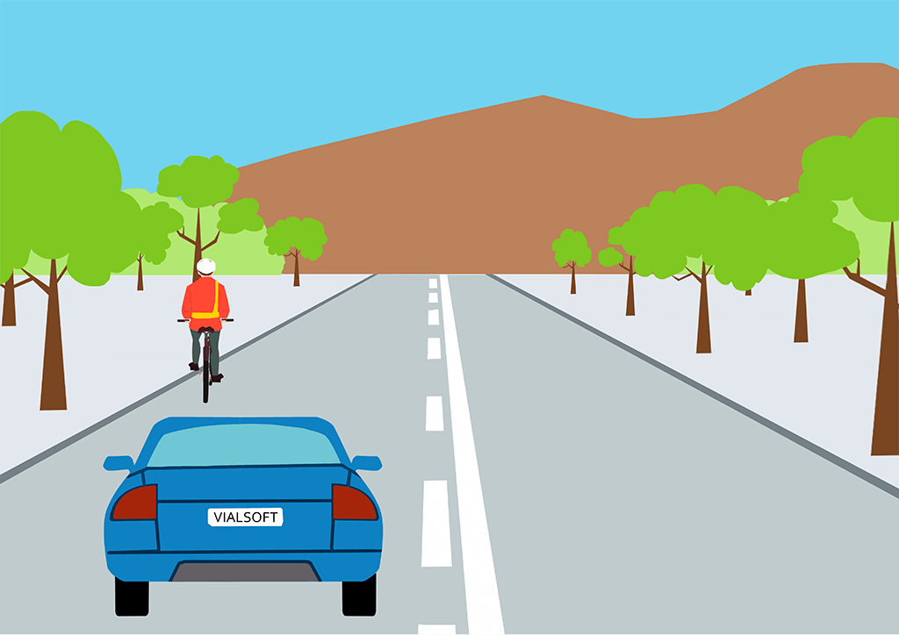
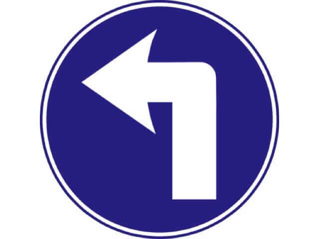
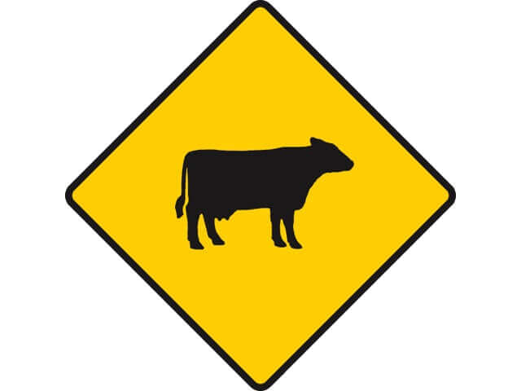
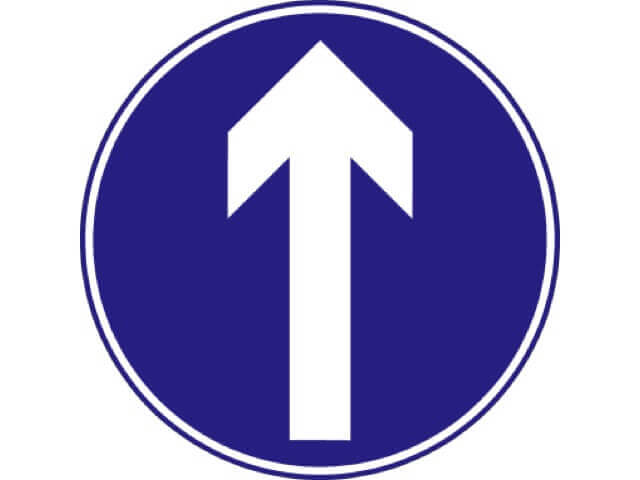

- 1. If a driver wishes to drive a vehicle but the tax disc is expired, what should they do?
- ✔ They should not drive it.
- ❌ They should only drive on motorways.
- ❌ They should only drive in rural areas.
- ❌ They should apply for a new one while continuing to drive.
- Explanation: A motor vehicle must be taxed and must display the up-to-date tax disc before it may be taken on the road.
- 2. What does this hand signal mean?
- ✔ The driver intends to move straight ahead.
- ❌ The driver intends to move out or turn right.
- ❌ The driver intends to slow down or stop.
- ❌ The driver intends to turn left.
- Explanation: This hand signal informs other road users or a garda directing traffic that the driver intends to proceed straight ahead.
- 3. In what position should a driver approach a roundabout when intending to take the first exit to the left?
- ✔ Approach in the left-hand lane and give way to traffic already on the roundabout.
- ❌ Approach in the right-hand lane and give way to traffic already on the roundabout.
- ❌ Approach in the closest lane to enter.
- ❌ Approach in the left-hand lane and proceed through the roundabout.
- Explanation: When you intend to take an exit to the left off a roundabout, you should always approach the roundabout in the left lane. Approach with caution and yield to traffic already on the roundabout.
- 4. At roadworks, what does this sign mean?
- ✔ Stop before or at the sign.
- ❌ Stop at the sign.
- ❌ Stop.
- ❌ Proceed with caution.
- Explanation: This is a roadworks warning sign telling you to stop. It may be displayed by a flagman or by an automated system.
- 5. When driving at night the full headlights should enable the driver to see for a distance of how many metres?
- ✔ 100 metres.
- ❌ 150 metres.
- ❌ 75 metres.
- ❌ 90 metres.
- Explanation: At night in good driving conditions the full headlights of a car will typically let you see 100 metres ahead. So, you should travel at a speed that allows you to stop within that distance.
- 6. What does this sign mean?
- ✔ Pass either side.
- ❌ Caution.
- ❌ Proceed with caution.
- ❌ No U-turn.
- Explanation: This sign tells you that traffic must pass on either side of the traffic island.
- 7. What should a driver check regularly to ensure they have will have a good clear view of the road when driving?
- ✔ There is enough fluid in the windscreen washer reservoir.
- ❌ The wiper blades.
- ❌ The windscreen to be sure it is free of scratches or holes.
- ❌ The laminate on the windscreen.
- Explanation: Check the vehicle’s windscreen wipers regularly to ensure the blades are in good condition, and check that there is water in the washer bottle.
- 8. If a driver applies the foot brake and hears a scraping noise, what is the most likely cause?
- ✔ The brake linings or pads are worn.
- ❌ The fuel injectors may be worn.
- ❌ Dirt may be under the brake pads.
- ❌ The exhaust system may need to be replaced.
- Explanation: You should test your brakes before setting out on a journey. If while driving you hear a scraping noise when you press the brake, the most likely reason is that the brake linings or pads are worn. In this case, your brakes won't work as well as they should. Have worn brake linings or pads replaced immediately.
- 9. What should a driver be aware of when driving at night along a shopping street with many different light sources?
- ✔ Traffic lights may be difficult to distinguish from the other bright lights.
- ❌ Hazard warning lights should be switched on.
- ❌ It may be difficult to see other drivers on the road.
- ❌ It may be difficult to see pedestrians.
- Explanation: When driving at night in an area where there is a variety of light sources, you need to be extra careful, as potential hazards might be more difficult to see.
- 10. When driving late at night what should a driver be aware of?
- ✔ That there is a danger of falling asleep.
- ❌ There there are animals that may be difficult to see.
- ❌ That other drivers may be drowsy.
- ❌ That headlights of approaching vehicles may be blinding.
- Explanation: Driving when you are tired can be very dangerous, and tiredness is one of the main causes of serious road collisions. If you become drowsy while driving, stop in a safe place and take a short nap. Then get some fresh air and stretch your legs for a few minutes before setting off again. Taking a caffeine- based drink such as coffee may also help.

- 11. How should a driver overtake the cyclist in this situation?
- ✔ By crossing the broken white line.
- ❌ The driver should not pass the cyclist in this situation.
- ❌ By staying to the left of the broken white line.
- ❌ By passing on the shoulder.
- Explanation: Where there are two lines in the centre of the road, you must obey the one closest to you. So, if the closest line is a broken white line, by law you may overtake, so long as it is safe to do so.
- 12. Why is it dangerous to allow children to stand in the space between the front seats of a car?
- ✔ They could be thrown forward if the brakes are applied suddenly.
- ❌ Because they could fall between the seats.
- ❌ They could fall and land on an adult.
- ❌ The feet could catch in the seat belts.
- Explanation: When carrying children in a car or goods vehicle, it is the driver's responsibility to make sure that they are suitably restrained.
- 13. What does this sign mean?
- ✔ Staggered crossroads ahead with roads of equal importance.
- ❌ T-junction ahead.
- ❌ Crossroads ahead with roads of equal importance.
- ❌ Main road bears to the right.
- Explanation: This sign gives advance warning of a staggered junction ahead with roads to the left and right. Be aware that vehicles may be emerging from these roads.
- 14. When a vehicle is being driven by a person who is not its owner but who has the owner’s consent, who should ensure that the vehicle is properly insured?
- ✔ Both the driver and the vehicle owner.
- ❌ The vehicle owner.
- ❌ The driver.
- ❌ The insurer.
- Explanation: All drivers must have insurance covering them to drive a vehicle on a public road. It is a serious offence to drive a vehicle that is not insured. It is also an offence to allow a vehicle that you own to be driven by an uninsured driver.
- 15. After overtaking another vehicle, what should a driver do?
- ✔ Gradually move back into the left when the vehicle has been overtaken.
- ❌ Reduce speed.
- ❌ Remain in the right lane.
- ❌ Increase speed. Continue in right lane.
- Explanation: After overtaking, check your mirrors, signal and return to your normal lane position as soon as it is safe. Take a smooth easy line and don’t cut in sharply.
- 16. What do flashing amber arrows indicate?
- ✔ Drivers should proceed in the direction indicated.
- ❌ Drivers should stop immediately.
- ❌ Drivers should drive with caution.
- ❌ Drivers should slow down.
- Explanation: When you meet a flashing amber arrow, you should proceed in the direction indicated provided it is safe to do so. Large flashing amber arrows can be found at roadworks on dual carriageways and motorways
- 17. What should the driver do when approaching a humpbacked hill?
- ✔ The driver should reduce speed, keep to the left and be alert for hazards ahead.
- ❌ The driver should increase speed, keep to the left and be alert for hazards ahead.
- ❌ The driver should reduce speed, keep to the right and be alert for hazards ahead.
- ❌ The driver should increase speed, keep to the right and be alert for hazards ahead.
- Explanation: As you approach a humpbacked bridge or hill, you should be aware that there might be hidden dangers ahead - for example, overtaking traffic coming towards you. You should always read the road ahead and be prepared to react to changing traffic situations such as this.
- 18. Why should the valve be replaced when having a tubeless tyre fitted?
- ✔ To ensure the tyre will stay inflated.
- ❌ To deflate the tyre.
- ❌ To maximise air pressure.
- ❌ To minimise air pressure.
- Explanation: When fitting a new tubeless tyre to a vehicle it is a good idea to change the valve also, because it has presumably been on the wheel since the old tyre was fitted; and it could break down, leak and cause the air to escape.
- 19. When is it permissible to overtake another vehicle on the left-hand side?
- ✔ When the vehicle in front is signalling to turn right.
- ❌ When the vehicle in front is signalling to turn left.
- ❌ Never. Passing on the left is prohibited.
- ❌ When the vehicle is driving below the speed limit.
- Explanation: You may overtake on the left when the driver in front has moved out and signaled their intent to turn right and you are going straight ahead - provided there is enough room to do so safely and your path will not be obstructed by the swing of a large vehicle turning right.
- 20. What should a driver do when being overtaken by another vehicle?
- ✔ Continue at the same pace.
- ❌ Decrease speed.
- ❌ Increase speed.
- ❌ Pull to the far shoulder.
- Explanation: When you are being overtaken by another vehicle, you should continue at the same pace but be alert in case the overtaking vehicle suddenly pulls back in front you.
- 21. Is a driver permitted to park at an entrance to a property?
- ✔ Yes, with the property owner’s consent.
- ❌ No, parking at an entrance to a property is prohibited.
- ❌ Yes, when no signs are posted stating otherwise.
- ❌ Yes, if parking for a short duration.
- Explanation: You may park across the entrance to a property only with the owner’s consent. Parking across an entrance may cause inconvenience and danger to persons entering or leaving the property.
- 22. When a wiper blade fails to clear the windscreen what should the driver do?
- ✔ Switch the wipers to the highest speed.
- ❌ Switch on the wipers to the lowest speed.
- ❌ Turn off the wipers.
- ❌ Take the vehicle to a competent mechanic.
- Explanation: Use the windscreen wipers to keep the windscreen clear of rain, spray, snow or fog. Check them regularly to ensure that they are in good working order, and replace them when they become worn, before they become ineffective.
- 23. When driving, where should a driver rest their left foot?
- ✔ On the floor or foot rest.
- ❌ On the clutch.
- ❌ On the brake pedal.
- ❌ On the left door.
- Explanation: The clutch is the connection between the engine and the gearbox. It enables the vehicle to move when a gear is engaged. You should not rest your foot on the clutch pedal because it may disengage the selected gear or damage the clutch mechanism.
- 24. What does this sign mean?
- ✔ Roundabout ahead.
- ❌ Mini-roundabout ahead.
- ❌ Traffic merging/diverging ahead.
- ❌ Road divides ahead.
- Explanation: This sign gives advance warning of a roundabout ahead. You must prepare to yield to vehicles already on the roundabout coming from the right.
- 25. What should drivers do if they approach road works and there is earth-moving machinery moving about?
- ✔ Reduce speed as there may be loose gravel or mud on the road.
- ❌ Increase speed to pass as quickly as possible.
- ❌ Continue driving without change.
- ❌ Stop and wait until the mud is removed.
- Explanation: Where earth-moving machinery is working, there are likely to be mud and gravel deposits on the road. Also the noise of such machines might make it hard for road workers to hear the approaching traffic. When you come across earth-moving machinery, slow down and proceed with extreme caution.
- 26. Generally, what lighting must a car, tractor or works vehicle have when driving at night?
- ✔ Headlights, front and rear side lights, rear number plate light, red rear reflectors, brake lights and indicators.
- ❌ Headlights only.
- ❌ Headlights and front and rear side lights.
- ❌ Brake lights and indicators.
- Explanation: Cars, tractors and works vehicles are required by law to have headlights, front and rear side lights, rear number plate light, rear reflectors, brake lights and indicators.
- 27. What does this sign mean?
- ✔ Slippery road ahead.
- ❌ Loose chippings on road.
- ❌ Uneven surface ahead.
- ❌ Series of dangerous bends ahead.
- Explanation: This roadworks warning sign tells you that the surface ahead is slippery and that there is an increased risk of skidding .
- 28. What should a driver do after passing through a flooded section of road?
- ✔ Apply the brake pedal lightly at slow speed for a short distance to dry the brakes.
- ❌ Change the windscreen wipers.
- ❌ Pull over to check the vehicle.
- ❌ Check tyre pressure.
- Explanation: When you drive through a flooded section of road, your brakes may become less effective. If this happens, test your brakes to ensure that they have not been affected by the water - check in your mirrors before you do this. If they have been affected (and this is more than likely just temporary), press gently on the brake pedal as you are driving until they dry out and return to normal.
- 29. What is the normal stopping distance of a car or motorcycle travelling at 50km/h on a wet road?
- ✔ 35metres.
- ❌ 25 metres.
- ❌ 30 metres.
- ❌ 20 metres.
- Explanation: None
- 30. What should a driver do if an ambulance is stopped up ahead with its flashing blue lights on?
- ✔ Reduce speed and prepare to stop if necessary.
- ❌ Stop immediately.
- ❌ Increase speed.
- ❌ Pull to the right.
- Explanation: When you come upon an emergency vehicle stopped on the road, you should slow down and be prepared to stop. Do not stop to see what is happening as this could be dangerous and you might cause an obstruction to the flow of traffic.
- 31. What precautions could a driver take against the risk of fire in their vehicle?
- ✔ Investigate strong fumes and carry a fire extinguisher.
- ❌ Store water in the car.
- ❌ Transport flammable goods.
- ❌ Make sure you have a water pistol handy to put out any fires.
- Explanation: A strong smell of fuel is usually an indication that something is wrong, and you should stop and investigate as soon as possible. Leaking or spilling petrol can be dangerous because it is so combustible. It is good practice to carry a fire extinguisher in your vehicle, so that you can deal with any small fires.

- 32. What should the driver do in this situation?
- ✔ The driver may turn in front of the other two cars.
- ❌ The driver may not turn in front of the other two cars.
- ❌ The driver should stop.
- ❌ The driver should switch to a lower gear.
- Explanation: When you are turning right from a major road to a minor road, you must yield to oncoming traffic and only proceed when it is safe to do so. However, the drivers on the minor roads must give way to the traffic on the major road.
- 33. What should a driver do when overtaking parked vehicles?
- ✔ Allow sufficient clearance when passing.
- ❌ Pass really close to give maximum clearance towards the center.
- ❌ Try to hit the mirrors when passing.
- ❌ Stop after each car to make sure no pedestrian exit in between.
- Explanation: None
- 34. What should the driver allow for when following the bus on an icy road?
- ✔ A longer braking distance.
- ❌ A shorter braking distance.
- ❌ A sudden loss of control.
- ❌ A decrease in speed.
- Explanation: When driving in icy conditions, you should always reduce speed and allow a bigger gap to the vehicle in front in order to be able to stop safely if necessary.
- 35. In general, how often should a driver check the tyre pressure of a vehicle?
- ✔ Regularly.
- ❌ Once per month.
- ❌ Twice per year.
- ❌ Daily.
- Explanation: As a driver, it is your legal responsibility to make sure that your vehicle is roadworthy. To do this, you should carry out weekly and periodical checks, including a weekly tyre pressure check.
- 36. What is the maximum gross weight of a vehicle that may be driven by the holder of a category B driving licence?
- ✔ 3,500 kilograms.
- ❌ 2,500 kilograms.
- ❌ 2,000 kilograms.
- ❌ 4,500 kilograms.
- Explanation: The holder of a category B driving licence is not permitted to drive a vehicle with a design gross vehicle weight of more than 3,500kgs. This restriction is noted on the licence.
- 37. What does this sign mean?
- ✔ Possibility of deer or wild animals ahead.
- ❌ Possibility of cattle or farm animals ahead.
- ❌ Possibility of animals ahead.
- ❌ Pedestrian crossing ahead.
- Explanation: This sign gives advance warning that there may be deer or other wild animals coming onto the roadway.
- 38. What should a driver do on a narrow road when another vehicle is coming in the opposite direction?
- ✔ Reduce speed and allow reasonable clearance between their vehicle and the oncoming one before proceeding.
- ❌ Reduce speed and pull to the right.
- ❌ Increase speed and pass the vehicle.
- ❌ Reduce speed and pull to the left.
- Explanation: You should always be prepared to react to hazards ahead. When you meet a vehicle coming against you on a narrow road, you should show consideration and slow down to a appropriate speed so that the two vehicles can pass each other safely.
- 39. What can a driver do to maximise fuel efficiency while driving?
- ✔ Avoid carrying unnecessary weight.
- ❌ Carry as much weight as possible.
- ❌ Switch gears smoothly.
- ❌ Ensure oil levels are maintained.
- Explanation: The more extra weight is in your vehicle, the more fuel you use. Using a roof rack or a roof box increases wind resistance and this also increases fuel consumption - by as much as 15%. Remove roof racks and roof boxes when not in use.
- 40. When driving along and required to stop suddenly, what should a driver do?
- ✔ Apply the footbrake firmly. Maintain firm pressure on the footbrake.
- ❌ Pump the brake pedal rapidly.
- ❌ Engage a lower gear.
- ❌ Engage a higher gear.
- Explanation: To stop your vehicle in an emergency, apply the footbrake firmly, and maintain the pressure until the vehicle stops. Depress the clutch pedal just before stopping. Vehicles are fitted with braking systems to stop the vehicle.
- 41. Which part of the car must be maintained in good condition?
- ✔ Headlights. Seatbelts.
- ❌ Steering wheel. Seatbelts.
- ❌ Headlights. Mirrors.
- ❌ Fuel pump. Tyres.
- Explanation: You are responsible for your vehicle's roadworthiness and you should check it at regular intervals. Among the checks you should make are that all the lights (including the headlights) and all the seatbelts (driver’s and passengers’) are in good working order.
- 42. What should a driver do before undertaking a long journey?
- ✔ Check the tyres are inflated to normal air pressure.
- ❌ Adjust all mirrors.
- ❌ Change the oil.
- ❌ Adjust seating.
- Explanation: It is important to check the tyre pressure before starting a long journey as incorrect air pressure can adversely affect many of the vehicle's systems, including brakes, steering, suspension and fuel consumption.
- 43. How can fuel efficiency be improved?
- ✔ By using gentle acceleration and making gear changes appropriate to speed.
- ❌ By using lower gears.
- ❌ By braking frequently.
- ❌ By maintaining appropriate fuel levels.
- Explanation: The way you drive can contribute to your vehicle’s fuel efficiency: Accelerate gently; Use the highest available gear (without causing the engine to struggle); and Drive smoothly- this also reduces wear and tear on a vehicle.
- 44. What should a driver do if a warning light starts flashing on the dashboard of their vehicle?
- ✔ Stop and check the problem.
- ❌ Bring the vehicle to a competent mechanic.
- ❌ Check the fuel gauge.
- ❌ Drive with care.
- Explanation: None
- 45. How does a driver know when there is a problem with the brakes in their vehicle?
- ✔ The vehicle’s stopping ability is affected.
- ❌ There is a screeching noise when braking.
- ❌ There is an increase in skidding.
- ❌ Steering is lighter than normal.
- Explanation: You should test your brakes before setting out on a journey. If when you are braking you notice that it takes longer than usual to bring the vehicle to a stop, you should have the brakes checked by a mechanic immediately.

- 46. What does this sign mean?
- ✔ Entry to motorway.
- ❌ End of motorway.
- ❌ Traffic queues likely ahead.
- ❌ Motorway ends 500 metres ahead.
- Explanation: This is a motorway information sign telling you that you are entering a motorway.
- 47. What should a driver consider doing when parking on a two-way street facing downhill?
- ✔ Turning the steering wheel towards the kerb.
- ❌ Turning the steering wheel away from the kerb.
- ❌ Switching on the hazard warning lights.
- ❌ Using the emergency brake.
- Explanation: When you are parking facing downhill, it is a good idea to angle the wheels towards the kerb. This will help to hold the vehicle in place and ease the pressure on the handbrake. Where possible, you should park with the flow of traffic.
- 48. What should a driver do when driving at night on an unlit road?
- ✔ Watch out for pedestrians wearing dark clothing. Watch out for cars parked on the left. Watch out for stray animals or livestock.
- ❌ Drive with dimmed headlights.
- ❌ Be prepared for signs of drowsiness.
- ❌ Switch on hazard warning lights.
- Explanation: While driving at night and even with the best headlights, it can be very difficult to see all the hazards that you might come across - for example, stray animals or livestock on the road. At night you should drive at a speed that will enable you to stop safely within the distance you can see to be clear ahead.
- 49. What should a driver do if they wish to turn right at traffic lights while the green light is showing and there is oncoming traffic approaching?
- ✔ Go forward towards the centre of the junction and wait for a suitable gap to appear in the oncoming traffic before making the turn.
- ❌ Increase speed, go forward towards the centre of the junction and make the turn as quickly as possible.
- ❌ Reduce speed, go forward towards the left of the junction and make the turn when safe to do so.
- ❌ Go forward towards the centre of the junction, check mirrors and make the turn.
- Explanation: If you wish to turn right at a set of traffic lights, drive into the junction when you see a green light, taking care not to block any oncoming traffic. Then complete the turn when it is safe to do so.
- 50. What should a driver do where a person has been injured in a collision?
- ✔ Move the victim only if there is a risk of fire or further injury.
- ❌ Move the victim away from the scene.
- ❌ Give the victim water.
- ❌ Flag down other vehicles to help.
- Explanation: Never move an injured person at the scene of a collision unless there is a risk of fire or further injury. Moving an injured person could add to their injuries. Trained personnel know best how to attend to injured persons. Call the emergency services (on 999 or 112) or make sure that someone else has called them.
- 51. What does this sign mean?
- ✔ Start of central reserve or obstruction.
- ❌ End of central reserve or obstruction.
- ❌ Start of motorway.
- ❌ Uneven surface ahead.
- Explanation: This roadworks warning sign tells you that two-way traffic will separate to avoid an obstruction.
- 52. What should a driver do if the right-hand headlight bulb fails when driving at night?
- ✔ Have the bulb replaced immediately.
- ❌ Continue driving until is is convenient to replace.
- ❌ Pull over immediately.
- ❌ Notify the Gardai.
- Explanation: None
- 53. What should a driver do in this situation?
- ✔ Reduce speed and be prepared to stop as other children could follow.
- ❌ Increase speed and be prepared to stop as other children could follow.
- ❌ Stop immediately and allow the children to pass with care.
- ❌ Move into the opposite lane to avoid the children.
- Explanation: You should always be aware of other road users especially children, who can be unpredictable and show no road sense. You should drive with extra care in areas where there are children about - for example, near schools, playgrounds and in residential areas.
- 54. What should a driver do if there is black ice on the road?
- ✔ Avoid harsh braking, steering and acceleration
- ❌ Accelerate gently.
- ❌ Drive in a lower gear.
- ❌ Drive around it safely.
- Explanation: One of the signs that you might be driving on black ice is a sudden decrease in the level of road noise. This is due to the lack of grip between the tyres and the road. Another sign is that the steering will seem lighter than normal. If you suspect you are driving on black ice, you should avoid harsh braking, steering and acceleration. This will help reduce the risk of skidding.
- 55. When turning right from a minor road onto a dual carriageway with a wide median strip, what should a driver do?
- ✔ When clear on the right, proceed to the central median and then wait until it is clear on the left before proceeding.
- ❌ Be sure to signal and check mirrors.
- ❌ Reduce speed.
- ❌ Stay as far to the right as possible.
- Explanation: If you wish to turn right onto a dual carriageway from a minor road and the central median is big enough, you may complete the manoeuvre in two stages.
- 56. What is the purpose of the battery fitted to a petrol- or diesel-powered motor vehicle?
- ✔ To start the engine.
- ❌ To improve fuel efficiency.
- ❌ To decrease wear and tear on the engine.
- ❌ To lubricate the engine.
- Explanation: The primary purpose of the battery is to start the engine. When the engine is running, it produces its own electricity to charge the battery and run the various electrical components, including lights, heating, radio and so on.
- 57. What does the broken yellow line road marking mean?
- ✔ The edge of the carriageway or hard shoulder.
- ❌ Only pass when safe to do so.
- ❌ Parking prohibited at all times.
- ❌ Drivers must not overtake.
- Explanation: A single broken yellow line along the side of the road marks the edge of the carriageway/hard shoulder. This is normally for the use of pedestrians and cyclists. As a driver, however, you may use it briefly to allow faster traffic to overtake, but only where it is safe to do so.
- 58. If the traffic lights change while pedestrians are still crossing at pelican crossings or traffic lights, what should a driver do?
- ✔ Wait patiently and let them cross with ease.
- ❌ Proceed with caution.
- ❌ Maintain speed. Honk the horn to alert the pedestrians.
- ❌ Switch to a lower gear.
- Explanation: You must always yield to pedestrians already crossing at a pedestrian crossing or junction, and you must not hurry them off the crossing by aggressive actions. Vehicles do not have a greater right of way over other road users.
- 59. What do these signs together mean?
- ✔ Only buses, cyclists and taxis are allowed to use the lane during the hours indicated.
- ❌ With flow bus lane ahead on left.
- ❌ With flow bus and cycle lane ahead on the right.
- ❌ Be aware of buses and cyclists.
- Explanation: This sign tells you there is a with-flow bus lane ahead - that is, one where the buses move in the same direction as the traffic to their right. The information plate tells the times when the bus lane is in operation. Only buses, taxis and cyclists may use the bus lane during those hours.
- 60. What does this sign mean?
- ✔ Maximum speed is 60km/h.
- ❌ Minimum speed is 60km/h.
- ❌ Average speed is 60km/h.
- ❌ Rest stop is in 60km.
- Explanation: This sign tells you that the maximum legal speed limit permitted for this section of road is 60km/h.
- 61. What does this sign mean?
- ✔ Traffic merging/diverging ahead.
- ❌ Mini-roundabout ahead.
- ❌ Road divides ahead.
- ❌ T-junction with dual carriageway ahead.
- Explanation: This sign gives advance warning of roads merging and diverging at the left ahead. You should be prepared for traffic changing direction ahead as vehicles may be entering or exiting at the junctions on the left.
- 62. What is the purpose of engine oil?
- ✔ It lubricates the engine components.
- ❌ It reduces engine malfunctions.
- ❌ It monitors fuel consumption.
- ❌ It reduces fuel consumption.
- Explanation: The purpose of engine oil is to lubricate and cool the moving parts of the engine.
- 63. What is the purpose of side-impact protection bars?
- ✔ To protect the occupants when the vehicle is hit from the side.
- ❌ To protect the occupants when the vehicle is hit from behind.
- ❌ To protect the vehicle when involved in a collision.
- ❌ To protect the driver when the vehicle is hit from the side.
- Explanation: Side-impact protection bars are fitted to some vehicles to protect the occupants of the vehicle in the event of a collision from the side.
- 64. How should a child restraint system be secured in a vehicle?
- ✔ It should be secured with seatbelts or ISOFIX fittings.
- ❌ It should never be secured.
- ❌ It should be tied down on the both sides.
- ❌ It should be secured with seatbelts in the passenger seat.
- Explanation: A child restraint system should be secured in the vehicle either with the seatbelts of the car or with approved fixings. Always use a restraint system that is appropriate for the age, height and weight of the child, and follow the manufacturer’s instructions.
- 65. What should a driver do when travelling on a motorway or dual carriageway?
- ✔ Be alert for other drivers who may suddenly change lanes or reduce speed.
- ❌ Be aware of changes in road surfaces.
- ❌ Be prepared for changes in the speed limit.
- ❌ Signal early to inform drivers of lane changes.
- Explanation: Motorways and dual carriageways are designed to help traffic travel faster and more safely between destinations. Traffic conditions can change very quickly because of the speed and increased volumes of traffic and lanes, and you need to be particularly alert to other drivers changing lanes or reducing speed.
- 66. What should a driver do to avoid the need for harsh braking?
- ✔ Look ahead and anticipate what others may do.
- ❌ Drive below the speed limit.
- ❌ Avoid driving in high gears.
- ❌ Do not follow close behind other drivers.
- Explanation: You should know what speed you're travelling at, you should always drive at a speed that is appropriate to the conditions you are driving in, and you should be able to stop smoothly and safely within the distance you can see to be clear ahead.
- 67. What should a driver do if dazzled (or blinded) by the lights of an oncoming vehicle at night?
- ✔ Do not look directly at the lights. Look away and slow down and stop if necessary.
- ❌ Notify the other driver by flashing your headlights.
- ❌ Reduce speed.
- ❌ Switch on hazard warning lights.
- Explanation: If you are dazzled by the lights of an oncoming vehicle, look towards the verge until the vehicle has passed. Slow down and stop if necessary.
- 68. What should the driver do when there is a sharp dip in the road ahead?
- ✔ Reduce speed, keep to the left and be alert for hazards ahead.
- ❌ Increase speed, keep to the left and be alert for hazards ahead.
- ❌ Reduce speed, keep to the right and be alert for hazards ahead.
- ❌ Increase speed, keep to the right and be alert for hazards ahead.
- Explanation: As you approach a sharp dip in the road, you should be aware that there might be hidden dangers ahead. For example, there might be pedestrians, cyclists or other approaching traffic, or the road could be flooded in the dip. You should always read the road ahead and be prepared to react to changing traffic situations - you might need to reduce your speed and drive with extra care.
- 69. What should a driver do before starting a journey on which they will encounter a tunnel?
- ✔ Check the tunnel height before starting the journey.
- ❌ Ensure windows are clean.
- ❌ Check all brake lights.
- ❌ Plan the route to avoid driving through the tunnel at night.
- Explanation: You should know height of your vehicle and the load you are carrying, and plan your route accordingly. Always read the road ahead and watch for warning signs about height restrictions. These may relate to tunnels, low bridges or car park entrances.
- 70. What does this sign mean?
- ✔ Sharp depression or dip ahead.
- ❌ Sharp rise in the road ahead- for example, a humpack bridge.
- ❌ Dangerous bend ahead.
- ❌ Dangerous corner ahead.
- Explanation: This sign gives advance warning of a dip or depression in the road ahead. You should reduce your speed accordingly.
- 71. While driving, the driver notices the vehicle temperature gauge showing red. What should they do?
- ✔ Stop in a safe place and have the problem investigated.
- ❌ Ignore it.
- ❌ Bring the vehicle to a competent mechanic immediately.
- ❌ Decrease driving speed.
- Explanation: Many vehicles are fitted with various warning lights and gauges. A warning light or a red zone on a temperature gauge means the engine is starting to overheat and the vehicle should not be driven until the problem is rectified.
- 72. What does this sign mean?
- ✔ Flagman ahead.
- ❌ Roadworks ahead.
- ❌ Road narrows on both sides.
- ❌ School children crossing ahead.
- Explanation: This roadworks warning sign tells you that the traffic sequence ahead is controlled manually or by an automatic system.
- 73. What roads are learner permit holders allowed to drive on?
- ✔ All roads except motorways.
- ❌ All roads.
- ❌ Only motorways.
- ❌ Only rural roads.
- Explanation: A learner permit holder must not drive on a motorway. It is a serious offence to do so.
- 74. What does this sign mean?
- ✔ Bus and cycle lane ahead on right.
- ❌ With flow bus lane on the left.
- ❌ Be aware of the bus and cycle lane ahead.
- ❌ Contra flow bus lane ahead.
- Explanation: This sign tells you there is a with-flow bus lane ahead to the right. Only buses, taxis and cyclists may use the bus lane during the stated operational hours.
- 75. What type of noise might fast cornering create?
- ✔ Tyre squeal.
- ❌ Exhaust noise.
- ❌ Acceleration noise.
- ❌ Engine noise.
- Explanation: If you drive around a corner too fast, the tyres begin to lose contact with the surface of the road, and this causes a squealing sound. If you continue driving in this way, you can lose control of the vehicle.
- 76. What does this traffic light mean?
- ✔ Traffic must stop at the traffic light.
- ❌ Stop, unless it is unsafe to do so.
- ❌ Proceed with caution.
- ❌ Traffic may proceed if the way is clear.
- Explanation: A red light means STOP. You must not go beyond the stop line or (if there is no stop line ) beyond the light.
- 77. What affects the braking distance of a vehicle?
- ✔ The speed and weight of the vehicle.
- ❌ Just the speed of the vehicle.
- ❌ Just the weight of the vehicle.
- ❌ The speed, width and weight of the vehicle.
- Explanation: The overall stopping distance of your vehicle depends on its speed and weight. Faster and heavier vehicles require greater stopping distances.
- 78. The driver intends to turn right at this junction - what should the driver do?
- ✔ Stop at the line. Proceed after the bus and motorcycle have passed.
- ❌ Proceed with caution.
- ❌ Reduce speed and proceed with care.
- ❌ Increase speed and turn before the other vehicles.
- Explanation: When you are turning right at a junction, you should yield to traffic on the major road, and to oncoming traffic at the junction. You must stop at the line where a junction is controlled by a Stop sign and Stop line. Do not proceed until it is safe to do so.
- 79. As the driver of the car, which conduct is correct?
- ✔ A driver may proceed with caution.
- ❌ Increase speed.
- ❌ Let the motorcyclist pass.
- ❌ Stop immediately.
- Explanation: You may proceed, but you should be aware of the presence of the motorcyclist. You should always be prepared to react to a change in the traffic situation - for example, the motorcyclist might not have seen your vehicle.
- 80. What is the minimum insurance cover which is required to drive a vehicle on a public road?
- ✔ Third Party.
- ❌ Second Party.
- ❌ First Party.
- ❌ There is no minimum insurance cover.
- Explanation: As a motorist, you must have a minimum of third party insurance. This indemnifies you against any claim made against you.
- 81. There are pedestrians on the footpath ahead and there are pools of water on the road. What should a driver do?
- ✔ Reduce speed and try to avoid the pools of water so as not to splash the pedestrians.
- ❌ Increase speed and try to avoid the pools of water so as not to splash the pedestrians.
- ❌ Swerve around the pools of water so as not to splash the pedestrians while maintaining the same speed.
- ❌ Maintain speed and continue to drive through the pools of water.
- Explanation: During wet conditions, you should be aware that surface water can affect the stability of your vehicle. This is particularly so where the water lies in pools. As you drive through surface water, you should show consideration to pedestrians and cyclists and try not to splash them as you pass.

- 82. What does this sign mean?
- ✔ Turn left ahead.
- ❌ Turn right ahead.
- ❌ Yield to traffic on the major road.
- ❌ Do not turn left.
- Explanation: This sign tells you that you must turn left ahead. It is usually displayed on the approach to a one-way system.
- 83. What does this sign mean?
- ✔ Major road ahead.
- ❌ Obstruction between lanes ahead.
- ❌ Traffic merging/diverging ahead.
- ❌ Road divides ahead.
- Explanation: This sign gives advance warning of a crossroads junction with a major road ahead. Be prepared to stop.
- 84. When is jack-knifing most likely to occur?
- ✔ When trying to reduce speed sharply while travelling downhill.
- ❌ When driving in poor conditions.
- ❌ When turning too sharply.
- ❌ When increasing speed too quickly.
- Explanation: Towing a trailer or caravan dramatically reduces the stability of the towing vehicle. If a driver brakes sharply or slows down quickly, the trailer may pivot around the tow hitch coupling, causing both vehicles to go off course, and possibly overturn.
- 85. How should a driver negotiate a bend when the road is slippery?
- ✔ Drive slowly and smoothly.
- ❌ Stay close to the shoulder.
- ❌ Minimise gear shifts.
- ❌ Accelerate gently.
- Explanation: Be extra careful when negotiating bends in slippery conditions. Slow down gently on the approach, select the appropriate gear for the speed of the vehicle and use gentle steering and acceleration to drive around the bend. Avoid braking in the bend as this may cause the vehicle to become unstable and cause a skid.
- 86. What does this sign mean?
- ✔ Shared cycle/pedestrian track.
- ❌ Be aware of school warden.
- ❌ Proceed with caution.
- ❌ Stop for children.
- Explanation: This sign indicates the start of a track for cyclists and pedestrians only. If the track is bounded by a broken white line, other road users should avoid using it wherever possible. If it is bounded by a continuous white line, drivers of cars and other vehicles must not drive on this track.
- 87. If driving from A to B, what do these road markings mean?
- ✔ A driver may not cross the lines to overtake.
- ❌ A driver may overtake if it is safe to do so.
- ❌ No parking allowed.
- ❌ No U-turn allowed.
- Explanation: Where there is a broken white line and a continuous white line along the centre of the road, you must obey the line that is nearest to you. In this case you may not cross the lines.
- 88. What is the danger associated with applying the handbrake at speed?
- ✔ The back wheels could lock and cause the vehicle to skid.
- ❌ The front wheels could lock and cause the vehicle to skid.
- ❌ A front-tyre blowout may occur.
- ❌ The vehicle may stop suddenly and throw passengers forward.
- Explanation: The handbrake should never be used when travelling at speed. This practice is potentially dangerous, as the rear wheels could lock up and the vehicle could skid out of control.
- 89. Is a driver allowed to use rebated (green) diesel fuel in a car on a public road?
- ✔ Green diesel may never be used in a car.
- ❌ Yes, green diesel may be used.
- ❌ Yes, if driving in a lower gear.
- ❌ Yes, if avoiding major motorways.
- Explanation: If, in its normal use, a vehicle is used on a public road, it must use unrebated (white) diesel, as the appropriate excise duties are included in the purchase price. You can be prosecuted for using green diesel in a vehicle on a public road.
- 90. What does this sign mean?
- ✔ 200 metres to the next exit.
- ❌ 200 metres to the end of the motorway.
- ❌ Nearside lane of two closed.
- ❌ End of motorway.
- Explanation: These motorway information signs tell you that the next exit off the motorway is 300, 200 and 100 metres ahead respectively.
- 91. What should a driver do if their vehicle goes on fire in a tunnel?
- ✔ Leave the vehicle and follow the emergency escape route.
- ❌ Turn off the engine immediately. Call emergency services.
- ❌ Call emergency services. Wait at the scene for their arrival.
- ❌ Pull as far left as possible. Turn off the engine. Notify emergency services.
- Explanation: If your vehicle goes on fire in a tunnel, you should stop the vehicle as soon as possible, evacuate any passengers to a safe place, go to an emergency station and use the emergency phone to alert the tunnel operator. If traffic comes to a halt in a tunnel, switch off your engine to prevent a build up of fumes in the tunnel. Stay patient and follow the instructions of the tunnel operators.
- 92. What should a driver do when entering a tunnel?
- ✔ Switch on dipped headlights. Keep a safe distance from the vehicle in front. Remove sunglasses, if wearing them.
- ❌ Increase speed. Switch on dipped headlights.
- ❌ Reduce speed. Switch on hazard warning lights.
- ❌ Be aware for possible changes in road surface.
- Explanation: As you enter the tunnel, turn on your dipped headlights and if you are wearing sunglasses, take them off. Tailgating could be particularly dangerous in a tunnel. So, while you are in the tunnel, keep a safe distance from the vehicle in front - the minimum safe distance for a car or motorcycle is 50 metres and for all other vehicles it’s 100 metres. Pay attention to any information signs displayed.
- 93. When a driver is making a left-hand turn, what mirrors should they particularly concentrate on?
- ✔ The interior and left exterior mirror.
- ❌ The interior and right exterior mirror.
- ❌ The rear view mirror.
- ❌ The left exterior mirror only.
- Explanation: When you are turning left, you should be aware that cyclists and other vehicles may come up on your inside. For that reason it is particularly important to check your left exterior mirror and your internal mirror before turning. Always use the Mirror-Signal-Mirror (blind spots)-Manouevre routine when you are turning and be extra careful If you have to cross a bus lane to make the turn.
- 94. What should a driver do when they get a puncture while driving?
- ✔ Stop at a safe place and change the tyre
- ❌ Continue driving.
- ❌ Stop immediately and change the tyre.
- ❌ Pull to the left-shoulder.
- Explanation: If you get a puncture while driving, find a suitable and safe place to stop and change the wheel. If you can’t find a suitable place immediately, drive slowly (with your hazard warning lights turned on) to avoid further damage to the tyre or rim until a safe place is found.
- 95. How does rain affect driving in this Situation?
- ✔ It increases the danger of skidding.
- ❌ It decreases the danger of skidding.
- ❌ It has no effect.
- ❌ Your braking distance is reduced.
- Explanation: When it is wet, your tyres do not grip the road surface as well as when it is dry, your stopping distance is increased and you are more likely to skid. For these reasons you should slow down during or after rain and keep a greater distance from the vehicle in front.
- 96. When should the handbrake be used to bring a vehicle to a halt?
- ✔ Never.
- ❌ Only in emergency situations.
- ❌ When driving in poor conditions.
- ❌ When driving using a high gear.
- Explanation: The handbrake should never be used to bring a vehicle to a halt. This practice is potentially dangerous, as the rear wheels could lock up and the vehicle could skid out of control. In addition, using the handbrake does not operate the rear brake lights to warn following traffic.
- 97. What should the driver do if they are driving and feel tired?
- ✔ The driver should stop and take a break.
- ❌ The driver should drink water.
- ❌ The driver should eat a small snack.
- ❌ The driver should continue driving until it is safe to pull over.
- Explanation: Driving when you are tired can be very dangerous, and tiredness is one of the main causes of serious road collisions. Being very tired may cause you to micro-sleep (or nod off momentarily). At l00km/h you travel at 28 metres a second, so if you micro-sleep for just 4 seconds you would travel over 100 metres without being in control of the vehicle. Never drive if you are fighting sleep. If you do become drowsy while driving, stop in a safe place and take a short nap. Then get some fresh air and stretch your legs for a few minutes before setting off again. Taking a caffeine-based drink such as coffee may also help.
- 98. The vehicle's exterior mirrors are covered by a film of mud and dust. What should the driver do?
- ✔ Clean them with a cloth or tissue before continuing on.
- ❌ Do nothing. Exterior mirrors are not important.
- ❌ Pull over immediately.
- ❌ Use interior mirrors instead.
- Explanation: Keep your mirrors clean and properly adjusted, so that your view of the road to the rear and the sides is clear and unhindered.
- 99. What does this sign mean?
- ✔ No left turn.
- ❌ Do not pass on left.
- ❌ Yield to traffic on left.
- ❌ No U-turn.
- Explanation: This sign is displayed at a junction where you may not turn left.
- 100. What is the purpose of a seatbelt?
- ✔ To prevent the wearer from being thrown forward in the event of a crash or abrupt deceleration.
- ❌ To protect young passengers in the event of a collision.
- ❌ To prevent the wearer from being thrown back in the event of a crash or abrupt deceleration.
- ❌ To prevent children from leaving their seats while driving.
- Explanation: Seatbelts save lives and reduce the risk of injury by restraining the occupants of a vehicle in the event of a crash or sudden deceleration.
- 101. What does this hand signal mean?
- ✔ The cyclist intends to go straight on.
- ❌ The cyclist intends to slow down or stop.
- ❌ The cyclist intends to turn left.
- ❌ The cyclist intends to turn right.
- Explanation: This hand signal informs other road users that the cyclist intends to proceed straight ahead at a junction and drivers should show caution.
- 102. When is parking permitted at a sharp bend?
- ✔ Parking is never permitted at a sharp bend.
- ❌ Only during times when traffic is moving slow.
- ❌ In the event of an emergency.
- ❌ When special permission has been given.
- Explanation: Parking is never permitted where it might interfere in any way with the normal flow of traffic or obstruct or endanger other road users - for example, by forcing other of oncoming traffic drivers into the path.
- 103. What should a driver do if a tyre bursts on the vehicle they are driving?
- ✔ Hold the steering wheel firmly and pull in on the side of the road.
- ❌ Hold the steering wheel loosely and pull in on the side of the road.
- ❌ Switch off the engine immediately.
- ❌ Accelerate gently and pull off the road when safe to do so.
- Explanation: None
- 104. What effect would exhaust gases leaking into a vehicle have on the driver?
- ✔ The driver may become drowsy or ill.
- ❌ The driver may become more aware.
- ❌ The driver may become angry towards other drivers.
- ❌ The driver may increase driving speed.
- Explanation: Exhaust gases leaking into a vehicle can make the driver drowsy or ill, and this can lead to a serious collision. If you suspect that exhaust gases are leaking into the vehicle, you should have it checked by a qualified person.
- 105. What should the driver do when approaching this situation?
- ✔ Reduce speed and remain ready to brake since the girl on foot could suddenly cross the road.
- ❌ Increase speed to avoid the girl on foot.
- ❌ Pull into the right hand lane.
- ❌ Stop and allow the pedestrian to cross if needed.
- Explanation: It is often difficult to predict other road users’ behaviour. You should anticipate that if the pedestrian steps onto the road, the silver car will stop suddenly.
- 106. What does a rev counter provide information on?
- ✔ Engine revolutions.
- ❌ Oil levels.
- ❌ Fuel levels.
- ❌ Temperature.
- Explanation: The rev counter measures the speed of the engine in 'revolutions' per minute' (RPM). Generally, the higher the revs, the more fuel the engine is using, so you should keep an eye on the rev counter to help you drive in a more eco-friendly manner.
- 107. What should the driver do in this situation?
- ✔ The driver may proceed first.
- ❌ The driver should stop immediately.
- ❌ The driver should switch to a lower gear.
- ❌ The driver should check all blind spots.
- Explanation: You may turn right if there no oncoming traffic but you should also be aware that there might be traffic emerging from the minor roads.
- 108. What does this sign mean?
- ✔ Accompanied horses and ponies ahead.
- ❌ Possibility of cattle or farm animals ahead.
- ❌ Possibility of sheep ahead.
- ❌ Possibility of animals ahead.
- Explanation: This sign gives advance warning that there may be horses on the road ahead. You should show due regard for horses and their riders.
- 109. When is it permissible for a driver to carry a passenger on a trailer drawbar?
- ✔ Never.
- ❌ In emergencies only.
- ❌ When driving in rural areas.
- ❌ When driving in the day only.
- Explanation: You must never carry a passenger on a trailer drawbar because of the danger of the passenger falling between the vehicle and the trailer and being seriously injured or killed.
- 110. What is the effect on driving if there is a film of water between the vehicle's tyres and the road surface?
- ✔ Steering and braking will be less effective.
- ❌ Steering and braking will be more effective.
- ❌ There is no difference regarding effectiveness.
- ❌ My car's ABS takes care of this.
- Explanation: On a wet road, a film of water can build up between the tyres and the road surface. This is called 'aquaplaning 'and it has the effect of reducing the grip of the tyres on the road.
- 111. What effect can a broken lens have on a headlight?
- ✔ It can reduce and distort the beam.
- ❌ It has no effect on the headlight.
- ❌ It can reduce the brightness.
- ❌ It can harm the headlight.
- Explanation: You are responsible for your vehicle's roadworthiness and you should check it at regular intervals. Among the checks you should make are that all the lights are in working order. If you find defects in the lights, you should have them repaired as soon as possible.
- 112. What does this sign mean?
- ✔ Traffic signals ahead.
- ❌ Slow down.
- ❌ Stop.
- ❌ Proceed with caution.
- Explanation: This sign gives advance warning of a traffic light controlled junction ahead where drivers might not see the lights in good time - for example, following a bend in the road.
- 113. When driving on a windy day and a cyclist is up ahead, what should a driver do?
- ✔ Allow extra clearance in case the cyclist is blown off course.
- ❌ Increase speed to overtake the cyclist.
- ❌ Switch to a lower gear.
- ❌ Proceed with caution.
- Explanation: You should never cut in front of cyclists when overtaking them. Give cyclists plenty of space especially in windy weather as they can easily be blown off course.
- 114. What does this Garda signal mean?
- ✔ Stop if approaching from either the front or behind.
- ❌ Stop if approaching from behind.
- ❌ Traffic approaching from the front may proceed.
- ❌ Stop if approaching from the front.
- Explanation: When approaching a garda giving this signal you must stop.
- 115. When may a trailer be towed on a public road without a rear number plate?
- ✔ Never, a number plate must always be displayed.
- ❌ In the event the owner of the trailer is driving.
- ❌ When being towed by farm machinery.
- ❌ When the travel distance is short.
- Explanation: The law requires all motorised vehicles to display a rear number plate that is clean and legible.
- 116. What does this sign mean?
- ✔ Parking is prohibited.
- ❌ Clearway- stopping or parking only during the times shown.
- ❌ Do not enter during the times shown.
- ❌ No U-turns during the times shown.
- Explanation: This sign tells you that parking is prohibited in both directions.
- 117. When is the use of the horn prohibited?
- ✔ Between 11:30pm and 7:00am in a built-up area.
- ❌ Between 8:30pm and 8:00am in a built-up area.
- ❌ Between 10:30pm and 7:00am in a built-up area.
- ❌ The use of a horn is never prohibited.
- Explanation: You are not allowed to use the horn in a built-up area between 11:30pm and 7:00am unless there is a traffic emergency. Only use a horn to warn other road users of oncoming danger or if you need to make them aware of your presence for safety reasons. Using the horn does not give you an automatic right of way. Never use the horn to provoke a reaction from or to rebuke another motorist.
- 118. In general, above what gross vehicle weight must a trailer have brakes fitted?
- ✔ 750 kg.
- ❌ 700 kg.
- ❌ 650 kg.
- ❌ 600 kg.
- Explanation: Brakes must be fitted to a trailer if its gross vehicle weight exceeds 750kg or half the weight of the towing vehicle.
- 119. The bus ahead is moving away from a bus stop. What should a driver do?
- ✔ Slow down and allow it to move out.
- ❌ Increase speed in order to get ahead of the bus.
- ❌ Pull to the far shoulder and allow the bus to pass.
- ❌ Honk, accelerate and overtake the bus.
- Explanation: A driver should allow signaling buses back into the stream of traffic when they are moving out from a stop. Be careful of pedestrians getting on and off buses, particularly of children near schools.
- 120. What does a flashing left amber arrow at a traffic light mean?
- ✔ A driver may turn left but yield to traffic on the other road.
- ❌ Traffic may proceed if the way is clear.
- ❌ Stop, unless it is unsafe to do so.
- ❌ Traffic must stop at the traffic light.
- Explanation: A flashing left amber arrow at a junction means you may proceed left but must give way to pedestrians and traffic already coming through the junction on the other road.
- 121. What does the warning light and/or red zone on a fuel gauge mean?
- ✔ The level of fuel in the tank is low.
- ❌ The level of fuel in the tank is high.
- ❌ The fuel needs to be changed.
- ❌ The level of fuel in the tank is normal.
- Explanation: Many vehicles are fitted with various warning lights and gauges. A red zone or a warning light on a fuel gauge means the vehicle is low in fuel and should be refueled as soon as possible.
- 122. What does this sign mean?
- ✔ Restricted headroom up ahead.
- ❌ Sharp ascent ahead.
- ❌ Overhead electric cables.
- ❌ Level crossing ahead with lights and barriers.
- Explanation: This sign gives advance warning that you are approaching an area of restricted headroom, such as a low bridge.
- 123. When a vehicle is being driven by a person who is not its owner, who should ensure that the correct tax disc is displayed?
- ✔ The driver and the owner of the vehicle are equally responsible.
- ❌ The driver is solely responsible.
- ❌ The owner is solely responsible.
- ❌ The insurer is responsible.
- Explanation: A motor vehicle must be taxed before it may be taken on the road, and it must always display an up-to-date tax disc.
- 124. What does this sign mean when displayed on the approach to a motorway?
- ✔ Electronic toll in this lane.
- ❌ Cashier in this lane.
- ❌ Toll fare in this lane.
- ❌ Coin basket in this lane.
- Explanation: This sign is used at motorway toll plazas to direct traffic into a lane where the toll charge may be paid by putting the exact change into a coin basket. This lane usually has a height barrier fitted to prevent large vehicles using it. This lane is generally a quicker way through the toll plaza than the cashier lane. No change is given at such lanes.
- 125. How would hydraulic power steering be affected if an engine stalled in slow-moving traffic?
- ✔ The steering would become heavy and difficult to operate.
- ❌ The steering would become light and easy to operate.
- ❌ There would be no difference.
- ❌ It depends.
- Explanation: Hydraulic power steering is operated by a pump which is driven by the engine. If the engine Stalls, the pump stops working, and the steering becomes heavy and requires much more effort to turn.

- 126. What does this road marking mean?
- ✔ A driver must not enter unless turning right or the exit is clear.
- ❌ No parking in this area.
- ❌ Zebra crossing.
- ❌ Parking not allowed.
- Explanation: You must not enter the yellow box junction unless you can clear it without stopping or unless you are turning right and are prevented from doing so by oncoming traffic.
- 127. What is the correct procedure where somebody has been or injured in a collision?
- ✔ Do not move the person unless there is a danger of fire or of being hit by passing vehicles
- ❌ Move the person away from the scene of the accident.
- ❌ Do nothing until emergency services have arrived.
- ❌ Lay the person on their back and cover them in a warm blanket.
- Explanation: Never move an injured person at the scene of a collision unless there is a risk of fire or further injury. Moving an injured person could make their injuries worse. Call the emergency services (on 999 or 112) or make sure that someone else has called them.
- 128. What should a driver do when approaching a roundabout?
- ✔ Give way to traffic already on the roundabout.
- ❌ Increase speed.
- ❌ Reduce speed and proceed with caution.
- ❌ Signal early and maintain speed.
- Explanation: You should always approach roundabouts with caution. Be prepared to give way to traffic already on the roundabout and to stop if necessary.
- 129. What should a driver be aware of when driving through a section of road where roadworks are ongoing?
- ✔ That the surface may be slippery due to mud or loose chippings.
- ❌ Workers may be present.
- ❌ Fines may increase.
- ❌ Speed limits are reduced.
- Explanation: When you are travelling through a section of roadworks, you need to be extra careful, as the road surface may be uneven or slippery or there may be loose chippings, all of which can affect road holding.
- 130. In this situation, should a driver overtake the cyclists?
- ✔ No, the driver cannot see clearly ahead.
- ❌ Yes, it is safe to do so.
- ❌ Yes, but proceed with care.
- ❌ No, there are too many cyclists on the road.
- Explanation: You should always read the road ahead and be prepared to react to changing traffic situations. In this scenario you should wait for a safe opportunity to overtake, and not do so when approaching a bend.
- 131. What should a driver do if involved in an incident where they feel it was the fault of another driver?
- ✔ Stop immediately and exchange particulars with the other person involved.
- ❌ Contact the garda.
- ❌ Record the other vehicle's license number.
- ❌ Make note of the incident and contact the emergency services.
- Explanation: If you are involved in any sort of incident with another motorist, you should always exchange insurance details with the other driver and take note of the other vehicle’s make and model, colour and registration number. You should report the incident to the Gardaí.
- 132. What specific observations should a driver make before reversing a vehicle fitted with an audible warning device?
- ✔ Observations should be made to the front, sides and rear of the vehicle, including blind spots.
- ❌ Observations should be made to the sides of the vehicle.
- ❌ Observations should be made to the front of the vehicle.
- ❌ No observations are needed.
- Explanation: Before reversing, make sure it is safe to do so by taking all appropriate observations to the front, sides and rear of the vehicle, including the blind spots. Never assume it is safe to reverse just because the vehicle has an audible warning device.
- 133. What does this road marking mean?
- ✔ No parking in this area.
- ❌ Zebra crossing.
- ❌ A driver must not enter unless turning right or the exit is clear.
- ❌ Parking permitted in this area.
- Explanation: White zig zag lines indicate that you are approaching a pedestrian crossing. You must not park or overtake within this area.
- 134. What should a driver do if they drive past their intended exit by mistake?
- ✔ Drive on and leave at the next exit.
- ❌ Check mirrors, signal and complete a U-turn to go back.
- ❌ Reduce speed and complete a U-turn when safe to do so.
- ❌ Pull to the shoulder and reverse to go back.
- Explanation: If you miss your intended exit when driving on a motorway, you should proceed to the next junction exit where you can leave the motorway and then rejoin it in the opposite direction.

- 135. What must a driver do when this sign is NOT accompanied by a white stop line on the road?
- ✔ Stop at the sign.
- ❌ Proceed with caution.
- ❌ Yield to pedestrians.
- ❌ Yield to traffic coming from the right.
- Explanation: When accompanied by a STOP sign, the white stop line indicates the point at which you must stop your vehicle. Where a STOP sign is not accompanied by a white stop line, you must stop at the sign.
- 136. Is a driver permitted to pick up or set down a passenger on a motorway?
- ✔ No, this is not permitted.
- ❌ Yes, this is permitted.
- ❌ When traffic is at a stand-still.
- ❌ When traffic is light.
- Explanation: Motorways are designed so that traffic can move faster and more freely. It is illegal and dangerous to stop a vehicle on any part of a motorway except in an emergency or when signaled to do so by a Garda.
- 137. How should a driver secure their vehicle before getting out of it?
- ✔ Apply the parking brake, stop the engine and engage a low gear.
- ❌ Apply the parking brake and engage a low gear.
- ❌ Lock all doors.
- ❌ Switch off the engine.
- Explanation: Before leaving your vehicle, apply the handbrake, switch off the engine and engage a low gear. If the vehicle is fitted with automatic transmission, select 'P' (park).
- 138. What should the driver do if there are cattle on the road ahead?
- ✔ The driver should reduce speed and overtake with care.
- ❌ The driver should increase speed and overtake with care.
- ❌ Pull over immediately.
- ❌ Honk the horn and accelerate gently.
- Explanation: None
- 139. What is the effect of under-inflated tyres on a vehicle?
- ✔ Impaired braking and steering.
- ❌ Increased wear and tear on the engine.
- ❌ A decrease in fuel efficiency.
- ❌ A decrease in engine power.
- Explanation: None
- 140. What danger should a driver allow for over the brow of this hill?
- ✔ There may be a slow moving vehicle in your lane. A vehicle may be broken down. An oncoming vehicle may be straddling part of your lane. There may be oncoming pedestrians. There may be livestock on the road. There may be hedge-cutting taking place.
- ❌ There is nothing to be aware of.
- ❌ A change in road surface.
- ❌ A change in speed limit.
- Explanation: On the approach to the brow of a hill you should be extra careful and be prepared to react to a change in the traffic situation.
- 141. What effect can a worn shock absorber have on a vehicle?
- ✔ It can cause the vehicle to ‘bounce’ in an unstable manner.
- ❌ It can decrease fuel consumption.
- ❌ It can cause wear and tear on the engine.
- ❌ It can interfere with steering.
- Explanation: A worn shock absorber can make a vehicle difficulty to control especially on uneven surfaces and it can increase stopping distance.
- 142. When driving on a national road is it permitted to drive on the hard shoulder in order to allow faster-moving traffic to overtake?
- ✔ Yes, temporarily when the hard shoulder is clear and it is safe to drive there while the traffic is overtaking.
- ❌ No, this is dangerous driving and should not be done in any circumstance.
- ❌ Yes, but it is not recommended.
- ❌ Yes, if the driver indicates to notify other vehicles.
- Explanation: On national roads, the hard shoulder is normally for the use of pedestrians and cyclists only. If you want to allow a vehicle behind to overtake, you may pull into the hard shoulder briefly as long as no pedestrians or cyclists are using it and there are no junctions or entrances nearby. In the case of motorways, however, you must not drive on the hard shoulder, except in an emergency.
- 143. What can cause a vehicle to skid?
- ✔ Using harsh acceleration. Excessively heavy braking. Excessive speed.
- ❌ Excessively heavy braking. Using harsh acceleration. Slow speed.
- ❌ Using moderate acceleration. Excessively heavy braking. Excessive speed.
- ❌ Using harsh acceleration. Careful braking. Excessive speed.
- Explanation: Using harsh acceleration at the wrong time can cause a vehicle to skid, especially if the road is wet. Heavy braking can cause a vehicle to skid, particularly if the road surface is wet or uneven, or if the tyres are worn or incorrectly inflated. Read the road well ahead and try to avoid heavy braking, particularly in wet or slippery conditions. Excessive speed can also result in a vehicle going into a skid. You should always drive at a safe speed and never exceed the speed limit for the road you are on. Excessive speed is particularly dangerous in wet and slippery conditions.
- 144. Why is tailgating (driving too close behind the vehicle in front) dangerous?
- ✔ The vehicle will not have sufficient distance to stop safely in an emergency.
- ❌ It is difficult to see cyclists and pedestrians.
- ❌ Blind spots are blocked.
- ❌ It may be difficult to see the other vehicles' signal.
- Explanation: None
- 145. What effect does carrying a load have on a vehicle’s braking ability?
- ✔ It increases the distance required to stop.
- ❌ It decreases the distance required to stop.
- ❌ It has no effect on braking ability.
- ❌ It decreases weight distribution, reducing braking ability.
- Explanation: When driving a vehicle which is carrying a load, the driver should be aware that the forces acting on the load under braking will increase the distance required to stop.
- 146. In slow-moving traffic in a built-up area, what should a driver do when approaching a pedestrian crossing?
- ✔ Time their stop/start movements to avoid obstructing the pedestrian crossing.
- ❌ Stop on the pedestrian crossing if needed.
- ❌ Proceed into the crossing in any case.
- ❌ Pedestrians should wait if I block the crossing.
- Explanation: When you are in slow moving traffic and approaching a pedestrian crossing, you should not proceed onto the crossing unless you can clear it completely without stopping. Blocking a crossing could inconvenience pedestrians wishing to cross at that point.
- 147. What is the difference between driving on a motorway and driving on other types of road?
- ✔ Traffic usually travels at a higher speed on a motorway.
- ❌ Traffic usually travels at a lower speed on a motorway.
- ❌ Road surface varies.
- ❌ Drivers are more aggressive on a motorway.
- Explanation: Motorways are designed so that traffic can move faster and more freely, without traffic lights, crossroads, level crossings and other road features that might slow down traffic. There are also restrictions on who may use a motorway - for example L-drivers and motorcycles under 50cc are prohibited.
- 148. What should a driver do when they see a slow-moving vehicle ahead being driven by a learner driver?
- ✔ Be patient and allow extra time to the driver if necessary.
- ❌ Follow as closely as possible.
- ❌ Overtake as fast as possible.
- ❌ Honk your horn.
- Explanation: You should be patient when driving behind a learner driver. Learners are not as experienced as other road users and may drive erratically.
- 149. If taking unprescribed medication what should a driver check before driving their vehicle?
- ✔ Check that the medication does not affect driving.
- ❌ Check blood pressure and pulse.
- ❌ Check the seating adjustment of the vehicle.
- ❌ Check the medication's ingredients.
- Explanation: Some medication can affect a driver's ability to drive safely. If you are on medication of any kind, you should ask your doctor or pharmacist to tell you if it is safe to drive while taking it. Read the patient information leaflet supplied with the medication.
- 150. How could towing an overloaded trailer affect a vehicle?
- ✔ It could impair the vehicle’s steering and braking.
- ❌ It could damage the front axel.
- ❌ It would have no effect on the vehicle.
- ❌ It may reduce visibility.
- Explanation: You should not take an overloaded trailer onto a public road. An overloaded trailer impairs the stability, steering and braking of the towing vehicle.
- 151. What does this sign mean?
- ✔ Series of dangerous corners ahead.
- ❌ Sharp change of direction to the right.
- ❌ Reduce speed.
- ❌ Dangerous bend ahead.
- Explanation: This sign gives advance warning of a series of dangerous corners ahead. You should slow down and be prepared to react to any changes in the traffic situation.
- 152. When may a driver use full headlights when driving at night?
- ✔ When there is no oncoming traffic.
- ❌ When approaching oncoming traffic.
- ❌ When driving in urban areas.
- ❌ When driving in dark, rural areas.
- Explanation: You should use full headlights when driving at night in unlit rural areas - this will enable you to see as far ahead as possible. Make sure, however, that your lights do not dazzle or inconvenience other road users in any way.
- 153. What should a driver do if they get a tyre blow-out on the road?
- ✔ Apply the footbrake gently and bring the vehicle to a halt.
- ❌ Pull to the hard shoulder immediately.
- ❌ Maintain speed and take the next available exit.
- ❌ Switch on hazard warning lights. Stop the vehicle.
- Explanation: If a tyre bursts on your vehicle, keep a firm hold of the steering, slow down gradually and stop where it is safe to do so. Switch on your hazard warning lights and change the wheel or call for assistance.
- 154. What should a driver do if the vehicle’s windows are covered in ice?
- ✔ Switch on the heating system and use a scraper to clear the ice before driving.
- ❌ Pour hot water on the windows to melt the ice.
- ❌ Do nothing. The ice will melt on its own.
- ❌ Turn on the engine and let the car sit until the ice has melted.
- Explanation: Make sure the windows of your vehicle are clear and clean at all times so that you can see road and traffic conditions around you. This is especially important when driving in slippery conditions. It is good practice to carry a can of de-icer in the vehicle and if possible to fill the washer reservoir with a de-icing agent.
- 155. Where are the blind spots on a truck (for its driver) that a driver in a car behind the truck needs to be aware of?
- ✔ The areas to the front, sides and rear which the driver of the truck cannot see.
- ❌ The areas to the front of the truck.
- ❌ The areas to both sides of the truck.
- ❌ The areas to the rear of the truck.
- Explanation: None
- 156. What should a driver do in this situation when intending to turn left?
- ✔ Wait and allow both pedestrians to cross.
- ❌ Reduce speed and proceed with caution.
- ❌ Check mirrors, signal and proceed.
- ❌ Reduce speed, check all blind spots and proceed with caution.
- Explanation: By law you must yield to pedestrians already crossing at a junction. Pedestrians are vulnerable road users and you should be extra careful driving at places where pedestrians are attempting to cross the road.
- 157. When must drivers stop at a railway level crossing controlled by lights and barriers?
- ✔ When the red lights start to flash.
- ❌ Stopping at a railway crossing is prohibited.
- ❌ When a train is visible.
- ❌ At all times.
- Explanation: You are legally required to stop at a level crossing when the red lights start to flash and the warning bells sound. You must wait for all barriers to open fully before proceeding.
- 158. When driving at night, a single headlight approaches from ahead. What should a driver do?
- ✔ Be aware it may be a four-wheeled vehicle.
- ❌ Turn on dipped headlights.
- ❌ Switch on hazard warning lights.
- ❌ Pull to the shoulder and wait for it to pass.
- Explanation: When you see a single oncoming headlight at night, you need to be aware that it might not be a motorcycle - it could be a car or a van with a broken headlight.
- 159. What does this sign mean?
- ✔ Tram lane on right.
- ❌ Tram lane on left.
- ❌ Trams only.
- ❌ Trams prohibited.
- Explanation: This sign tells you there is a tram lane ahead to the right. Be aware that there might be pedestrians in the area and crossing the road.
- 160. What should a driver do to minimise fuel consumption in their vehicle?
- ✔ Use gentle acceleration and braking.
- ❌ Use harsh acceleration and braking.
- ❌ Maintain oil levels.
- ❌ Carry extra weight when possible.
- Explanation: Driving smoothly will help reduce your fuel consumption. Read the road ahead and adjust your speed in good time, and avoid harsh acceleration and late braking.
- 161. What does this hand signal mean?
- ✔ The driver intends to slow down or stop.
- ❌ The driver intends to move straight ahead.
- ❌ The driver intends to turn left.
- ❌ The driver intends to move out or turn right.
- Explanation: This hand signal informs other road users that the driver intends to slow down or stop and following traffic should be prepared to slow down also.
- 162. How can a driver assist a motorcyclist who is in shock on the road following an incident?
- ✔ Lie the motorcyclist on their side in the recovery position.
- ❌ Give the motorcyclist water.
- ❌ Lie the motorcyclist on their back in the recovery position.
- ❌ Lie the motorcyclist flat on their stomach and tilt the head slightly.
- Explanation: If you arrive at the scene of a collision, always call the emergency services on 999 or 112. Only properly trained persons should assist victims at the scene of an incident. If a victim is conscious, you may help put them in the recovery position until the emergency services arrive. Never move a collision victim unless there is a danger of fire or of a vehicle turning over.
- 163. A driver wants to pull out of a driveway and turn right onto the road. At the same time a cyclist is approaching from the right and a pedestrian wants to cross. Who must wait?
- ✔ The driver must wait.
- ❌ The cyclist must wait.
- ❌ The pedestrian must wait.
- ❌ No one is required to wait.
- Explanation: By law you must give way to other road users, including pedestrians and cyclists, when you are entering or leaving a driveway.
- 164. What would be the effect of overloading a vehicle with passengers or goods?
- ✔ It would reduce the driver’s ability to control the vehicle.
- ❌ There is no effect.
- ❌ It would increase the driver's ability to control the vehicle.
- ❌ It would cause the vehicle to be off balance.
- Explanation: Overloading your vehicle will make it more difficult to control, and will increase the risk of a collision.
- 165. How can a faulty exhaust affect your vehicle?
- ✔ It can increase the noise and pollution levels.
- ❌ It can decrease the noise and pollution levels.
- ❌ It can increase fuel efficiency.
- ❌ It increases wear and tear on the engine.
- Explanation: A worn or faulty exhaust system can have a number of effects, including increased noise from the engine and more fumes (as they are not filtered properly).
- 166. What does this sign mean?
- ✔ Turn left only.
- ❌ Do not turn right.
- ❌ Yield for oncoming traffic.
- ❌ Pull to the right.
- Explanation: This sign tells you that you must turn left. It is usually displayed at a junction where all traffic must turn left - for example, in a one-way system that incorporates a junction.
- 167. What should a driver do when they want to use a mobile phone?
- ✔ Pull in and stop in a safe place.
- ❌ Phone and concentrate on the traffic.
- ❌ Jam the phone between your shoulder and ear.
- ❌ Put it on the dashboard and speak loudly.
- Explanation: It is illegal to use a mobile phone while driving. Driving requires all of your attention, all of the time, so you should never use a mobile phone while on the road. If you want to use a mobile phone, you should find a safe place to stop.
- 168. When should pedestrians wear reflective clothing at night?
- ✔ At all times outside well-lit urban areas.
- ❌ In poor weather conditions.
- ❌ At all times outside poor-lit urban areas.
- ❌ At all times outside well-lit rural areas.
- Explanation: Outside built-up areas, pedestrians should wear reflective clothing at all times when walking at night. This is particularly important where there is no street lighting and no footpath for pedestrians.
- 169. What does using the vehicle’s hazard warning lights allow a driver to do?
- ✔ To warn other road users that the vehicle is broken down.
- ❌ To overtake vehicles on the shoulder.
- ❌ To warn other drivers of an emergency on the road ahead.
- ❌ To drive above the maximum speed limit.
- Explanation: None
- 170. When should tyre pressure be checked?
- ✔ When the tyres are cold.
- ❌ When the tyres are warm.
- ❌ When the tyres are damp.
- ❌ When the tyres are worn.
- Explanation: You should check the tyre pressure in your vehicle once a week. Do this when the tyres are cold, using a reliable gauge. Tyres should always be inflated according to the vehicle manufacturer’s guidelines.
- 171. Why is a windscreen laminated?
- ✔ So as not to shatter into large fragments when struck by an object.
- ❌ To protect the passengers in the vehicle.
- ❌ To allow for greater visibility.
- ❌ To reduce glare in the sun.
- Explanation: A laminated windscreen (a plastic film sandwiched between two layers of glass) is designed not to break into large fragments when struck by an object. This is to prevent serious injury to the driver and passengers.
- 172. What is the maximum permissible speed for cars or motorcycles on single carriageway national roads?
- ✔ 100km/h.
- ❌ 115 km/h.
- ❌ 105km/h.
- ❌ 110km/h.
- Explanation: It is illegal to exceed 100 km/h when driving on a single carriageway national road.
- 173. What does this sign mean?
- ✔ Dangerous corner ahead.
- ❌ Reduce speed.
- ❌ Vehicles may only pass on left.
- ❌ Vehicles may only turn left.
- Explanation: This sign gives advance warning of a dangerous corner to the left. You should slow down and be prepared to react to any changes in the traffic situation.
- 174. What should a driver be aware of in this situation?
- ✔ Pedestrians may leave the traffic island without paying attention.
- ❌ The vehicle's blind spots.
- ❌ The oncoming traffic.
- ❌ The tram lines may be slippery when wet.
- Explanation: You should read the road ahead and expect extra pedestrian activity when the tram is at the stop.
- 175. What should a driver do when approaching traffic lights that are stuck on red?
- ✔ Stop and proceed with great caution.
- ❌ Proceed with great caution.
- ❌ Pull to the right.
- ❌ Switch on hazard warning lights.
- Explanation: When you approach a junction with the traffic lights stuck on red, stop at the line, take the required observation and proceed with caution when it is safe to do so. Treat the junction as ‘unmarked’ and do not assume that you have the right of way.
- 176. What does this sign mean?
- ✔ Level crossing ahead with lights and barriers.
- ❌ Sharp ascent ahead.
- ❌ Restricted headroom up ahead.
- ❌ Level crossing ahead guarded by gates or barriers.
- Explanation: This sign gives advance warning of a railway crossing ahead that is protected by gates or lifting barriers. You should be prepared to stop and follow the required procedure.
- 177. For what distance before a zebra crossing is parking prohibited?
- ✔ 15 metres.
- ❌ 20 metres.
- ❌ 5 metres.
- ❌ 10 metres.
- Explanation: It is an offence to park 15 metres before or 5 metres beyond a pedestrian crossing. Parking in this manner may restrict the zone of vision of drivers approaching the crossing and endanger pedestrians.
- 178. When the fluid reservoir is full to the mark, how would a driver check that the power-assisted steering is working effectively?
- ✔ Turn the steering wheel from lock to lock with the engine running.
- ❌ Turn the steering wheel from lock to lock with the engine not running.
- ❌ Turn the steering wheel from lock to lock while driving in a lower gear.
- ❌ Turn the steering wheel from lock to lock while driving in a higher gear.
- Explanation: Before starting a journey, check that the PAS (power-assisted steering) is working by starting the engine and turning the steering wheel from full left lock to full right lock, to see that it operates smoothly and effectively.
- 179. If a vehicle is driven with low oil pressure, what effect does this have on its engine?
- ✔ It increases wear and tear on the engine.
- ❌ It reduces engine friction.
- ❌ It decreases wear and tear on the engine.
- ❌ It has no effect on the engine.
- Explanation: Low oil pressure is usually related to low oil level or to a faulty oil pump. You should check the oil level in your vehicle regularly, and if it is low, top it up. If you find you have to top up very often, you should have the vehicle checked by a mechanic to see if there is a problem.
- 180. What should a driver who wants to turn right do in this situation?
- ✔ Proceed straight ahead or turn left.
- ❌ Move into the right-hand lane immediately.
- ❌ Check mirrors, signal and move into the right-hand lane.
- ❌ Be aware of the pedestrian approaching.
- Explanation: As you approach a junction where you want to turn right, you should read the road ahead and take up the correct position for turning in good time.
- 181. What danger can arise from the power take-off shaft of a tractor?
- ✔ If it is not covered, clothing can get caught in it.
- ❌ You can burn your skin.
- ❌ It can jam and break.
- ❌ It can explode.
- Explanation: If you are working at the rear of a tractor, you should bear in mind that if the power take-off shaft is not covered, loose clothing might get caught in it and lead to injury or death.
- 182. What does this sign mean?
- ✔ With flow bus lane on the right.
- ❌ Contra flow bus lane ahead.
- ❌ Tram lane on right.
- ❌ Bus and cycle lane ahead on left.
- Explanation: This sign indicates a with-flow bus lane ahead to the right. Only buses, taxis and cyclists may use the bus lane during the stated operational hours.
- 183. What does this sign mean?
- ✔ Nearside lane of three closed.
- ❌ Nearside lane of two closed.
- ❌ Motorway ends 500 metres ahead.
- ❌ Traffic must cross over to the right-hand lane.
- Explanation: This roadworks warning sign tells you the left-hand lane of three is closed ahead. If you are in the left lane you will need to move to the right when it is safe to do so.
- 184. What should a driver do when travelling downhill on snow or ice?
- ✔ Use an appropriate lower gear and brake gently to reduce speed.
- ❌ Speed up to get past the slippery slope.
- ❌ Brake immediately.
- ❌ Engage hand brake.
- Explanation: When travelling downhill in snow or ice, you should select a lower gear to take advantage of engine braking and use the brakes very gently when you need to.
- 185. What must a driver be prepared for in this situation?
- ✔ Turning left ahead because of road works.
- ❌ Turning right ahead because of road works.
- ❌ Road workers may suddenly appear.
- ❌ A change in road surface.
- Explanation: When you are approaching road works, you should be prepared to divert around or through them and drive at a slower speed. At road works, the road surface may be uneven or dirty.
- 186. When driving on a road with tram lines why should a driver take extra care?
- ✔ Driving on the tracks can reduce tyre grip.
- ❌ Trams may approach suddenly.
- ❌ Tyres may become trapped in tram lines.
- ❌ Tram lines may be covered in grease.
- Explanation: Different road surfaces can affect your vehicle’s grip on the road and its stopping distances. You should be aware of this when driving on different surfaces - for example over cobblestones or tram tracks.
- 187. What should a driver be aware of when making a left-hand turn?
- ✔ Check for pedestrians or cyclists who may have come up on the inside.
- ❌ Check that indicators are on.
- ❌ Check for vehicles that may be approaching from the right.
- ❌ Be aware of other vehicles approaching from behind.
- Explanation: When you are turning left, you should be aware that cyclists and pedestrians may come up on your inside. Always check to your left before you make a left turn.
- 188. When driving along, a driver feels that the oncoming car may crash into their vehicle. What should they do?
- ✔ Flash the headlights and sound the horn to attract the attention of the other driver.
- ❌ Swerve.
- ❌ Stay calm and continue driving.
- ❌ Slow down.
- Explanation: If there is an oncoming vehicle in your path, flash your lights and sound your horn to alert the other driver. Bring your vehicle to a halt immediately.

- 189. What does this light mean?
- ✔ The high-beam headlights are switched on.
- ❌ The battery is not charging.
- ❌ Directional indicator on.
- ❌ The high-beam headlights are switched off.
- Explanation: If the battery warning light comes on, it means there is some kind of problem with the electrical charging system of the vehicle and the battery isn’t being charged properly.
- 190. In slow-moving city traffic, a driver should occasionally check their blind spots for which road users in particular?
- ✔ Cyclists. Motorcyclists. Pedestrians.
- ❌ Motorcyclists only.
- ❌ Pedestrians.
- ❌ Pedestrians and cyclists.
- Explanation: In slow-moving city traffic, you should be aware of and check your blind spots before any manoeuvre. Pedestrians can easily become 'hidden' in a blind spot, and in slow-moving traffic, they might be moving faster than you are.
- 191. What does this sign mean?
- ✔ Uneven surface.
- ❌ Loose chippings on road.
- ❌ Slippery road ahead.
- ❌ Sharp depression or dip ahead.
- Explanation: This roadworks warning sign tells you that the road surface may be uneven, possibly due to the resurfacing of part of a lane. Proceed with caution.
- 192. What traffic may use a with-flow bus lane during the specified times?
- ✔ Buses, taxis and cyclists.
- ❌ Taxis and cyclists.
- ❌ Cyclists only.
- ❌ Cyclists and pedestrians.
- Explanation: Wait in the central median until it is clear from the left, and then complete the turn.
- 193. What does this sign mean?
- ✔ Tramway crossing ahead.
- ❌ Overhead electric cables.
- ❌ Traffic signals ahead.
- ❌ Danger of falling rocks ahead.
- Explanation: This sign gives advance warning of a tram crossing ahead. You should be prepared to stop and yield to the tram, if required.
- 194. What should a driver do when they encounter mud on the road?
- ✔ Reduce speed and be aware of the farm or works vehicles on the road.
- ❌ Drive smoothly.
- ❌ Accelerate gently.
- ❌ Avoid braking.
- Explanation: Where there is mud on the road you should slow down and be aware that there is a danger of skidding. Your stopping distance will also be greater where there is mud on the road.
- 195. What effect could hitting or mounting the kerb have on a vehicle’s tyres?
- ✔ It could damage the sidewalls.
- ❌ It would have no effect.
- ❌ It could reduce tyre pressure.
- ❌ It could puncture a tyre.
- Explanation: If a vehicle hits or mounts the kerb it could damage the sidewall of the tyre. If that happens it could cause the tyre to 'blow-out' later. If it happens at high speed the vehicle could go out of control and crash.
- 196. What does this sign mean?
- ✔ Tramway crossing ahead.
- ❌ Contra flow bus lane ahead.
- ❌ With flow bus lane on the right.
- ❌ Tram track, cyclists beware.
- Explanation: This sign gives pedestrians advance warning of a tram crossing where they should look both ways before crossing the road.
- 197. When are children allowed to stand with their heads up through an open sun roof?
- ✔ Children are never allowed to do so.
- ❌ Only when an adult holds them.
- ❌ When the sun roof is half open.
- ❌ If it is a vintage car.
- Explanation: When carrying children in a car or goods vehicle, it is the driver's responsibility to make sure that they are suitably restrained.
- 198. What must a driver do when this sign is accompanied by a white stop line on the road?
- ✔ Stop at the line.
- ❌ Stop ahead of the line.
- ❌ Pull to the far left.
- ❌ Proceed with caution.
- Explanation: None
- 199. When is black ice likely to occur on the road?
- ✔ In cold weather after rain
- ❌ In cold weather after snow.
- ❌ In mild, rainy temperatures.
- ❌ In below average temperatures.
- Explanation: Black ice occurs when moisture freezes on a very cold surface. Exposed roads and bridges can have black ice when other sections of the same road may be clear. Black ice is virtually invisible, and so presents a particular hazard for motorcyclists and drivers. In wintry conditions, if you notice a reduction in tyre noise or if the steering becomes lighter, you should suspect that there may be black ice on the road.
- 200. What does this sign mean?
- ✔ Road narrows on both sides.
- ❌ Road narrows on the left.
- ❌ Traffic merging/diverging ahead.
- ❌ Staggered crossroads ahead with roads of equal importance.
- Explanation: This sign gives advance warning that the road is narrowing ahead. You should show caution and prepare to slow down.
- 201. What does a 2-plus-1 road have?
- ✔ Two non-motorway lanes in one direction and one non-motorway lane in the opposite direction. Two lanes of traffic in one direction and one in the opposite direction.
- ❌ Two motorway lanes in the same direction.
- ❌ Various road surfaces.
- ❌ A double lane for cyclists and pedestrians.
- Explanation: Wait until it is clear on the right, and proceed to the central median.
- 202. What should a driver do if they meet a vehicle with flashing amber beacons?
- ✔ Slow down and prepare to stop.
- ❌ Increase speed.
- ❌ Pull to the right immediately.
- ❌ Maintain speed and continue as normal.
- Explanation: Flashing amber beacons are used by recovery vehicles and vehicles carrying abnormal loads. You should be aware that these vehicles may need extra room and could conceal following traffic. When you come across such vehicles, slow down and be prepared to stop if necessary.
- 203. What should a driver do if involved in a collision with another vehicle where nobody is injured?
- ✔ Exchange all relevant details with the other driver and report it to the Gardai.
- ❌ Report it to the Gardai.
- ❌ Report it to the insurance company.
- ❌ Do nothing because no one was injured.
- Explanation: If you are involved in a collision with another vehicle where nobody is injured, you should exchange all the relevant details with the other driver - including name, address, vehicle registration, make and model and all insurance details.
- 204. What does this road marking indicate?
- ✔ Zebra crossing.
- ❌ No parking in this area.
- ❌ A driver must not enter unless turning right or the exit is clear.
- ❌ No pedestrian crossing.
- Explanation: A zebra crossing is a designated area for pedestrians to cross the road. As a driver you must always yield to pedestrians on a zebra crossing.
- 205. What does this Garda signal mean?
- ✔ Stop if approaching from the front.
- ❌ Stop if approaching from behind.
- ❌ Stop if approaching from either the front or behind.
- ❌ The Garda is beckoning on traffic approaching from either side.
- Explanation: When approaching a garda giving this signal you must stop.
- 206. What is the effect of an incorrectly adjusted driver’s seat?
- ✔ It can delay the driver from operating a control.
- ❌ It can cause neck and back pain.
- ❌ It can reduce visibility.
- ❌ It can make steering difficult.
- Explanation: Before starting a journey, you should adopt a suitable and comfortable driving position by adjusting the driver’s seat to a position where all the vehicle controls can be operated efficiently.
- 207. How does a driver know if the bulb in a side light has failed?
- ✔ By checking the side lights when they are switched on.
- ❌ By flashing the lights on and off.
- ❌ By bringing the vehicle to a competent mechanic.
- ❌ By checking the side lights while driving at night.
- Explanation: You must ensure that the lights in your vehicle are working properly before driving on the road. Check all the vehicle lights regularly by switching them on and getting out of the vehicle to see if they are working, or by getting someone else to check for you.
- 208. What should a driver do if there is traffic congestion in a tunnel?
- ✔ Switch on hazard warning lights.
- ❌ Reduce speed.
- ❌ Switch off the engine.
- ❌ Be prepared to stop frequently.
- Explanation: If there is traffic congestion in a tunnel, you should switch on hazard lights and remain patient. Keep a safe distance from the vehicle in front even in slow-moving traffic. Listen for traffic messages on the tunnel radio station, if available.
- 209. What do these signs together mean?
- ✔ End of detour.
- ❌ End of motorway.
- ❌ End of central reserve or obstruction.
- ❌ End of roadworks.
- Explanation: These roadworks warning signs indicate that a detour has ended and that you are back on the original route.
- 210. A driver wishes to go straight ahead at a cross junction of equal importance - what should the driver do?
- ✔ Give way to traffic approaching from the right.
- ❌ Give way to traffic approaching from the left.
- ❌ Look both ways.
- ❌ Reduce speed and proceed with caution.
- Explanation: At a cross junction of equal importance traffic approaching from the right has the right of way. It is important to understand that the right of way is not an absolute right. In such a situation, you should proceed with caution while showing due regard for other users of the road.
- 211. What should a driver do when reversing a vehicle with a trailer attached?
- ✔ Look all around and use rear-view mirrors when reversing.
- ❌ Look in the all the side mirrors before reversing.
- ❌ Look in the rear view mirror before reversing.
- ❌ Be sure to signal to notify other road users before reversing.
- Explanation: When reversing a vehicle with a trailer attached, make sure it is safe by checking all around and using the vehicle’s mirrors. Reversing a vehicle with a trailer attached requires a lot of concentration, so watch out for other road users in the vicinity.
- 212. When driving on a cobblestone road why should you take extra care?
- ✔ The road surface is uneven and road grip varies.
- ❌ The road surface may be slippery.
- ❌ It may be difficult to see road markings.
- ❌ The road may be narrower.
- Explanation: None
- 213. What does this sign mean?
- ✔ Maximum permitted height of vehicle is figure indicated.
- ❌ No entry to goods vehicles with five axles or more.
- ❌ Parking of vehicles below the weight shown is not allowed.
- ❌ Parking is prohibited.
- Explanation: This sign tells you that you must not enter this area if your vehicle exceeds the indicated height.
- 214. In relation to pedestrians, what should a driver be aware of when driving on dark winter mornings and evenings?
- ✔ That there could be vulnerable pedestrians walking in the countryside. Schoolchildren are more vulnerable on unlit country roads on dark winter mornings and evenings.
- ❌ That there may be an increase in pedestrians during these times.
- ❌ That pedestrians may be wearing dark clothing.
- ❌ That pedestrians may run in front of the vehicle.
- Explanation: You should take extra care when driving on dark winter mornings and evenings- vulnerable road users such as cyclists and pedestrians (particularly schoolchildren) might not be so easy to see in low light conditions.
- 215. What does this sign mean?
- ✔ With flow bus and cycle lane ahead on left.
- ❌ Be aware of buses and cyclists.
- ❌ With flow bus and cycle lane ahead on the right.
- ❌ Bus and cycle lane ahead on left.
- Explanation: This sign tells you there is a with-flow bus lane ahead to the left. Only buses, taxis and cyclists may use the bus lane during the stated operational hours.
- 216. What does a broken white line in the centre of the road mean?
- ✔ A driver may straddle or cross the broken line in order to avoid an obstruction or to overtake.
- ❌ Do not overtake.
- ❌ Stay to the left.
- ❌ Do not cross the line.
- Explanation: By law, you may cross a broken white line to overtake or avoid an obstruction, as long as it is safe to do so.
- 217. What does this sign mean?
- ✔ No entry.
- ❌ Do not overtake.
- ❌ No U-turn.
- ❌ Parking is prohibited.
- Explanation: This sign tells you that you must not proceed in the direction of the arrow. This is displayed to prevent traffic going in the wrong direction - for example, the wrong way up a one-way street.
- 218. What must a driver be aware of before entering a roundabout?
- ✔ The traffic to the right - how fast it’s travelling and how close it is.
- ❌ The traffic to the left - how fast it's travelling and how close it is.
- ❌ Cyclists or pedestrians that may be in blind spots.
- ❌ Oncoming traffic.
- Explanation: When you enter a roundabout, you must give way to traffic already on the roundabout approaching from your right. Do not enter a roundabout if by doing so you would force another vehicle to slow down or stop.
- 219. If a driver is involved in a collision, when should they inform their insurance company?
- ✔ As soon as they possibly can.
- ❌ One day after the collision has occured.
- ❌ One week after the collision has occured.
- ❌ At the scene of the collision.
- Explanation: If you are involved in an incident with another vehicle, you should inform your insurance company as soon as possible. This will help with any claims that may be made by another party against your insurance company.
- 220. What should a driver be most aware of in this situation?
- ✔ Children may unexpectedly run out from between parked cars.
- ❌ A parked car may suddenly pull out.
- ❌ There is a steep hill ahead.
- ❌ The road surface may change ahead.
- Explanation: When driving in a residential area you need to take account of the danger you might pose to children playing. You should always observe warning signs relating to children and drive accordingly.
- 221. A driver who is about to undertake a journey is upset or angry. What should they do?
- ✔ Not drive until they are calm.
- ❌ Proceed to drive with care.
- ❌ Take a short walk.
- ❌ Eat a light snack.
- Explanation: If you drive when you are angry or upset, you are more likely to be involved in a collision, and more likely to react to other drivers’ bad behaviour. Take the time to calm down and compose yourself before you set out on a journey.
- 222. When driving at night the dipped headlights should enable the driver to see for a distance of how many metres?
- ✔ 30 metres.
- ❌ 20 metres.
- ❌ 25 metres.
- ❌ 35metres.
- Explanation: When driving at night in good driving conditions the dipped headlights of a car will typically let you see 30 metres ahead. So, you should travel at a speed that allows you to stop in that distance.
- 223. What is the maximum number of passengers that may be carried in a vehicle driven by the holder of a category B driving licence?
- ✔ 8 passengers.
- ❌ 9 passengers.
- ❌ 7 passengers.
- ❌ 6 passengers.
- Explanation: The holder of a category B driving licence is not permitted to drive a vehicle that has seating for more than 8 passengers excluding the driver.
- 224. What do temporary traffic lights at road works mean?
- ✔ A driver must comply with the lights at all times.
- ❌ A driver need only comply when road workers are present.
- ❌ A driver must comply with the lights when traffic is approaching.
- ❌ A driver must comply with lights during working hours.
- Explanation: You must comply with any temporary traffic lights used to control vehicle movements at or near road works.
- 225. What is the safest practice when driving on icy roads?
- ✔ Drive at a slower speed than usual using gentle acceleration and braking.
- ❌ Drive with caution.
- ❌ Drive in a lower gear.
- ❌ Drive with hazard warning lights.
- Explanation: When driving on icy roads you should avoid harsh braking, steering and acceleration. This will help reduce the risk of skidding.
- 226. What does this sign mean?
- ✔ Crossroads ahead with roads of equal importance.
- ❌ T-junction ahead.
- ❌ Dual carriageway ahead.
- ❌ Road divides ahead.
- Explanation: This sign gives advance warning of a junction with roads of equal importance ahead. At this type of junction you should yield to traffic approaching from the right and traffic already turning.
- 227. If a driver wishes to drive another vehicle which is not currently taxed, would they be allowed to transfer the current tax disc from their own vehicle onto it?
- ✔ No, tax discs are not transferable.
- ❌ Yes, tax discs are transferrable.
- ❌ Only if the insurance provider has been notified.
- ❌ Only in emergencies.
- Explanation: A motor vehicle must be taxed and must display its own up-to-date tax disc before it may be taken on the road. The tax disc includes information about the vehicle, including its make and model, colour and registration number.
- 228. When should signals (for example, with indicators) be given to other road users?
- ✔ Clearly and in good time to let other road users know your intentions.
- ❌ Before making right-hand turns.
- ❌ Before making left-hand turns.
- ❌ After making a right or left-hand turn.
- Explanation: None
- 229. What could happen if a driver cuts in too soon when overtaking another vehicle?
- ✔ Both vehicles could collide.
- ❌ There is no danger.
- ❌ The recommended distance is maintained.
- ❌ The exhaust fumes could make the driver dizzy.
- Explanation: You should always ensure that you are safely past the vehicle you are overtaking before resuming normal lane position. Cutting in too soon could lead to a collision.
- 230. What should a driver do if they wish to drive across a busy road and the traffic lights that normally control the junction are temporarily out of action?
- ✔ Take good observation, wait for a clear break in the traffic and proceed to cross the road.
- ❌ Proceed with caution.
- ❌ Switch to a lower gear and proceed with caution.
- ❌ Contact the Gardai before proceeding.
- Explanation: Always read the road ahead and be prepared to react to any traffic situation. In this case, do not proceed until it is clear and safe to do so. Do not assume that you have the right of way.
- 231. After changing a wheel on a vehicle, what should be checked soon afterwards?
- ✔ The wheel nuts.The tyre pressure.
- ❌ The engine filter.
- ❌ The fuel gauge.
- ❌ The catalytic converter.
- Explanation: A short period after you have changed a wheel on a vehicle, you should check the tyre pressure, to make sure it is correct; and the wheel nuts, to ensure they are still properly secured.
- 232. When required to stop in an emergency, what should a driver do?
- ✔ Apply the footbrake firmly. Maintain firm pressure on the footbrake.
- ❌ Pump the brake pedal rapidly.
- ❌ Engage a lower gear.
- ❌ Engage a higher gear.
- Explanation: To stop your vehicle in an emergency, apply the footbrake firmly, and maintain the pressure until the vehicle stops. Depress the clutch pedal just before stopping. Vehicles are fitted with braking systems to stop the vehicle.
- 233. What does this sign mean?
- ✔ Maximum speed is 50km/h.
- ❌ Average speed is 50km/h.
- ❌ Minimum speed is 50km/h.
- ❌ Exit is in 50km.
- Explanation: This sign tells you that the maximum legal speed limit permitted for this section of road is 50km/h.
- 234. What should a driver who wishes to perform a U-turn do?
- ✔ Check ahead and behind for approaching traffic.
- ❌ Stop, look and listen.
- ❌ Check the rear view mirror.
- ❌ Increase speed.
- Explanation: If you want to do a U-turn you must first choose a place where it is safe and legal to do it. Check all around for other road users and do not impede their right of way. Complete the manoeuvre efficiently and safely.
- 235. What does this sign mean?
- ✔ Mini-roundabout ahead.
- ❌ Traffic merging/diverging ahead.
- ❌ Road divides ahead.
- ❌ T-junction with dual carriageway ahead.
- Explanation: This sign gives advance warning of a mini-roundabout ahead. You must prepare to yield to vehicles already on the roundabout coming from the right.
- 236. Is a driver still insured to drive their vehicle after their insurance policy has expired?
- ✔ No, the vehicle is not insured after the expiry of the policy.
- ❌ Yes, the vehicle is insured after the expiry of the policy.
- ❌ Yes, the vehicle is insured for up to 2 weeks after the expiry of the policy.
- ❌ Yes, the vehicle is insured for up to 1 week after the expiry of the policy.
- Explanation: All drivers must have insurance covering them to drive a vehicle on a public road. The vehicle must display an up-to-date insurance disc. Insurance companies insist that the premium must be paid before the renewal date.
- 237. What is the normal stopping distance of a car or motorcycle travelling at 100km/h on a dry road?
- ✔ 77 meters.
- ❌ 100 meters.
- ❌ 55 meters.
- ❌ 33 meters.
- Explanation: None
- 238. What does this sign mean?
- ✔ Road narrows from left.
- ❌ Nearside lane of three closed.
- ❌ Traffic must cross over to the left-hand lane.
- ❌ End of central reserve or obstruction.
- Explanation: This roadworks warning sign tells you that the road narrows suddenly from the left creating a potential hazard.
- 239. What does this road marking mean?
- ✔ A driver must not cross the broken white line unless it is safe to do so.
- ❌ A driver may not cross the lines to overtake.
- ❌ A driver may overtake if it is safe to do so.
- ❌ Drivers must keep left of the broken white line.
- Explanation: A broken white line along the centre of the road means you must not cross the line unless it is safe to do so when overtaking or passing.
- 240. While driving, what does a continuous vibration in the steering indicate?
- ✔ The wheel balance is uneven.
- ❌ Tyre pressure is low.
- ❌ Fuel is low.
- ❌ Oil needs to be changed.
- Explanation: If you feel a continuous vibration in the steering, particularly at higher speeds, this could indicate that the balance of the vehicle wheels is uneven. If this is the case, you should have it investigated by a mechanic.
- 241. What does this hand signal mean?
- ✔ The driver intends to turn left.
- ❌ The driver intends to move out or turn right.
- ❌ The driver intends to turn right.
- ❌ The driver intends to move straight ahead.
- Explanation: This hand signal informs other road users that the driver intends to turn left and the vehicle will change direction.
- 242. What should a driver be alert to in this area?
- ✔ Pedestrians may cross between parked cars.
- ❌ The vehicle's blind spots.
- ❌ Pedestrian crossing.
- ❌ Cyclists may cross between parked cars.
- Explanation: When driving in a built-up area, you should drive with caution and be prepared to react to pedestrians crossing from between parked vehicles.
- 243. What should a driver do if dazzled by headlights reflecting in the rear-view mirror of their car?
- ✔ Use the night driving mode on the mirror.
- ❌ Switch on the hazard warning lights.
- ❌ Turn off all lights.
- ❌ Signal to notify the other driver.
- Explanation: If the lights of following traffic are dazzling you, adjust your rear-view mirror to the night driving mode. This will allow you to concentrate on the road ahead and not be distracted by lights from following traffic.
- 244. What does this sign mean?
- ✔ T-junction ahead with a road of equal importance.
- ❌ T-junction with dual carriageway ahead.
- ❌ Traffic merging/diverging ahead.
- ❌ T-junction ahead.
- Explanation: This sign gives advance warning of a T-junction ahead with a road of equal importance. You must give way to traffic already on the road you are joining.
- 245. What does this road marking and information plate together mean?
- ✔ Parking not allowed at the times shown.
- ❌ Parking allowed during times shown.
- ❌ Parking permitted in this area.
- ❌ Parking is prohibited.
- Explanation: A single yellow line along the edge of a road means that you must not park there during the times shown on the accompanying information plate.
- 246. What does this sign mean?
- ✔ Crosswinds.
- ❌ Tunnel ahead.
- ❌ Uneven surface ahead.
- ❌ End of motorway.
- Explanation: This sign gives advance warning that there may be crosswinds ahead. Crosswinds can affect the stability of your vehicle on the road.
- 247. What should the driver of the silver car do before turning left?
- ✔ Allow the cyclist heading straight on to pass.
- ❌ Increase speed to overtake the cyclist before turning.
- ❌ Check all blind spots.
- ❌ Check all mirrors.
- Explanation: Do not overtake a cyclist as you approach a junction at which you are turning left. The cyclist might be continuing ahead. Cyclists are vulnerable road users and may be unstable in slow-moving traffic and at junctions. Give them more room.
- 248. If driving a vehicle with automatic transmission, what in particular should a driver be aware of?
- ✔ That engine braking power is reduced.
- ❌ That engine braking power is increased.
- ❌ Lighter steering.
- ❌ An increase in fuel consumption.
- Explanation: None
- 249. What does the load index of a tyre indicate?
- ✔ The maximum load a tyre can carry.
- ❌ The minimum load a tyre can carry.
- ❌ The maximum tyre pressure.
- ❌ The minimum tyre pressure.
- Explanation: The load index indicates the maximum weight that a tyre can support safely. When replacing a tyre on your vehicle, you should make sure that the new tyre maintains the proper load index for the vehicle.
- 250. Which action is likely to cause an increase in fuel consumption?
- ✔ Harsh acceleration.
- ❌ Switching gears often.
- ❌ Driving in poor conditions.
- ❌ Driving in a higher gear.
- Explanation: Harsh acceleration increases fuel consumption. Driving smoothly reduces wear and tear and also improves fuel consumption. Use the highest gear possible without causing the engine to labour.
- 251. What does this sign mean?
- ✔ Motorway ends 500 metres ahead.
- ❌ Entry to motorway in 500 metres.
- ❌ End of motorway.
- ❌ Entry to motorway.
- Explanation: This is a motorway information sign that tells you that the motorway will end in 500 metres.
- 252. How does wet weather affect a vehicle’s engine performance?
- ✔ Has no effect on power output.
- ❌ Reduces power output.
- ❌ Increases power output.
- ❌ Stabilises power output.
- Explanation: Wet weather does not affect the performance of the vehicle's engine. It does, however, affect the vehicle’s road holding and braking distances. It can also affect a driver’s observations.
- 253. What should a driver do if a red warning light lights up on the dashboard of their vehicle?
- ✔ Stop and investigate the cause.
- ❌ Drive with care.
- ❌ Change the oil.
- ❌ Check the fuel gauge.
- Explanation: If a warning light comes on while you are driving, you should stop in a safe place and investigate the problem before deciding what action to take.
- 254. Where should L-plates be displayed on cars?
- ✔ Both front and rear.
- ❌ The rear.
- ❌ Front only.
- ❌ Both sides.
- Explanation: The holder of a learner permit must display L-plates on the front and rear of their carat all times when driving on public roads.
- 255. What road users must comply with traffic lights?
- ✔ All road users.
- ❌ Road users with L-license.
- ❌ Pedestrians and cyclists only.
- ❌ Motorcyclists and mopeds only.
- Explanation: As road users, pedestrians must comply with traffic controls. Drivers should be aware that traffic lights and pedestrian lights can be combined at junctions and should show caution and consideration to pedestrians.
- 256. Subject to the speed limit, what is the ‘safest’ speed to drive at?
- ✔ The speed that will enable the driver to stop the vehicle within the distance ahead that they can see to be clear.
- ❌ The speed that will enable the driver to keep up with other road users.
- ❌ The speed that will allow the driver to pass other vehicles when needed.
- ❌ The speed that will allow the driver to indicate and check mirrors as needed.
- Explanation: You should always drive at a speed that allows you to stop within the distance ahead that you can see to be clear. If you don’t think you could safely bring the vehicle to a stop within the range of what you can see, then you’re driving too fast - slow down.
- 257. What effect does a worn exhaust have on a vehicle?
- ✔ It causes noise and gas pollution levels to increase.
- ❌ It causes noise and gas pollutions to decrease.
- ❌ It increases wear and tear on the engine.
- ❌ It contributes to front-tyre blowouts.
- Explanation: A vehicle with a worn exhaust will probably be noisier and will produce more polluting emissions. There are strict regulations governing the noise and emission levels of vehicles, and these are rigorously checked during a vehicle's NCT.
- 258. When is it permitted to force oncoming traffic onto the hard shoulder on the opposite side of the road while overtaking?
- ✔ It is not permitted to force oncoming traffic onto the hard shoulder while overtaking.
- ❌ When there is a single white line.
- ❌ When there is a double white line.
- ❌ When traffic is moving slow.
- Explanation: None
- 259. When is parking permitted on a footpath?
- ✔ It is never permitted to park on a footpath.
- ❌ In the event of an emergency.
- ❌ If the driver has a permit.
- ❌ When foot-traffic is slow.
- Explanation: It is always an offence to park on a footpath. Where a vehicle is parked on a footpath pedestrians may have to step onto the road to go around the vehicle and so place themselves in danger.
- 260. What clearance should drivers normally allow for parked vehicles?
- ✔ A door width.
- ❌ Two doors width.
- ❌ A car length.
- ❌ 1 foot.
- Explanation: When you are passing a parked vehicle, move into the correct position in good time and leave plenty of clearance room between your vehicle and the parked vehicle - just in case someone opens the door in front of you.
- 261. What should a driver do when driving a vehicle with young children as passengers?
- ✔ Make sure each child is wearing a seatbelt or using an appropriate restraint system.
- ❌ Reduce speed and drive with caution.
- ❌ Notify the insurance company.
- ❌ Check mirrors, signal and overtake with care.
- Explanation: If the passenger is over the age of 17, it is their responsibility to comply with the seatbelt regulations. Below that age, it is the driver’s responsibility.
- 262. What does this sign mean?
- ✔ End of central reserve or obstruction.
- ❌ Start of central reserve or obstruction.
- ❌ Nearside lane of two closed.
- ❌ Traffic queues likely ahead.
- Explanation: This roadworks warning sign tells you that traffic that was separated will revert to two-way road.
- 263. When should a driver use hazard warning lights on a motorway?
- ✔ When the vehicle has broken down.
- ❌ Never.
- ❌ Only between the hours of 8:30am and 11:30pm.
- ❌ When road conditions are poor.
- Explanation: If your vehicle breaks down on a motorway, drive it to the hard shoulder and switch on the hazard warning lights to warn following traffic. When it is safe to do so, get out of the vehicle and move behind the barrier. Call for assistance from a motorway emergency phone or using a mobile phone (call the Gardaí).
- 264. What could happen if a driver parks on a footpath?
- ✔ Pedestrians could be impeded.
- ❌ Pedestrians may become aggressive.
- ❌ The path may be damaged.
- ❌ The driver's license may be revoked.
- Explanation: You should never park on a footpath. Pedestrians (including people with young children in pushchairs and prams) might have to go onto the road to get around your car, and this could put them in danger.
- 265. What should a driver consider doing when parking a vehicle on a two-way street and facing uphill?
- ✔ Turning the steering wheel to the right.
- ❌ Turning the steering wheel to the left.
- ❌ Using the emergency brake.
- ❌ Parking far from other parked vehicles.
- Explanation: If you are parking on a two-way street facing uphill, it is a good idea to turn the steering to the right (away from the kerb). This means the kerb will help to hold the vehicle in place and reduce the pressure on the handbrake. Where possible, you should park with the flow of traffic.
- 266. What does this traffic light mean?
- ✔ Stop, unless it is unsafe to do so.
- ❌ Traffic must stop at the traffic light.
- ❌ Traffic may proceed if the way is clear.
- ❌ Proceed with caution.
- Explanation: When the traffic light is showing amber you must not go beyond the stop line unless you are so close to the traffic lights that stopping would be dangerous.
- 267. What type of drink should be given to a person who has been injured in a collision?
- ✔ No drink should be given.
- ❌ Only water.
- ❌ A caffeinated beverage.
- ❌ Warm tea.
- Explanation: A person who has been injured in a collision should not be given anything to drink, as this could cause them to choke. Only trained personnel should attend to an injured person. Call the emergency services (on 999 or 112) or make sure that someone else has called them.
- 268. What should a driver do if they see an elderly person crossing the road up ahead?
- ✔ Reduce speed and let the person to complete the crossing safely.
- ❌ Pull to the far shoulder until the pedestrian has crossed safely.
- ❌ Switch to a lower gear. Proceed with caution.
- ❌ Honk the horn to notify the pedestrian. Proceed with caution.
- Explanation: You must not put pedestrians at risk, and you must give way to them while they are crossing. Be cautious and patient with pedestrians, particularly if they are elderly or infirm.
- 269. When a driver operates the indicator switch and hears a more rapid clicking noise than normal, what could this mean?
- ✔ An indicator bulb has blown.
- ❌ The battery is low.
- ❌ The fuel levels are low.
- ❌ This is normal.
- Explanation: A rapid clicking noise when you turn on an indicator is usually a sign that one of the indicator bulbs has failed. You are responsible for making sure that your vehicle is roadworthy. This should include a regular check that all your lights, including indicators, are working properly.
- 270. If the brake pedal of a vehicle feels soft or spong when applied, what does this mean?
- ✔ A fault in the brake fluid system.
- ❌ Oil levels are low.
- ❌ The vehicle needs to be taken to a mechanic.
- ❌ There is a build-up of dirt in the brake pad.
- Explanation: If the brake pedal feels soft or spongy when you press it, it could indicate that the brake fluid level is low and there is a fault in the system. Check the brake fluid level regularly, and test the brakes each time you set out on a journey.
- 271. What is the function of an engine oil filter?
- ✔ It prevents the circulation of sediment in the oil.
- ❌ It prevents water from entering the engine.
- ❌ It prevents a build-up of dirt in the engine.
- ❌ It protects the wear and tear of the vehicle.
- Explanation: The oil filter collects impurities and sediment from the oil and so helps to reduce damage and wear and tear on the engine. The oil filter must be changed regularly - this is usually done when the vehicle is being serviced.
- 272. When driving along and wishing to stop at a shop on the side of the street in order to make a purchase, what should a driver do?
- ✔ Continue on to a safe parking space.
- ❌ Pull to the hard shoulder.
- ❌ Signal, check mirrors and pull to the left.
- ❌ Continue until the next exit.
- Explanation: You may park only where it is safe and legal to do so. Your parked vehicle must not cause a danger or an obstruction to other road users.
- 273. What should a driver do to reduce the risk of neck injury in a rear-end collision?
- ✔ Use a properly adjusted head restraint.
- ❌ Brace forward.
- ❌ Wear a seatbelt.
- ❌ Maintain a functioning airbag.
- Explanation: Head restraints are designed to protect the neck and spine in a collision and thus prevent or reduce whiplash. They should be properly adjusted for both the driver and the passengers.
- 274. The driver of a tractor pulling a wide load that blocks their view to the rear wishes to turn right. What should they do?
- ✔ Have another person advise of following traffic while the driver checks for oncoming traffic.
- ❌ Proceed with caution.
- ❌ Signal before making the turn.
- ❌ Reduce speed before attempting to turn.
- Explanation: If you are driving a vehicle with a wide load that blocks your view of the road to the rear, and you need to turn right, you should get someone else to look out to the rear and advise you when it is safe to make the turn.
- 275. What does this sign mean?
- ✔ Series of bumps or hollows ahead.
- ❌ Slippery stretch of road ahead.
- ❌ Pedestrian crossing ahead.
- ❌ Series of dangerous bends ahead.
- Explanation: This sign gives advance warning of a series of bumps or hollows ahead. You should reduce your speed accordingly.
- 276. In this situation who should wait?
- ✔ The driver behind the stopped van should wait.
- ❌ The oncoming vehicle should wait.
- ❌ No one is permitted to wait. The stopped van is in the wrong.
- ❌ Both vehicles should wait.
- Explanation: When you are overtaking a parked vehicle or obstruction, you should yield to oncoming vehicles so that they don’t have to slow down or take evasive action.
- 277. When should a driver put on their safety belt?
- ✔ Before they move off.
- ❌ When they start the engine.
- ❌ When the speed exceeds 20km/h.
- ❌ Only when exiting built-up areas.
- Explanation: Before moving off, put on your seatbelt and make sure that all your passengers also have theirs on.
- 278. What does this sign mean?
- ✔ Temporary traffic signals ahead.
- ❌ Traffic queues likely ahead.
- ❌ Traffic signals ahead.
- ❌ Two-way traffic.
- Explanation: This roadworks warning sign tells you that temporary traffic signals are in use ahead. You should approach with caution and comply with the signal displayed.

- 279. What does this traffic light mean?
- ✔ Traffic may proceed if the way is clear.
- ❌ Traffic must stop at the traffic light.
- ❌ Stop, unless it is unsafe to do so.
- ❌ Stop.
- Explanation: You may proceed on a green traffic light if it is safe to do so.
- 280. What lights must be shown on a parked car, tractor or works vehicle at night on an unlit public road?
- ✔ At least one side lamp front and rear on the side nearest the centre of the road.
- ❌ No lights are needed.
- ❌ Hazard warning lights.
- ❌ At least one side lamp.
- Explanation: When leaving a vehicle on an unlit public road at night you should leave side/parking lights on, so that your vehicle can be seen by other road users.
- 281. A driver has been driving regularly in daylight and must now undertake a journey at night. What should the driver do?
- ✔ Drive at a slower speed than in the day as visibility is reduced at night.
- ❌ Drive at a faster speed than in the day as visibility is reduced at night.
- ❌ Drink a caffeinated beverage such as tea or coffee to stay awake.
- ❌ Drive with dipped headlights.
- Explanation: If you are not very used to driving at night time, it can take quite a while to adjust to conditions at night. For that reason, you might need to drive slower until you get used to the reduced visibility at night.
- 282. When driving a vehicle with a diesel engine in freezing weather, what should a driver ensure?
- ✔ That the fuel is treated with an anti-waxing agent.
- ❌ That the fuel levels are maintained.
- ❌ That the vehicle is warmed up properly before driving.
- ❌ That the oil is changed regularly.
- Explanation: Road diesel is supplied with an anti-waxing agent added to it. This generally prevents the fuel from freezing at temperatures as tow as -15°C.
- 283. When driving on a motorway, what should a driver do?
- ✔ Drive in the left-hand lane unless intending to overtake.
- ❌ Drive in the right-hand lane unless intending to overtake.
- ❌ Use dipped headlights.
- ❌ Reduce speed.
- Explanation: Be alert for other drivers who may suddenly change lane or reduce speed. The normal ‘keep left’ rules apply when you are driving on a motorway - stay in the left lane unless you are overtaking.
- 284. What should a driver do if they notice steam rising from the engine compartment?
- ✔ Stop where safe and investigate the cause.
- ❌ Continue driving until the problem subsides.
- ❌ Take the vehicle to a competent mechanic immediately.
- ❌ Stop where safe and pour cool water on the engine.
- Explanation: When a vehicle shows signs of overheating, you should stop in a safe place and investigate the problem. Do not drive a vehicle whose engine is overheating, as this could damage the engine.
- 285. What should a driver do if they see a red warning triangle on the road?
- ✔ The driver should slow down and expect a hazard up ahead.
- ❌ The driver should speed up and expect a hazard up ahead.
- ❌ The driver should stop immediately.
- ❌ The driver should warn other drivers by turning on indicators.
- Explanation: Warning triangles are used to alert approaching traffic that there is a vehicle breakdown or collision ahead. When you come across a warning triangle, you should slow down and be prepared to stop if necessary. Do not allow yourself to be distracted by the incident.
- 286. What should the car driver do in this situation?
- ✔ The driver must allow the cyclist to proceed.
- ❌ The driver should proceed with caution.
- ❌ The driver must signal before proceeding.
- ❌ The driver must check blind spots before turning.
- Explanation: When you are turning right from a major road to a minor road, you must yield to oncoming traffic, and you should proceed only when it is safe to do so.
- 287. What should a driver do if dazzled by the lights of an oncoming vehicle?
- ✔ Look to the left-hand edge of the roadway and if necessary reduce speed.
- ❌ Stop immediately.
- ❌ Switch on hazard warning lights.
- ❌ Flash high-beams to notify the other driver.
- Explanation: If you are dazzled by the lights of oncoming traffic, turn your eyes to the left edge of the road. If necessary, stop and allow your eyes to recover before driving on.
- 288. What should a driver do in order to avoid excessive exhaust pollution from their vehicle?
- ✔ Have the vehicle’s air filters changed regularly.
- ❌ Have the vehicle's exhaust changed regularly.
- ❌ Have the vehicle's oil changed regularly.
- ❌ Have the fuel injectors changed regularly.
- Explanation: You should have your vehicle serviced regularly in accordance with the manufacturer’s guidelines. A vehicle that is poorly tuned uses more fuel and creates more exhaust pollution. Air filters should be changed as part of normal servicing. If a vehicle is used in dusty conditions, the air filter may need to be changed more often. More information is available in the vehicle owner’s handbook.
- 289. In dry weather how might a driver judge what is a safe following distance from the vehicle in front?
- ✔ By allowing at least two seconds to elapse between the vehicle in front and the driver’s own vehicle passing a fixed point.
- ❌ By allowing at least three seconds to elapse between the vehicle in front and the driver's own vehicle passing a fixed point.
- ❌ By allowing at least one second to elapse between the vehicle in front and the driver's own vehicle passing a fixed point.
- ❌ By allowing at least four seconds to elapse between the vehicle in front and the driver’s own vehicle passing a fixed point.
- Explanation: You should maintain a gap of at least two seconds from the vehicle in front - that’s the two- second rule.
- 290. How should a driver use the brakes if the vehicle is fitted with anti-lock brakes (ABS)?
- ✔ Press the brake pedal firmly and hold.
- ❌ Turn the steering wheel in the same direction as the rear wheels are heading.
- ❌ Turn the steering wheel in the other direction as the skid and ease off the accelerator.
- ❌ Release the accelerator.
- Explanation: If your vehicle is fitted with ABS, brake firmly. ABS wilt not stop the vehicle more quickly, it will only prevent the wheels from locking. This helps you to maintain control of the vehicle.
- 291. After a heavy downpour, why should a driver keep a greater distance from the vehicle in front?
- ✔ Because wheel-spray may impair visibility. Because stopping distances are greater.
- ❌ Because the vehicle's windscreen may be covered in water.
- ❌ There is no need to keep a greater distance.
- ❌ Because it may be difficult to see other vehicles lights.'
- Explanation: Heavy rain can affect how well you can see and how well you can be seen by other road users. On a wet road surface, your tyres do not grip the road surface as well as in dry conditions and your stopping distance is increased. For these reasons you should slow down in heavy rain and keep a greater distance from the vehicle in front.
- 292. How should an L-plate be composed?
- ✔ A red L on a white background.
- ❌ A white L on a red background.
- ❌ A blue L on a white background.
- ❌ A white L on a blue background.
- Explanation: L-plates should be displayed front and rear. The plates should be a red L on a white background and should be not less than 15cm high with a border of at least 2cm. A learner motorcyclist must wear a yellow tabard displaying L-plates front and rear. The L-plates must be not less than 15cm high on a white background.
- 293. What information must a driver give in order to obtain insurance cover on a vehicle?
- ✔ All information requested by the insurance company.
- ❌ Birth date and home address.
- ❌ Vehicle make and model.
- ❌ All information requested by garda.
- Explanation: All drivers must have insurance covering them to drive a vehicle on a public road. The law imposes a duty on drivers to give their insurance company any relevant information before driving a vehicle.
- 294. What does this sign mean?
- ✔ 100 metres to the next exit.
- ❌ 200 metres to the next exit.
- ❌ 100 metres to the end of the motorway.
- ❌ Danger of falling rocks ahead.
- Explanation: These motorway information signs tell you that the next exit off the motorway is 300, 200 and 100 metres ahead respectively.
- 295. What should a driver do if their vehicle gets into a four-wheel sideways skid?
- ✔ Turn the steering wheel in the same direction as the skid and ease off the accelerator.
- ❌ Press the brake pedal firmly and hold.
- ❌ Turn the steering wheel in the other direction as the rear wheels are heading.
- ❌ Release the accelerator.
- Explanation: If your vehicle goes into a four-wheel skid, turn the steering wheel in the same direction as the skid and ease off the accelerator. This should help to bring the wheels back into line and allow you to regain control.
- 296. What does this road marking mean?
- ✔ No entry.
- ❌ Parking is prohibited.
- ❌ Proceed with caution.
- ❌ Stop immediately.
- Explanation: This road marking indicates the ‘wrong’ end of a one-way street. You may not enter this street.
- 297. How does the driver know a vehicle’s total load-carrying capacity?
- ✔ By referring to the vehicle manufacturer’s specification.
- ❌ By consulting with their insurance company.
- ❌ By referring to their nearest tax agent.
- ❌ There is no way to know.
- Explanation: Design Gross Vehicle Weight is the term used by manufacturers for the weight of the vehicle together with the maximum load it is designed to carry. Drivers must understand the carrying capacity of their vehicle. Overloading your vehicle will make it more difficult to control, and it’s an offence.
- 298. When approaching a junction where a pedestrian is crossing the road, what should a driver do?
- ✔ Yield right of way to the pedestrian.
- ❌ Switch to a lower gear.
- ❌ Increase speed and honk to notify the pedestrian a vehicle is approaching.
- ❌ Drive around the pedestrian.
- Explanation: You should never put a pedestrian at risk, and you must always yield to pedestrians who have started to cross at junctions.
- 299. When preparing to stop, a driver notices the vehicle behind is towing a trailer. What should the driver do?
- ✔ Indicate in good time and pull in gradually to allow the vehicle behind extra stopping distance.
- ❌ Ease off the accelerator, indicate and turn as smoothly as possible.
- ❌ Check mirrors, increase speed and turn sharply.
- ❌ Take the next available exit to avoid an accident.
- Explanation: When you are slowing down or stopping, you should be mindful of the type of vehicle that is following you. For example, if the vehicle following you is a large vehicle or one towing a trailer, you should think of indicating a little earlier than normal to allow the following vehicle enough time to react safely.
- 300. Apart from the risk of skidding, what danger may arise when driving in snow?
- ✔ Road signs and road markings may become obscured.
- ❌ Loss of vehicle control.
- ❌ Reduced tyre grip.
- ❌ Increase in tyre pressure.
- Explanation: Road signs and road markings may become obscured by snow. If this happens you may have difficulty reading regulatory, warning and information signs. This is the main reason why these signs are different shapes. Drivers should pay particular attention when travelling in these conditions.
- 301. What should a driver do when they want to change the lane on the right in which there is other traffic?
- ✔ Use the mirror, signal and move into the right-hand lane when a suitable gap appears in the traffic in that lane.
- ❌ Signal and move into the right-hand lane when a suitable gap appears in the traffic in that lane.
- ❌ Increase speed and move into the right-hand lane.
- ❌ Reduce speed, signal, and move into the right-hand lane.
- Explanation: At any time you change lanes, you should use the Mirror-Signal-Mirror (blind spots)- Manoeuvre routine.
- 302. When is a red flag a sufficient marker for a rear load overhang that exceeds one metre?
- ✔ Only during the day.
- ❌ Only while driving in rural areas.
- ❌ Never.
- ❌ At all times.
- Explanation: During daylight hours, you must use a red flag to mark any load that is protruding more than one metre. At night, you must use a red light.
- 303. When is a tractor most likely to overturn?
- ✔ When turning sharply.
- ❌ When turning around a bend.
- ❌ When driving fast.
- ❌ When approaching a larger vehicle.
- Explanation: Tractors are less stable than other vehicles as they have no suspension and the extra height and uneven positioning of the wheels adds to the instability. When you are driving a tractor, you should take these factors into account and take extra care when manoeuvering.
- 304. What does this hand signal mean?
- ✔ The cyclist intends to turn left.
- ❌ The cyclist intends to turn right.
- ❌ The cyclist intends to slow down or stop.
- ❌ The cyclist intends to go straight on.
- Explanation: This hand signal informs other road users that the cyclist intends to make a left-hand turn.
- 305. When a driver is at a junction where visibility is extremely limited, what should the driver do?
- ✔ Move out with extreme care, watching carefully to the left and right.
- ❌ Pull to the left.
- ❌ Increase speed and carry through the junction.
- ❌ Switch to a lower gear.
- Explanation: Where your view is obstructed at a junction, you should move carefully into a position where you can see, but without interfering with other road users. You should then assess the situation before you continue.
- 306. What does this sign mean?
- ✔ Stop for school warden.
- ❌ Pedestrianised street ahead - traffic allowed during times shown.
- ❌ No pedestrians on the street ahead.
- ❌ Be aware of pedestrians during times shown.
- Explanation: This sign is used by a school warden. When the warden raises this sign, you must stop and wait until the schoolchildren have crossed the road.
- 307. What should a driver do if they are behind schedule in reaching a destination at an appointed time?
- ✔ Be patient and drive so as to arrive safely.
- ❌ Be more aggressive on the road.
- ❌ Switch on hazad warning lights and increase speed.
- ❌ Overtake other drivers' when safe to do so.
- Explanation: You should always drive at a speed that allows you to stop safely within the distance you can see to be clear. Being late for an appointment is no excuse for exceeding speed limits or for driving at an unsafe speed. Arrive alive.
- 308. What is the recommended method of driving a vehicle with automatic transmission?
- ✔ Operate the accelerator and brake with the right foot.
- ❌ Operate the accelerator and brake with the left foot.
- ❌ Operate the accelerator with the right foot and the brake with the left foot.
- ❌ Operate the accelerator with the left foot and the brake with the right foot.
- Explanation: When driving an automatic vehicle, you should use the right foot to operate both the accelerator and the brake, just as in vehicles with a manual gear box.
- 309. What in particular should a driver be aware of when driving a high-powered vehicle?
- ✔ It could make the driver feel they are driving slower than they actually are.
- ❌ It could make the driver feel they are driving faster than they actually are.
- ❌ It could make the driver feel more aggressive towards other drivers.
- ❌ It could make the driver feel drowsy.
- Explanation: When driving a smooth, high-powered vehicle, you may have the impression that you are travelling slower than you actually are. You should always know the speed at which you are driving, and adjust it as necessary to suit the road and traffic conditions.
- 310. When is parking permitted on the brow of a hill?
- ✔ Parking on the brow of a hill is never allowed.
- ❌ In the event of an emergency.
- ❌ Only when traffic is minimal.
- ❌ When the emergency handbrake is used.
- Explanation: Parking on the brow of a hill or on a humpbacked bridge is prohibited. Parking in such a place may restrict the zone of vision of drivers approaching the hill and force them into the path of oncoming traffic.
- 311. What should the driver do?
- ✔ The driver should allow the yellow car to proceed.
- ❌ The driver should proceed with making the turn.
- ❌ The driver should honk before proceeding.
- ❌ The driver should increase speed and turn before the yellow car.
- Explanation: At a cross junction of equal importance the traffic approaching from the right has priority. It is important to understand that the right of way is not an absolute right. You must proceed with caution while showing regard for other road users.
- 312. Which vehicle is exempt from speed limits when being used in an emergency?
- ✔ Fire brigade. Ambulance. Garda.
- ❌ No vehicle is exempt from speed limits.
- ❌ Every vehicle is exempt from speed limits when in an emergency.
- ❌ Only ambulances.
- Explanation: In the course of their duty Garda, Fire Brigade and ambulance personnel are exempt from some traffic taws including speed limits, as long as they do not put other road users in danger. If you hear or see a Garda or emergency vehicle approaching under emergency conditions, be extra careful and give way, if it is safe to do so.
- 313. When driving on the road, what should a driver do if the brakes on their vehicle fail?
- ✔ Engage a lower gear. Pump the brake pedal rapidly.
- ❌ Engage a higher gear. Pump the brake pedal rapidly.
- ❌ Engage a lower gear. Step firmly on the brake pedal.
- ❌ Engage a higher gear. Step firmly on the brake pedal.
- Explanation: If the brakes on the vehicle fail while you are driving fail, select a tower gear to slow the vehicle down and move to the left to come to a halt. You can also try to regain some braking by pumping the footbrake. This may help you to bring the vehicle to a safe stop.
- 314. Why should tyres be kept at the pressure specified by the manufacturer?
- ✔ To help provide optimum roadholding.
- ❌ To help provide optimum fuel efficiency.
- ❌ To help prevent tyre-blowouts.
- ❌ To help provide optimum suspension.
- Explanation: The vehicle manufacturer specifies the pressure to which tyres on a vehicle should be inflated. This is the pressure that gives the best performance in road holding, efficient braking and fuel consumption. Most manufacturers specify different pressures for front and rear tyres.
- 315. What should the driver do in this situation?
- ✔ The driver must allow the blue truck to proceed.
- ❌ The driver should turn before the blue truck.
- ❌ The driver should decrease speed.
- ❌ The driver must signal before proceeding.
- Explanation: When you are turning right from a major road to a minor road, you must yield to oncoming traffic and proceed only when it is safe to do so. You should also be aware that there might be traffic emerging from the minor road.
- 316. What should a driver do when they intend to reverse onto a side road?
- ✔ Check carefully all around before and during the reverse.
- ❌ Check in the side mirrors.
- ❌ Be sure to signal to notify other drivers.
- ❌ Check in the rear view mirror only.
- Explanation: Before reversing onto a side road, check all around to make sure it is safe and clear to carry out the manoeuvre, paying particular attention to pedestrians crossing behind the vehicle and any other approaching traffic.
- 317. What does this sign mean?
- ✔ School ahead.
- ❌ School children crossing ahead.
- ❌ Pedestrian crossing ahead.
- ❌ Be aware of children.
- Explanation: This sign gives advance warning of a school ahead. You should adjust your speed accordingly as there may be children in the area.
- 318. If, when driving along, the driver notices that the engine power is lower than normal, what should they do?
- ✔ Have the vehicle checked by a competent mechanic.
- ❌ Switch to a lower gear and see if there's a change.
- ❌ Pull over immediately and notify emergency services.
- ❌ Accelerate gently when increasing speed.
- Explanation: If when driving you notice that the vehicle seems underpowered, you should have it checked by a competent mechanic as soon as possible. This could be a symptom of one of a number of problems.
- 319. What effect can wet weather have on a vehicle’s exterior mirrors?
- ✔ Water droplets can obscure the reflected image.
- ❌ It may increase visibility.
- ❌ It may adjust positioning.
- ❌ It may damage the glass.
- Explanation: In rain and damp conditions, small water droplets can form on the glass of the exterior mirrors. This could make it more difficult to see the road behind and to the sides. Switch on the mirror demisters, if you have them.
- 320. What can be adversely affected by under-inflated tyres?
- ✔ Steering.
- ❌ Fuel consumption.
- ❌ Braking.
- ❌ Engine power.
- Explanation: None
- 321. On a busy road, how should a driver allow passengers out of a vehicle?
- ✔ Stop and allow them to get out on the side nearest the kerb.
- ❌ Stop at a traffic light and allow them to get out.
- ❌ Reduce speed and allow them to get out quickly.
- ❌ Pull to the hard shoulder and allow them to get out.
- Explanation: Before allowing any door to be opened, check for other road users passing, and in particular look out for pedestrians, cyclists and motorcyclists. Passengers should exit on the side nearest the kerb, without getting in the way of pedestrians.
- 322. What does this sign mean?
- ✔ T-junction with dual carriageway ahead.
- ❌ Road divides ahead.
- ❌ Be aware of oncoming traffic approaching from the left.
- ❌ Road ends up ahead.
- Explanation: This sign gives advance warning of a T-junction with a dual carriageway ahead. Be prepared to stop and give way to other traffic.
- 323. What should a driver do when overtaking a cyclist?
- ✔ Allow extra clearance in case the cyclist swerves suddenly.
- ❌ Switch to a lower gear.
- ❌ Check all blind spots.
- ❌ Increase speed.
- Explanation: You should never cut in front of cyclists when overtaking them. Give them plenty of space especially as they may change direction suddenly - for example, to avoid a pothole, or because they are blown off course by a strong gust of wind.
- 324. When may a driver pass another vehicle on the left-hand side?
- ✔ When the vehicle in front is signalling to turn right or in slow moving lanes of traffic.
- ❌ Never.Passing on the left-side is prohibited.
- ❌ When the driver in front is signalling to turn left.
- ❌ When the driver in front is driving below the speed limit.
- Explanation: Normally you must overtake on the right. There are, however, circumstances where you may overtake on the left - for example, when the vehicle has moved out and signaled to turn right.
- 325. What colour traffic light comes on after a non-flashing amber light?
- ✔ Red only.
- ❌ Green only.
- ❌ Green flashing.
- ❌ Red flashing.
- Explanation: The normal sequence of traffic lights is red-green-amber.
- 326. A driver wishes to drive at night, but their right-hand headlight bulb is blown. What should the driver do?
- ✔ Not drive until the bulb is replaced.
- ❌ Switch on the hazard warning lights.
- ❌ Drive but be sure to replace the bulb as soon as possible.
- ❌ Use the dimmed headlights.
- Explanation: You must not drive on the road unless your vehicle's headlights are in good working order and adjusted properly.
- 327. When attaching a trailer to their vehicle, what should a driver check?
- ✔ That the load is evenly spread.
- ❌ That a license plate is clearly displayed.
- ❌ That the tyres are inflated adequately.
- ❌ That the side mirrors are properly adjusted.
- Explanation: Proper weight distribution helps to ensure the stability of both the towing vehicle and the trailer. In the trailer, the bulk of the load should be over the axles. If a heavy load is positioned at the front of the trailer, this will result in too much ‘nose weight' on the hitch of the towing vehicle and make it difficult to steer. If a heavy load is positioned at the rear of the trailer, this will result in reduced weight on the rear axle of the towing vehicle, which will make it more unstable.
- 328. What does this sign mean?
- ✔ Overhead electric cables.
- ❌ Restricted headroom up ahead.
- ❌ Level crossing ahead unguarded by gates or barriers.
- ❌ No entry
- Explanation: This sign gives advance warning of electric cables overhead. Drivers with a high load should be particularly careful.
- 329. What does this sign mean?
- ✔ Stop your vehicle.
- ❌ Pull to the far left.
- ❌ Switch on hazard warning lights.
- ❌ Yield to pedestrians.
- Explanation: This sign appears at junctions where a minor road joins a major road. You must stop your vehicle completely at a STOP sign.
- 330. When must a current tax disc be displayed on a new vehicle on a public road?
- ✔ At all times.
- ❌ Only when driving on major motorways.
- ❌ Only when driving in urban areas.
- ❌ A current tax disc is never required.
- Explanation: A motor vehicle must be taxed before it may be taken on the road, and it must always display an up-to-date tax disc.
- 331. What does this Garda signal mean?
- ✔ Stop if approaching from behind.
- ❌ Stop if approaching from either the front or behind.
- ❌ Stop if approaching from the front.
- ❌ Traffic approaching from the front may proceed.
- Explanation: When approaching a garda giving this signal you must stop.
- 332. On a wet road, a film of water can build up between the tyres and the road surface. This is called 'aquaplaning 'and it has the effect of reducing the grip of the tyres on the road. What should a driver do if they encounter loose chippings on a road?
- ✔ Slow down and allow extra clearance to all traffic until they have gone past the area with the loose chippings.
- ❌ Speed up to pass the area with the loose chippings as fast as possible.
- ❌ Stop the car immediatly.
- ❌ You do not have to do anything.
- Explanation: Where there are loose chippings on the road, you should slow down and leave extra room (or clearance between your vehicle and other traffic). This will also give you more time to stop if you need to, and it will help to reduce the amount of chippings your vehicle throws against other vehicles.
- 333. When driving on a motorway and wishing to turn back, what should a driver do?
- ✔ Leave the motorway at the next exit and cross to the other side using the fly-over (or underpass).
- ❌ Reduce speed and complete a U-turn when safe to do so.
- ❌ Check mirrors, signal and complete a U-turn.
- ❌ Pull to the shoulder and reverse to go back.
- Explanation: None
- 334. In what direction should a driver turn when entering a roundabout?
- ✔ To the left.
- ❌ To the right.
- ❌ To the direction that aligns with oncoming traffic.
- ❌ Depends on the type of roundabout.
- Explanation: By law you must enter a roundabout by turning to the left and giving way to traffic already on the roundabout.
- 335. What should a driver be prepared for in this situation?
- ✔ The cyclist ahead may move out to turn right at the junction.
- ❌ The cyclist ahead may not signal when turning or stopping.
- ❌ The cyclist ahead may need to stop suddenly.
- ❌ The speed limit may change ahead.
- Explanation: When approaching cyclists to overtake them, you should be aware that they might change direction or stop.
- 336. What should a driver do if a heavy goods vehicle in front has moved out to make a left turn ahead?
- ✔ Stay behind it and allow it to finish the turn.
- ❌ Pull to the right and overtake.
- ❌ Signal and overtake as quickly as possible.
- ❌ Pass on the left-shoulder.
- Explanation: None
- 337. Who should first be contacted where a person has been injured in a collision?
- ✔ The emergency services.
- ❌ The Gardai.
- ❌ The insurance provider.
- ❌ A family member of the injured person.
- Explanation: If you are involved in a collision where someone has been injured, contact the emergency services immediately on 999 or 112. Trained emergency services personnel know best how to attend to injured persons.
- 338. What effect could a front-tyre blow-out have on a vehicle?
- ✔ The steering wheel will pull to one side.
- ❌ The vehicle may skid out and lose control.
- ❌ The windscreen may shatter due to the sudden jolt.
- ❌ The vehicle's braking system may be altered or damaged.
- Explanation: If a front tyre on the vehicle you are driving blows out, you will feel the effect of it through the steering wheel. The wheel will generally pull to the side of the blown-out tyre.
- 339. When replacing a wheel, how should wheel nuts be tightened?
- ✔ Diagonally.
- ❌ Adjacently.
- ❌ Loosely.
- ❌ Counter-clockwise.
- Explanation: When fitting a wheel to your vehicle, tighten the nuts gradually and evenly by tightening them ‘diagonally’. For example, if the wheel has four nuts, first tighten the two nuts along one diagonal, then tighten the nuts on the other diagonal. If the wheel has five nuts, tighten each alternate nut until all are tightened. All nuts should be tightened to the manufacturer’s recommended torque.
- 340. What lighting should be on a car-trailer?
- ✔ Indicators, brake lights, rear number plate light, red reflectors and rear tail lights.
- ❌ Indicators and brake lights.
- ❌ Red reflectors and rear tail lights.
- ❌ Rear number plate light.
- Explanation: None
- 341. What does this sign mean when displayed on the approach to a motorway?
- ✔ Electronic toll in this lane.
- ❌ Cashier in this lane.
- ❌ Toll fare in this lane.
- ❌ End of motorway.
- Explanation: This sign is used at motorway toll plazas to direct traffic into a lane where the toll charge is collected electronically. When the vehicle passes through the plaza it is identified by means of an electronic tag fitted to the front windscreen. Payment will be collected via the user's account. Only vehicles fitted with the tags are allowed to use those lanes.
- 342. When driving on a one-way street and wishing to turn right, what should a driver do?
- ✔ Drive close to the right-hand side of the road. Move to the right-hand side in good time.
- ❌ Drive close to the left-hand side of the road. Move to the left-hand side in good time.
- ❌ Reduce speed, check mirrors and single.
- ❌ Reduce speed and use a low gear to turn.
- Explanation: When driving on a one-way street, you should normally keep to the left. When you want to turn right, you should check your mirrors, signal right and manoeuvre into the right-hand side when it is safe to do so. Then complete the turn into the appropriate lane of the street you are entering.
- 343. What should a driver do if condensation is affecting the vehicle’s windows?
- ✔ Dry the windows with a cloth and then use the demister system.
- ❌ Pour cold water over the windows.
- ❌ Take the vehicle to a competent mechanic.
- ❌ Pull over immediately.
- Explanation: Make sure the windows of your vehicle are clear and clean at all times so that you can see road and traffic conditions around you. Condensation on the window can seriously impair your ability to make proper observations.
- 344. What should a driver be aware of in this situation?
- ✔ There may be a car hidden from view in front of the bus.
- ❌ A sudden change in road surface.
- ❌ Pedestrians or cyclists that cross suddenly.
- ❌ Oncoming traffic may approach quickly.
- Explanation: On approach to an area with a restricted view you should be extra careful and be prepared to react to a change in the traffic situation.
- 345. What action should a driver take when they notice flashing blue lights in the rear-view mirror?
- ✔ Move to the left, reduce speed and allow the vehicle to pass.
- ❌ Increase speed.
- ❌ Do not allow the vehicle to pass.
- ❌ Move to the right.
- Explanation: Move to the left, reduce speed and allow the vehicle to pass.
- 346. What should a driver do before towing a caravan?
- ✔ Have extended mirrors fitted to the towing vehicle and use them regularly.
- ❌ Notify the insurance.
- ❌ Ensure license registration is updated.
- ❌ Ensure brake lights are working.
- Explanation: If you intend towing a trailer or caravan that is wider or higher than the vehicle that is towing it, you should fit extended mirrors to both sides of the towing vehicle, so that you will be able to assess the traffic situation behind and to the sides.
- 347. When parked on a busy road, what should the driver be aware of?
- ✔ Before opening the door the driver should make sure it is safe to do so.
- ❌ I can open the door at any time.
- ❌ Approaching traffic has to mind my opening of the door.
- ❌ I am not allowed to open the door.
- Explanation: When you park a vehicle on a busy road, make sure it is safe before opening the door, as there could be traffic passing close by.
- 348. What effect does towing a loaded trailer have on stopping ability?
- ✔ It significantly increases stopping distance.
- ❌ It signficantly decreases stopping distance.
- ❌ It has no effect on stopping distance.
- ❌ It improves braking ability.
- Explanation: If you are towing a loaded trailer, you need to be aware that your braking distance could be considerably greater, depending on the weight and size of the trailer.
- 349. What action should a driver take in a queue of traffic controlled by traffic lights?
- ✔ A driver should always maintain their position in the queue.
- ❌ A driver should always change their position in the queue.
- ❌ A driver should always avoid a queue.
- ❌ A driver should always move up in the queue to enhance their position.
- Explanation: Always read the road ahead and be prepared to react to any traffic situation. From time to time you may have to queue in traffic. In this situation, you should try to remain patient and considerate of other road users, jumping the queue is inconsiderate, it could be dangerous, and may it could even provoke a road rage incident or cause a collision.
- 350. At road junctions, what type of road users are particularly vulnerable?
- ✔ Motorcyclists. Pedestrians. Cyclists.
- ❌ Truck drivers. Pedestrians. Cyclists.
- ❌ Motorcyclists. Divers. Cyclists.
- ❌ Motorcyclists. Sedgeway Riders. Road Workers
- Explanation: Vehicles do not have an automatic right of way at junctions. As a driver you should pay particular attention to vulnerable road users such as pedestrians, cyclists and motorcyclists and be aware that they are entitled to use the road in safety
- 351. On a motorway, a driver wants to overtake another vehicle - what should the driver do?
- ✔ Use their mirrors, signal and overtake in the right-hand lane.
- ❌ Signal and overtake in the right-hand lane.
- ❌ Increase speed, signal and overtake in the right-hand lane.
- ❌ Reduce speed, signal and overtake in the right-hand lane.
- Explanation: When you want to overtake on a motorway, use the Mirror-Signal-Mirror (blind spots)- Manoeuvre routine. Check your mirrors, signal your intention, check your mirrors again (and your blind spots), and complete the manoeuvre when it is safe to do so.
- 352. What does this sign mean?
- ✔ Series of dangerous bends ahead.
- ❌ Reduce speed.
- ❌ Series of dangerous corners ahead.
- ❌ Road divides ahead.
- Explanation: This sign gives advance warning of a series of dangerous bends ahead. You should slow down and be prepared to react to any changes in the traffic situation.
- 353. What should the driver be able to see in the vehicle mirrors when they have been properly adjusted?
- ✔ The area behind and to each side of the vehicle.
- ❌ The area in front and to each side of the vehicle.
- ❌ The area to each side of the vehicle.
- ❌ The area behind the vehicle.
- Explanation: Your mirrors enable you to see the road behind and to the sides. This helps you to take into account what’s happening behind you, so that you can make informed, correct and safe decisions.
- 354. What effect does a wet road surface have on a vehicle’s braking ability?
- ✔ Generally, it doubles the normal braking distance required on a dry surface.
- ❌ Generally, it improves braking ability.
- ❌ Generally, it has no effect on braking ability.
- ❌ Generally, it triples the normal braking distance required on a dry surface.
- Explanation: When it is wet, your tyres do not grip the road surface as well as when it is dry and your stopping distance is increased. For these reasons you should stow down during or after rain and keep a greater distance from the vehicle in front.

- 355. What does this sign mean at a junction?
- ✔ Yield to traffic coming from the right.
- ❌ Yield to pedestrians.
- ❌ Yield to traffic on the major road.
- ❌ Proceed with caution.
- Explanation: At a junction, the YIELD sign tells you that you must give way to traffic on a major road ahead. This means that you must slow down and be prepared to stop.
- 356. What should a driver do when turning right at this junction?
- ✔ Allow the red car to proceed.
- ❌ Move into the right-hand lane.
- ❌ Increase speed to overtake the red car.
- ❌ Check mirrors and signal before turning.
- Explanation: When you are turning right from a main road into a side road, you must give way to oncoming traffic on the main road even if they are turning left into the same road.
- 357. What does this sign mean?
- ✔ Junction ahead with roads of less importance.
- ❌ Main road bears to the right.
- ❌ Crossroads ahead with roads of equal importance.
- ❌ Crossroads with dual carriageway ahead.
- Explanation: This sign gives advance warning of a junction ahead with minor roads on either side. Be aware that vehicles may be emerging from the minor roads.
- 358. Where are the blind spots that a driver needs to be aware of when towing a loaded trailer?
- ✔ The area to the side and rear of the vehicle and of the trailer that the driver cannot see.
- ❌ The area to the rear of the vehicle.
- ❌ The area to the front of the vehicle.
- ❌ The area to the rear and front of the vehicle and of the trailer that the driver cannot see.
- Explanation: A blind spot is an area a driver cannot see when looking forward or when looking in the mirrors. You should always check your blind spots before changing direction.
- 359. What lights should a driver have on when driving close behind other traffic at night?
- ✔ Dipped headlights.
- ❌ Highbeams.
- ❌ Hazard warning lights.
- ❌ Side lights.
- Explanation: When driving at night you should dip your headlights when you meet oncoming vehicles so that you do not dazzle them. And you should also dip your headlights when you are driving behind another vehicle so the driver is not dazzled by your lights in their mirror.
- 360. What does this hand signal mean?
- ✔ The driver intends to turn left.
- ❌ The driver intends to move out or turn right.
- ❌ The driver intends to slow down or stop.
- ❌ The driver intends to turn right.
- Explanation: This hand signal informs other road users or a garda directing traffic (facing this vehicle), that the driver intends to make a left hand turn.
- 361. What action should the driver take?
- ✔ Stop at the Stop line.
- ❌ Proceed with caution.
- ❌ Reduce speed and continue with care.
- ❌ Stop, unless it is unsafe to do so.
- Explanation: By law you must stop at a Stop line (or at a Stop sign if there is no Stop line), and wait for other traffic to clear before proceeding.
- 362. What should a driver do if they see horse riders on the road ahead?
- ✔ The driver should reduce speed and allow extra clearance and pass with care.
- ❌ The driver should increase speed.
- ❌ The driver should proceed with caution.
- ❌ The driver should pull to the right-shoulder.
- Explanation: You should always read the road ahead and be prepared to react to changing traffic situations. If you meet cattle, horses or other animals on the road, you should slow down and be prepared to stop. Don’t use the horn or do anything that might frighten the animals. You must stop if directed to do so by the person in charge of animals.
- 363. When changing a wheel on a public road, what should a person do to ensure their own safety?
- ✔ Wear reflective clothing and switch on the vehicle hazard warning lights.
- ❌ Carry a torch.
- ❌ Wear inconspicuous clothing.
- ❌ Wear boots.
- Explanation: When changing a wheel at the side of the road, switch on the vehicle hazard warning lights, and wear reflective or light-coloured clothing. This will help other motorists to react and slow down when passing.
- 364. What is the purpose of a catalytic converter?
- ✔ It filters exhaust gases and reduces air pollution.
- ❌ It filters exhaust gases and increases air pollution.
- ❌ It decreases wear and tear on the engine.
- ❌ It monitors fuel consumption.
- Explanation: The purpose of a catalytic converter (CAT) is to remove toxic or polluting gases such as carbon monoxide, nitrogen oxide and unburned hydrocarbons from the exhaust emissions.
- 365. What is the maximum permissible speed of a car towing a caravan (or trailer) on national primary roads?
- ✔ 80km/h.
- ❌ 75km/h.
- ❌ 90km/h.
- ❌ 95km/h.
- Explanation: None
- 366. At a level crossing with unattended gates, what should a driver do?
- ✔ Notify the nearest Garda before proceeding.
- ❌ Find an alternative route.
- ❌ Wait until given permission to drive through.
- ❌ Open both gates before proceeding to cross.
- Explanation: At a level crossing with unattended gates a driver must stop, look for trains and listen for the sound of a horn or approaching trains. If it is safe, open both gates, complete the crossing and then close both gates.
- 367. What should a driver do if a front tyre bursts?
- ✔ Grip the steering wheel firmly.
- ❌ Turn towards the side where the tyre has burst.
- ❌ Turn away from the side where the tyre has burst.
- ❌ Hands off the wheel.
- Explanation: If a front tyre bursts on a vehicle, the steering on the vehicle will become unstable. Don't panic - slow down gradually while keeping a firm hold on the steering wheel. Stop in a safe place to change the wheel, and alert other road users by switching on your hazard warning lights.
- 368. Is tailgating allowed on a motorway or dual carriageway?
- ✔ No, because the vehicle in front may stop suddenly.
- ❌ Yes.
- ❌ Yes, if the vehicle is waiting to overtake.
- ❌ Yes, only in emergencies.
- Explanation: If you drive too close to the vehicle in front and it brakes suddenly, you will not have enough time to react. For that reason you should always keep a safe distance from the vehicle in front. One way of calculating a safe distance is the ‘two-second rule’: allow at least two seconds to elapse between the vehicle in front and your own vehicle passing a fixed point such as a lamp post or sign post.
- 369. What does this sign mean?
- ✔ Automatic level crossing ahead.
- ❌ Series of dangerous bends ahead.
- ❌ Traffic merging/diverging ahead.
- ❌ Sharp change of direction to the right.
- Explanation: This sign gives advance warning of automatic level crossing ahead. Prepare to stop.
- 370. What does this sign mean?
- ✔ Turn right only.
- ❌ Turn right ahead.
- ❌ Turn left only.
- ❌ Yield for traffic coming from the left.
- Explanation: This sign tells you that you must turn right. It is usually displayed at a junction where all traffic must turn right - for example, in a one-way system that incorporates a junction.
- 371. What effect would coasting have on a vehicle’s tyres?
- ✔ No effect.
- ❌ Cause increased wear and tear.
- ❌ Reduce tyre pressure.
- ❌ Cause a puncture or tear.
- Explanation: Coasting is a bad practice that happens when a driver allows a vehicle to move by its own momentum (or by gravity - for example, down a hill) with the engine disengaged. This can be done in two ways: 1. By putting the car into neutral gear while moving; or 2. By keeping the clutch pedal pressed down to disengage the selected gear. If a vehicle is coasting, the driver has much less control, so you should never coast. However, it has no effect on the tyres.
- 372. What does this sign mean?
- ✔ The driver must stop when red lights show.
- ❌ Road divides ahead.
- ❌ Traffic merging/diverging ahead.
- ❌ Level crossing ahead with lights and barriers.
- Explanation: This sign gives advance warning that you must stop when red lights show. This sign may be displayed at a railway level crossing.
- 373. How does continuous high-speed driving affect fuel consumption?
- ✔ It increases fuel consumption.
- ❌ It decreases fuel consumption.
- ❌ It has no effect on fuel consumption.
- ❌ It stabilises fuel consumption.
- Explanation: Driving at high speeds increases your fuel consumption. A vehicle travelling at 112km/h uses approximately 30% more fuel than one travelling at 80km/h.
- 374. What effect could an unevenly distributed load have on a vehicle?
- ✔ It could make the vehicle unstable while turning a corner or braking.
- ❌ It could maximise load resistance.
- ❌ It could make the vehicle stable while turning a corner or braking.
- ❌ It could cause a decrease in tyre pressure.
- Explanation: When loading a vehicle you should ensure that the load is distributed evenly. An unevenly distributed load may change the vehicle’s centre of gravity and this could affect the braking and steering.
- 375. On a motorway, when should a driver use the hazard warning lights?
- ✔ When slowing down quickly because of danger ahead. When the vehicle has broken down.
- ❌ When overtaking another vehicle.
- ❌ When driving in poor weather conditions.
- ❌ When the vehicle has broken down. When driving in poor weather conditions.
- Explanation: None
- 376. What can a driver do to help the environment?
- ✔ Read the road and plan ahead. Reduce speed.
- ❌ Plant trees.
- ❌ Drive shorter distances.
- ❌ Maintain vehicle.
- Explanation: Drivers should plan well ahead, drive smoothly and avoid harsh acceleration and braking. Vehicles travelling at 112km/h use up to 30% more fuel than those travelling at 80km/h. However, you should not drive so slow as to inconvenience other road users.
- 377. What does this sign mean?
- ✔ Roadworks ahead.
- ❌ Flagman ahead.
- ❌ End of detour.
- ❌ School children crossing ahead.
- Explanation: This warning sign tells you that there are roadworks ahead. You should approach with caution and be alert for a change in road surface, and for the presence of machinery and road workers.
- 378. What does this sign mean?
- ✔ Maximum speed is 100km/h.
- ❌ Average speed is 100km/h.
- ❌ Minimum speed is 100km/h.
- ❌ Exit is in 100km.
- Explanation: This sign tells you that the maximum legal speed limit permitted for this section of road is l00km/h.
- 379. Within what distance of a junction is parking prohibited?
- ✔ 5 metres.
- ❌ 10 metres.
- ❌ 15 metres.
- ❌ 1 metre.
- Explanation: It is an offence to park within 5 metres of a road junction unless parking spaces are clearly marked. Parking in that area may restrict the zone of vision of drivers and may cause an obstruction to large vehicles wishing to turn.
- 380. What does this sign mean?
- ✔ Y-junction ahead with roads of equal importance.
- ❌ T-junction ahead.
- ❌ Uneven surfaces ahead.
- ❌ Obstruction between lanes ahead.
- Explanation: This sign gives advance warning of a Y-junction ahead with roads of equal importance. Approach such a junction with caution and be prepared to react to any changes in the traffic situation.
- 381. The driver is following these two vehicles and wishes to overtake. What must the driver consider before overtaking here?
- ✔ The driver's field of view is not good enough to allow safe overtaking.
- ❌ The vehicle's blind spots.
- ❌ The speed at which the other vehicle is driving.
- ❌ The driver's reaction time.
- Explanation: You should always make sure that the road ahead is clear so that there is enough distance to allow you to overtake and get back to the correct side of the road without forcing any other road user to alter speed or course. In this case, the brow of the hill is too close to allow a driver to overtake safely.
- 382. What should a driver do when there are dark clouds and visibility is reduced during daylight hours?
- ✔ Drive with side-lights or dipped headlights switched on.
- ❌ Be sure to wipe all windows to improve visibility.
- ❌ Switch on hazard warning lights.
- ❌ Avoid driving.
- Explanation: Drivers need to see and be seen during all periods of low light levels - for example, at dusk and dawn and in some bad weather conditions. At times of low light, you should turn on dipped headlights. The Road Safety Authority recommends that motorcyclists and drivers turn on their dipped headlights or daytime running lights during daylight hours.
- 383. How does driving at high speed affect a vehicle’s road holding?
- ✔ The road holding ability of the vehicle is reduced.
- ❌ The road holding ability of the vehicle is increased.
- ❌ Speed has no effect on road holding ability.
- ❌ The road holding ability of the vehicle doubles.
- Explanation: Driving at high speed is a factor that affects road holding. At higher speeds the airflow under a vehicle reduces tyre grip on the road and when you are approaching a bend or corner, the momentum of the vehicle makes it more difficult to change direction.
- 384. What does this sign mean?
- ✔ Offside lane closed ahead.
- ❌ Traffic must cross over to the left-hand lane.
- ❌ Two-way traffic.
- ❌ Motorway ends.
- Explanation: This roadworks warning sign tells you that the extreme right-hand lane is closed ahead. If you are in this lane, you need to move to the left when it is safe to do so. The offside lane is the lane closest to the centre of the road.
- 385. What does this light mean?
- ✔ The high-beam headlights are switched on.
- ❌ Directional indicator on.
- ❌ Low fuel level.
- ❌ Full fuel level.
- Explanation: All vehicles are fitted with warning lights to alert you to different things. This light comes on when your full beam headlights are turned on.
- 386. What effect does low tyre-pressure have on a vehicle?
- ✔ Braking and cornering are impaired.
- ❌ Fuel consumption is increased.
- ❌ It has no effect.
- ❌ It has an effect on suspension.
- Explanation: Under-inflated tyres can increase the effort required to steer the vehicle. Always make sure the tyres are properly inflated by checking the tyre pressures regularly. Incorrect tyre pressure adversely affects many of a vehicle’s systems, including brakes, suspension, steering and fuel consumption.
- 387. What does this sign mean?
- ✔ Obstruction between lanes ahead.
- ❌ Traffic must cross over to the left-hand lane.
- ❌ Start of central reserve or obstruction.
- ❌ End of central reserve or obstruction.
- Explanation: This roadworks warning sign tells you that there is an obstruction in the centre of the road ahead and that two-way traffic will separate to avoid it.
- 388. What does worn tread along the edge of a tyre suggest?
- ✔ Steering alignment may be faulty.
- ❌ Suspension may be damaged.
- ❌ Tyre pressure is too low.
- ❌ Tyre pressure is too high.
- Explanation: If you notice that a tyre on your vehicle is worn along its edge, this may indicate a problem with the steering alignment. This is a potentially dangerous problem, and you should have it fixed as soon as possible.
- 389. When driving through a residential area, what particular hazards should a driver be aware of?
- ✔ Vehicles may drive or reverse onto the road. Children or residents may come out suddenly.
- ❌ Pedestrians walking.
- ❌ Dogs or cats may jump out suddenly.
- ❌ Parked vehicles.
- Explanation: When driving through a built-up area, you should drive with care and always be ready for the unexpected - such as other vehicles driving or reversing out onto the road unexpectedly or children running out onto the road.
- 390. Are children allowed to be left unattended in a vehicle?
- ✔ Children should never be left unattended in a vehicle.
- ❌ Children can be left unattended for 30 minutes.
- ❌ Children can be left unattended for 90 minutes.
- ❌ Children can be left unattended for 5 minutes.
- Explanation: Children must not be left unattended in a vehicle, even for a short period of time. Children might interfere with the vehicle's controls, and would not be able to deal with an emergency situation, such as a fire or electrical malfunction which could result in serious injury or death.
- 391. What should a driver do when overtaking a large vehicle that is throwing up spray?
- ✔ Move out earlier than normal and give extra clearance.
- ❌ Increase speed to minimise the effects of the spray.
- ❌ Reduce speed. Switch on hazard warning lights.
- ❌ Accelerate gently.
- Explanation: In wet weather vehicles throw up spray and muck from the road. If you are overtaking a large vehicle in wet conditions, you need to move out earlier than normal and give yourself some extra clearance room. This will help reduce the amount of spray on your windscreen.
- 392. On a 2-plus-1 road, where is a driver allowed to turn right?
- ✔ At controlled junctions.
- ❌ At junctions with single-white lines.
- ❌ A driver is not permitted to turn right on a 2-plus-1 junction.
- ❌ At junctions with double-white lines.
- Explanation: None
- 393. What should a driver do when approaching a junction with green traffic lights where there are elderly people crossing?
- ✔ Allow them to cross in their own time.
- ❌ Proceed with caution.
- ❌ Honk the horn to alert the pedestrians and proceed with caution.
- ❌ Switch to a lower gear.
- Explanation: When approaching a junction with green traffic lights, you should never assume that you have an automatic right of way. You should be aware that some road users (such as elderly pedestrians) may need extra time to clear the junction.
- 394. Under what circumstances could both cross-ply and radial tyres be fitted to a vehicle?
- ✔ When each tyre is fitted on a different vehicle.
- ❌ There are no circumstances where this is possible.
- ❌ When the vehicle is a new make or model.
- ❌ When each tire is fitted on the same vehicle.
- Explanation: In general, you should fit the same type of tyres all round the vehicle. However if you need to fit a mix of cross-ply and radials, the tyres on any axle should be of the same type.
- 395. What should a driver do in order to keep alert during a long journey?
- ✔ Increase the air circulation and make regular stops if necessary.
- ❌ Listen to loud music.
- ❌ Drink caffeinated beverages.
- ❌ Be sure to open windows.
- Explanation: While on a long journey, you should take regular rest breaks. A short walk and a caffeinated drink (tea or coffee) can help to revive you. Keep the vehicle cool and well ventilated with a steady flow of fresh air.
- 396. What does this sign mean?
- ✔ Road divides ahead.
- ❌ Dual carriageway begins.
- ❌ T-junction with dual carriageway ahead.
- ❌ Staggered crossroads ahead with roads of equal importance.
- Explanation: This sign gives advance warning that the road divides ahead. You should prepare to move to the left.
- 397. What should a driver be aware of when crossing tram lines at an angle?
- ✔ Be aware that tyre grip is reduced on the lines.
- ❌ Be aware that the surface may change suddenly.
- ❌ Be aware that engine output may increase.
- ❌ Be aware of oncoming traffic.
- Explanation: Tyre grip may be reduced when you cross tram lines, especially in icy or wet conditions. As you approach tram lines, you should slow down, avoid harsh acceleration or sudden braking, and keep a greater distance from the vehicle in front. Be extra careful when there are vulnerable road users such as pedestrians and cyclists using the crossing.
- 398. When can the holder of a category W learner permit carry a passenger?
- ✔ Only when the passenger also holds a category W driving licence and the vehicle is designed to take a passenger.
- ❌ Never.
- ❌ At all times.
- ❌ Only when noted on the driver's W driving license.
- Explanation: The holder of a category W learner permit may carry a passenger in the vehicle only if: The vehicle is designed to take a passenger, and; The passenger has held a full driving license in category W for two or more years.
- 399. What does this sign mean?
- ✔ Appointed rank for taxis.
- ❌ Cycists my not enter.
- ❌ Beware of cyclists.
- ❌ Avoid cycling.
- Explanation: A Taxi Rank sign indicates that this is an area reserved for taxis, and parking is not permitted there.
- 400. In general, how frequently should a vehicle’s lights be checked?
- ✔ Regularly.
- ❌ Every other day.
- ❌ Every 2 weeks.
- ❌ Once a month.
- Explanation: None
- 401. What is a clearway?
- ✔ An area where stopping and parking is not allowed during certain times.You must not stop or park in a clearway area except outside the times stated on the information plate under the sign.
- ❌ An area of road that may be used in times of emergency.
- ❌ A path to be used only by cyclists and pedestrians.
- ❌ A motorway used for heavy goods vehicles' only.
- Explanation: None
- 402. When may a driver (other than a bus or taxi driver) drive in a with-flow bus lane?
- ✔ Outside the hours specified on the bus lane information plate.
- ❌ When there are single yellow lines.
- ❌ When there are double white lines.
- ❌ When traffic is heavy.
- Explanation: A bus lane is a special lane for the use of buses. A with-flow bus lane is one that runs in the same direction as the traffic beside it. Taxis and cyclists may also use with-flow bus lanes. Other traffic may use them outside the hours posted on the accompanying plate. A contra-flow bus lane is one that runs in the opposite direction to traffic beside it. Only buses on a scheduled service may use a contra-flow bus lane.
- 403. What does this sign mean?
- ✔ Tram track, cyclists beware.
- ❌ With flow bus lane on the right.
- ❌ Tramway crossing ahead.
- ❌ Tram lane on left.
- Explanation: This sign gives pedestrians advance warning of a tram crossing where they should look both ways before crossing the road.
- 404. Which vehicle is in the correct position to make a right turn from the major road into the minor road?
- ✔ Car 3 is in the correct position to make a right turn.
- ❌ Car 1 is in the correct position to make a right turn.
- ❌ Car 2 is in the correct position to make a right turn.
- ❌ Car 4 is in the correct position to make a right turn.
- Explanation: The correct position from which to turn right from a major road to a minor road is just left of centre. You should take up the correct position in good time and avoid cutting the corner or ‘swan necking’ - that is going beyond the turning point as car (2) is in the picture.
- 405. What should a driver do to avoid having to make an emergency stop?
- ✔ Keep a safe distance from the vehicle in front. Scan the road well ahead.
- ❌ Stay close.
- ❌ Drive fast so you can overtake.
- ❌ Pack enough food.
- Explanation: When driving in traffic, read the road ahead and keep a safe distance from the vehicle in front. Use the two-second rule to determine your safe distance from the vehicle in front.
- 406. What does this sign mean?
- ✔ Parking of vehicle exceeding the weight shown is not allowed.
- ❌ No entry to goods vehicles with five axles or more.
- ❌ Maximum permitted height of vehicle is figure indicated.
- ❌ Maximum permitted weight is 3 tonnes.
- Explanation: This sign tells you that you must not park in this area if your vehicle is over the weight limit indicated.
- 407. What does this sign mean?
- ✔ No right turn.
- ❌ Do not pass on the right.
- ❌ Yield to traffic on the right.
- ❌ Yield to traffic on the left.
- Explanation: This sign is displayed at a junction where you may not turn right.

- 408. What does this sign mean?
- ✔ Traffic must cross over to the left-hand lane.
- ❌ Traffic approaching from the front may proceed.
- ❌ Traffic must cross over to the right-hand lane.
- ❌ Traffic queues likely ahead.
- Explanation: This roadworks warning sign tells you that the course of the road will return to the left ahead. This usually appears after a stretch where traffic was diverted to a right-hand lane.
- 409. What does this sign mean?
- ✔ Traffic merging from left.
- ❌ Road changes direction up ahead.
- ❌ Be aware of traffic approaching from the left.
- ❌ Traffic merging/diverging ahead.
- Explanation: This sign gives advance warning of traffic merging from the left ahead. You should expect vehicles to join from the left ahead and you may need to slow down to allow them to merge.
- 410. What should a driver be aware of before crossing railway or tram lines?
- ✔ There may be an uneven surface and tyre grip may be reduced when crossing the rails.
- ❌ There may be oncoming traffic.
- ❌ Visibility may be reduced.
- ❌ Flashing amber beacons.
- Explanation: You should be aware of the impact of changes in the road surface. For example, at railway and tram crossings the uneven surface or oil deposits could reduce the grip of your tyres. Slow down as you approach railway or tram crossings and increase your distance from the vehicle in front.
- 411. Where should a vehicle be positioned before turning right?
- ✔ Just left of the centre of the road.
- ❌ Just right of the centre of the road.
- ❌ In the centre of the road.
- ❌ On the far shoulder.
- Explanation: The correct position to be in before turning right is just left of the centre of the road.

- 412. What does this sign mean?
- ✔ Possibility of cattle or farm animals ahead.
- ❌ Possibility of deer or wild animals ahead.
- ❌ Accompanied horses and ponies ahead.
- ❌ Possibility of sheep ahead.
- Explanation: This sign gives advance warning that there may be cattle or other farm animals on the road ahead.
- 413. What should a driver do if they arrive at the scene of a collision involving a vehicle carrying hazardous materials?
- ✔ Keep well clear and raise the alarm.
- ❌ Call emergency services.
- ❌ Report it to the Gardai.
- ❌ Leave immediately.
- Explanation: If you arrive at the scene of a collision involving a vehicle carrying hazardous materials, you should keep well clear of the scene. Call the emergency services on 999 or 112 and give them as much information as you can about the marking labels on the vehicle. You should also warn other road users about the danger.
- 414. If the vehicle’s oil-pressure gauge is reading low or the red oil-pressure warning light comes on, what should a driver do?
- ✔ Drive to a safe place, stop the vehicle and check the oil level.
- ❌ Have the vehicle checked by a competent mechanic.
- ❌ Shift to a lower gear.
- ❌ Do not drive any further.
- Explanation: Oil circulation is essential for the safe running of your vehicle’s engine. If the warning lights or gauges tell you that the oil is low or the pressure is low, you should stop as soon as you can in a safe place, check the oil level, and top up if necessary. Continuing to drive may damage the engine. If the problem is not just related to the oil level, you should have the vehicle checked by a mechanic.
- 415. What does this sign mean?
- ✔ Possibility of low flying aircraft.
- ❌ Airport ahead.
- ❌ Planes landing ahead.
- ❌ Airport entrance.
- Explanation: This sign gives advance warning that there may be low-flying aircraft in the area. Low-flying aircraft can make a loud noise.
- 416. The driver intends to turn left at this junction - what should the driver do?
- ✔ Allow the cyclist to continue before turning left.
- ❌ Overtake the cyclist.
- ❌ Stop immediately and allow the cyclist to continue.
- ❌ Proceed with the left-hand turn.
- Explanation: Do not overtake a cyclist as you approach a junction at which you are turning left. The cyclist might be continuing ahead. Cyclists are vulnerable road users and may be unstable in slow-moving traffic and at junctions. Give them more room.
- 417. While driving in rain, a driver notices that the wiper blades are worn. What should they do?
- ✔ Have the blades replaced as soon as possible.
- ❌ Pull over immediately.
- ❌ Switch on hazard warning lights.
- ❌ Switch wipers to a higher speed.
- Explanation: None
- 418. What should a driver do if dazzled by lights reflecting in their exterior mirror?
- ✔ Temporarily adjust the angle of the mirror.
- ❌ Switch on the hazard warning lights.
- ❌ Pull off immediately.
- ❌ Flash the lights to notify the other driver.
- Explanation: If the lights of following traffic reflecting in your exterior mirror are dazzling you, temporarily adjust the angle of the mirror to relieve the glare and allow you to drive without distraction.
- 419. What drivers are required to display L-plates on their vehicle?
- ✔ All learner permit holders except those driving agricultural tractors and works vehicles.
- ❌ All learner permit holders.
- ❌ All learner permit holders including those driving agriculture tractors and works vehicles.
- ❌ Only learner permit drivers under the age of 25.
- Explanation: All learner permit holders except those driving agricultural tractors or works vehicles are required to display L-plates on the front and rear of their vehicle. Learner permit holders in category Al, A and M are required to wear a yellow fluorescent tabard with an L-plate that is clearly visible on the front and back.
- 420. When do temporary speed limits apply at roadworks?
- ✔ For the duration of the roadworks.
- ❌ For the duration posted on road signs.
- ❌ For the duration of the road with workers.
- ❌ For the duration of the road with oncoming traffic.
- Explanation: Temporary speed limits at road works apply for a limited period of time. When road works are completed, normal speed limits apply.
- 421. What effect could incorrectly adjusted headlights have?
- ✔ Oncoming road users could be dazzled.
- ❌ Visibility may be reduced.
- ❌ Tyre grip may be reduced.
- ❌ There is no effect.
- Explanation: You are responsible for making sure that your vehicle is roadworthy and that its headlights are adjusted correctly. If the headlights are out of line they are less effective and may dazzle oncoming traffic, even when dipped.
- 422. When being overtaken and there is oncoming traffic, what should a driver do?
- ✔ Reduce speed and allow the overtaking vehicle to return the left side of the road after completing the overtaking manoeuvre.
- ❌ Increase speed and do not allow the the other vehicle to overtake.
- ❌ Pull to the far shoulder to allow the other vehicle to pass.
- ❌ Reduce speed and stop if necessary.
- Explanation: When you are being overtaken and there are oncoming vehicles, you should show consideration for all the other traffic and slow down to allow the overtaking vehicle to move in front of you to avoid the risk of a collision.
- 423. What should the driver do in this situation?
- ✔ The driver must yield to the yellow car on the roundabout.
- ❌ Continue with care.
- ❌ Increase speed to avoid the yellow car.
- ❌ Slow down in good time and be prepared to stop.
- Explanation: When you reach the roundabout, you must give way to traffic approaching from the right - unless signs, road markings or traffic lights tell you otherwise.
- 424. What should a driver do if traffic comes to a halt in a tunnel?
- ✔ Switch off the engine.
- ❌ Pull to the right.
- ❌ Switch on hazard warning lights.
- ❌ Switch off lights.
- Explanation: If traffic comes to a halt in a tunnel, switch off your engine to prevent a build up of fumes in the tunnel. Stay patient and follow the instructions of the tunnel operators.
- 425. When must the holder of a learner permit display L-plates on their car?
- ✔ At all times when driving.
- ❌ Never.
- ❌ Only while driving on major motorways.
- ❌ Only while driving during daylight hours.
- Explanation: The holder of a learner permit must display L-plates on the front and rear of their car at all times when driving on public roads.
- 426. If a driver wishes to drive another privately-owned vehicle but they are uncertain if they are insured to drive, what should they do?
- ✔ A driver should contact their own insurer to confirm whether or not their insurance policy covers the driving of other vehicles.
- ❌ A driver should contact a garda.
- ❌ A driver should not worry about it.
- ❌ A driver should contact the local tax office.
- Explanation: None
- 427. When driving a vehicle, what effect could icy roads have?
- ✔ The vehicle could skid more easily than normal.
- ❌ The vehicle may require additional maintenance.
- ❌ The vehicle`s steering may improve.
- ❌ The vehicle may seem lighter and easier to manage.
- Explanation: None
- 428. What should a driver do if they see a school bus stopped on the left-hand side of the road ahead?
- ✔ Reduce speed and overtake with caution.
- ❌ Increase speed and overtake with caution.
- ❌ Flash safety hazard warning lights and pass with caution.
- ❌ Switch to a lower gear.
- Explanation: Always read the road and be prepared to react to any traffic situation - in this case, be aware of vulnerable road users such as school children boarding or alighting from school buses.
- 429. When driving into a narrow gap between oncoming vehicles and vehicles parked on the left. What should a driver do?
- ✔ Indicate right, stopping if necessary until oncoming traffic has passed by.
- ❌ Indicate left, stopping if neccessary until oncoming traffic has passed by.
- ❌ Increase speed so that you may get around the other vehicles.
- ❌ Pull off the road until other vehicles have passed.
- Explanation: When you meet approaching traffic at a narrow gap, you should show consideration and slow down to an appropriate speed so that you and the other vehicles can pass each other safely. If necessary, give way to the other vehicles.
- 430. What does this sign mean?
- ✔ Road narrows from right.
- ❌ Traffic must cross over to the right-hand lane.
- ❌ Start of central reservve or obstruction.
- ❌ Offside lane closed ahead.
- Explanation: This roadworks warning sign tells you that the road narrows suddenly from the right creating a potential hazard.
- 431. What should a driver who wishes to perform a turnabout do?
- ✔ Check ahead and behind for oncoming traffic and turn briskly while still keeping a look out.
- ❌ Check all mirrors and proceed.
- ❌ Reduce speed, check side mirror and turn briskly.
- ❌ Increase speed and turn sharply.
- Explanation: If you want to do a turnabout, you must first choose a place where it is safe and legal to do so. Check all around for other road users and do not impede their right of way. Complete the maneuver efficiently and safely.
- 432. What could this road marking mean?
- ✔ Continous white lines ahead.
- ❌ Drivers may not overtake.
- ❌ A driver may not cross the lines to overtake.
- ❌ A driver must not cross the line.
- Explanation: Double broken white lines along the centre of the road alert you to continuous white lines ahead. Do not cross them unless it is safe to do so.
- 433. What is the minimum safe distance to leave between vehicles travelling at l00km/h on a dry road?
- ✔ 62 metres.
- ❌ 65 metres.
- ❌ 60 metres.
- ❌ 70 metres.
- Explanation: The figure of 62 metres is based on the two-second rule. If you follow the two-second rule, you will leave approximately 1 metre between you and the vehicle in front for every 1.6km/h of your speed.
- 434. What does this hand signal mean?
- ✔ The driver intends to move out or turn right.
- ❌ The driver intends to move straight ahead.
- ❌ The driver intends to slow down or stop.
- ❌ The driver intends to turn right.
- Explanation: This hand signal informs other road users that the driver intends to move out or turn right and the vehicle will change direction.
- 435. What can cause heavy steering?
- ✔ Under-inflated tyres.
- ❌ Over-inflated tyres.
- ❌ Driving in a low-gear.
- ❌ Driving in poor weather conditions.
- Explanation: Heavy steering is when you need to use more effort than usual to turn the steering wheel. You might experience this if the power-assisted steering system is not working properly, or more commonly, if the front tyres are under-inflated.
- 436. What does this sign mean?
- ✔ Pedestrian crossing ahead.
- ❌ School ahead.
- ❌ School children crossing ahead.
- ❌ Slow down.
- Explanation: This sign gives advance warning of a pedestrian crossing ahead. You should show caution and be prepared to stop.
- 437. What does this sign mean?
- ✔ Tram lane on left.
- ❌ Tram lane on right.
- ❌ Trams only.
- ❌ Yield to trams on the right.
- Explanation: This sign tells you there is a tram lane on the left. Be aware that there might be pedestrians in the area and crossing the road.
- 438. What must a driver do when involved in a collision where there is minor damage done to the vehicles?
- ✔ Stop their vehicle and exchange particulars with the driver of the other vehicle.
- ❌ Contact their insurance provider immediately.
- ❌ Notify the garda.
- ❌ Report it to emergency services.
- Explanation: If you are involved in a collision you must exchange details with the other driver, no matter how minor the damage is. What may look like minor damage at the time may turn out to be more serious when the vehicles are being repaired.
- 439. What does this sign mean?
- ✔ Maximum speed is 30km/h.
- ❌ Minimum speed is 30km/h.
- ❌ Average speed is 30km/h.
- ❌ Exit is in 30km.
- Explanation: This sign tells you that the maximum legal speed limit permitted for this section of road is 30km/h.
- 440. What lights should a driver use in fog?
- ✔ Front and rear fog lights along with dipped headlights.
- ❌ Dipped headlights only.
- ❌ Hazard warning lights.
- ❌ High-beams.
- Explanation: When driving in fog you should switch on your front and rear fog lights along with dipped headlights. You should not drive in fog with full beam headlights on.
- 441. What does this sign mean?
- ✔ End of motorway.
- ❌ Entry to motorway.
- ❌ Offside lane closed ahead.
- ❌ Nearside lane of two closed.
- Explanation: This sign indicates the end of the motorway. You are now leaving the motorway and its restrictions no longer apply.
- 442. What should the driver do if there are children playing at the edge of the roadway?
- ✔ Reduce speed, drive cautiously and remain ready to brake.
- ❌ Increase speed to avoid the children.
- ❌ Pull to the left until the children have passed.
- ❌ Stop immediately.
- Explanation: Because it is difficult to predict children’s behaviour, you should always be prepared to react to a change in the traffic situation and be prepared to stop.
- 443. Who is responsible for ensuring that a passenger under 17 years of age is wearing a seatbelt while travelling in a car?
- ✔ The driver only.
- ❌ The passenger only.
- ❌ No one is responsible.
- ❌ The insurance provider.
- Explanation: None
- 444. When must a tractor or works vehicle be fitted with a rear-view mirror?
- ✔ A rear-view mirror must always be fitted.
- ❌ Never. A rear-view mirror is not required for a tractor or works vehicle.
- ❌ When driving with one or more passenger.
- ❌ Only when road conditions are poor.
- Explanation: All vehicles used on a public road must have a rear-view mirror to enable the driver to see road and traffic conditions behind and to each side.
- 445. What effect does automatic transmission have on engine braking power?
- ✔ It reduces it.
- ❌ It increases it.
- ❌ There is no change.
- ❌ It stabilises braking power.
- Explanation: When you are driving an automatic vehicle and you release the accelerator, the vehicle will not slow at the same rate as a vehicle with a manual gearbox. You should be aware of this, as you may need to apply the brake earlier in order to stop where required.
- 446. What is the purpose of the vehicle’s reflectors?
- ✔ They reflect light at night to make other road users aware of the vehicle.
- ❌ They look flashy.
- ❌ They show your speed to other road users.
- ❌ They can replace the lights incase of failure.
- Explanation: Motor vehicles are fitted with reflectors to make it easier to be seen by other road users. Keep your reflectors clean to ensure they are most effective.
- 447. What does this hand signal mean?
- ✔ The cyclist intends to move out or turn right.
- ❌ The cyclist intends to go straight on.
- ❌ The cyclist intends to slow down or stop.
- ❌ The cyclist intends to turn right.
- Explanation: This hand signal tells other road users that the cyclist intends to either move out or make a right turn.
- 448. When is double parking permitted?
- ✔ Double parking is never permitted.
- ❌ In the event of an emergency.
- ❌ When there are single yellow lines.
- ❌ Within the hours noted.
- Explanation: Double parking is never permitted. Parking is never permitted where it might interfere in any way with the normal flow of traffic or obstruct or endanger other road users.
- 449. What should a driver do where a section of road ahead has shallow flooded area?
- ✔ Reduce speed and use a lower gear.
- ❌ Check mirrors, signal and try to drive around the flooded area.
- ❌ Maintain speed and drive through the flooded area.
- ❌ Inform a Garda.
- Explanation: When you approach a stretch of road with shallow flooding, you should reduce your speed and assess the area for any danger. As you drive through surface water, you should think of pedestrians and cyclists and try not to splash them as you pass.
- 450. When should rear fog lights be used?
- ✔ In dense fog or falling snow.
- ❌ Never.
- ❌ In emergencies.
- ❌ In built-up areas.
- Explanation: None
- 451. When are lighting up hours?
- ✔ From just after dusk to just before dawn.
- ❌ From just after dusk to just after dawn.
- ❌ From 7AM to 5PM.
- ❌ From 9AM to 12AM.
- Explanation: Lighting up hours are defined as the period of time during which drivers should turn on dipped headlights in order to be seen. This period normally starts half an hour after sunset and ends half an hour before sunrise
- 452. What stopping distance should a driver allow when they suspect that the road might be icy?
- ✔ Up to ten times the normal distance.
- ❌ Up to five times the normal distance.
- ❌ Up to fifteen times the normal distance.
- ❌ No extra distance is required, I have a 4 wheel drive.
- Explanation: When driving in snow or icy conditions a driver should allow a much greater distance from the vehicle in front, as stopping distances can be increased by up to ten times the normal.
- 453. When should a driver use the vehicle side lights?
- ✔ When parking on an unlit road.
- ❌ When driving between the hours of 8:00am and 9:00pm.
- ❌ When driving in urban areas at night.
- ❌ When driving in rural areas at night.
- Explanation: You should use the side lights of your vehicle when parking on an unlit road at night, so that the vehicle can be easily seen by other road users.
- 454. What can be achieved by the driving style known as ‘eco-driving’?
- ✔ Reduced fuel consumption. Increased road safety. Reduced emissions.
- ❌ Increased fuel consumption.
- ❌ Reduced wear and tear on the engine.
- ❌ Reduces the number of accidents on the road.
- Explanation: The advantages of 'eco-driving' include improved road safety, improved fuel consumption and reduced emissions. The eco-conscious driver becomes a more efficient driver because they learn to read the road further ahead and display better anticipation skills. This reduces the need for harsh acceleration and braking which results in a more economical style of driving and a smoother drive.
- 455. What does this traffic light mean?
- ✔ The driver may proceed in the direction of the green arrow if the way is clear.
- ❌ Left turning traffic may proceed if the way is clear.
- ❌ Traffic must stop at the traffic light.
- ❌ Stop, unless it is unsafe to do so.
- Explanation: A green arrow (filter light) means that traffic may proceed in the direction of the arrow if it is safe to do so.
- 456. What should a driver do when driving along and there is a cyclist on the road up ahead?
- ✔ Check the mirrors, indicate in good time and move out if it is safe to do so.
- ❌ Reduce speed.
- ❌ Reduce speed and pull to the right.
- ❌ Increase speed and overtake the bike.
- Explanation: You should overtake only when it is safe to do so. Give extra space to cyclists when you are overtaking them, as they may need to move out to avoid a pothole, or they could be blown into your path on windy days.
- 457. Is a driver allowed to sound the horn while driving in a built-up area at night?
- ✔ Yes, but between 11:30pm and 7:00am the horn may be sounded only in an emergency.
- ❌ No, the use of a horn is prohibited.
- ❌ Yes, but between 8:30pm and 8:00am only.
- ❌ Yes, but between 9:30pm and 8:00am only.
- Explanation: You are not allowed to use the horn in a built-up area between 11:30pm and 7:00am unless there is a traffic emergency. Only use a horn to warn other road users of oncoming danger or if you need to make them aware of your presence for safety reasons. Using the horn does not give you an automatic right of way. Never use the horn to provoke a reaction from or to rebuke another motorist.
- 458. What should a driver do if their vehicle is broken down and they are awaiting assistance?
- ✔ Switch on the vehicle hazard warning lights, get out of the vehicle and stand to the side.
- ❌ Do not leave the vehicle until assitance has arrived.
- ❌ Pull the vehicle to the far shoulder and wait inside until someone has arrived.
- ❌ Notify their inurance provider.
- Explanation: If your vehicle breaks down on the road, always switch on the hazard warning lights and stand clear of the vehicle while awaiting assistance - this will warn other traffic that there is a vehicle stopped on the road.
- 459. When driving along and wishing to use a hand-held mobile phone, what should a driver do?
- ✔ Stop at a safe location before using the phone.
- ❌ Reduce speed before using the phone.
- ❌ Use the speakerphone function.
- ❌ Maintain speed and keep the call short.
- Explanation: It is an offence and very unsafe to use a hand-held mobile phone while driving a vehicle or riding a motorbike. It is unsafe because it prevents you from concentrating fully on your driving. Using a hands-free phone kit is not illegal, but in some circumstances it could be a dangerous distraction, and you could be prosecuted for dangerous driving, careless driving or driving without due care and attention.
- 460. While driving on a primary road that is not divided by a central dividing line, what should a driver do?
- ✔ Imagine there is a central line and drive on the left-hand side.
- ❌ Imagine there is a central line and drive on the right-hand side.
- ❌ Drive in the centre of the road to avoid confusion.
- ❌ Drive on the shoulder to be safe.
- Explanation: In the absence of road markings, you should take up a position far enough to the left to allow traffic to safely pass or overtake on the right but not so far to the left that you could endanger cyclists or pedestrians.
- 461. What should a driver do if while driving at 80km/h they see children on the road ahead?
- ✔ Reduce speed and prepare to stop if necessary.
- ❌ Honk the horn to alert the children. Proceed with caution.
- ❌ Switch to a lower gear.
- ❌ Maintain speed. Proceed with caution.
- Explanation: You should be aware that children can be unpredictable, and you should slow down and be prepared to stop if necessary.
- 462. How regularly should a vehicle be serviced?
- ✔ As often as indicated in the manufacturer’s specification.
- ❌ Once per day.
- ❌ Once per week.
- ❌ Once per month.
- Explanation: You should have your vehicle serviced regularly in accordance with the manufacturer's guidelines. This helps the vehicle to perform properly, thus saving fuel and reducing emissions. You should also carry out your own daily and weekly checks on fluid levels and tyres.
- 463. When driving through a tunnel what should a driver do?
- ✔ Keep further back than normal from the vehicle in front.
- ❌ Switch on hazard warning lights.
- ❌ Reduce speed.
- ❌ Remove sunglasses.
- Explanation: While you are driving in the tunnel, keep a safe distance from the vehicle in front - the minimum safe distance for a car or motorcycle is 50 metres and for all other vehicles it’s 100 metres.
- 464. What do rumble strips warn a driver of?
- ✔ A danger immediately ahead or to the side.
- ❌ An accident up ahead.
- ❌ Oncoming traffic.
- ❌ Change in road surfaces.
- Explanation: Rumble strips are a patterning in the surface of the roadway that causes a rumbling sound when you drive over them. The purpose of them is to warn you to of a potential danger ahead or to the side.
- 465. What danger could be associated with driving a tractor and trailer over a humpbacked bridge?
- ✔ The trailer could become detached.
- ❌ The trailer may skid easily.
- ❌ The trailer may lose traction.
- ❌ There is no danger.
- Explanation: When towing a trailer, make sure that the tow hitch always has sufficient ground clearance. If this hits the road, for example when travelling over a humpbacked bridge, there is a danger that the trailer will become detached.
- 466. Forcing oncoming traffic onto the hard shoulder on the opposite side of the road - is this safe driving?
- ✔ No, this is dangerous driving.
- ❌ Yes, this is safe driving.
- ❌ Yes, in certain scenarios this is safe driving.
- ❌ Depends on the speed of the traffic.
- Explanation: Overtaking in the manner described here is dangerous. You should overtake another vehicle only when it is safe to do so, both for you and for all other traffic. Before you overtake, make sure the road ahead is clear and that you have enough room to complete the overtaking manoeuvre and return to your own side of the road without forcing any other road user to alter speed or course.
- 467. What should a driver do to assist a person who is unconscious following a collision?
- ✔ Loosen tight clothing around the neck and keep the person warm with a blanket or overcoat.
- ❌ Lay them on their back and tild the head slightly.
- ❌ Pour cold water over their face to try and wake them up.
- ❌ Lay them on their side.
- Explanation: If a person is unconscious following a collision, you should loosen tight clothing around their neck and keep them warm with a blanket or overcoat until the emergency services arrive. Call the emergency services (on 999 or 112) or make sure that someone else has called them.
- 468. What does this sign mean?
- ✔ Slippery stretch of road ahead.
- ❌ Series of dangerous bends ahead.
- ❌ Unprotected quay, canal or river ahead.
- ❌ Sharp depression or dip ahead.
- Explanation: This sign gives advance warning that there might be a danger of skidding because of an uncertain road surface ahead.
- 469. What does this Garda signal mean?
- ✔ The Garda is beckoning on traffic approaching from either side.
- ❌ Traffic approaching from the front may proceed.
- ❌ Stop if approaching from either the front or behind.
- ❌ Stop if approaching from behind.
- Explanation: When approaching a garda giving this signal you may proceed.

- 470. What does this sign mean?
- ✔ Two-way traffic.
- ❌ Obstruction between lanes ahead.
- ❌ Nearside lane of two closed.
- ❌ Road narrows from right.
- Explanation: This roadworks warning sign tells you that there is two-way traffic in operation.
- 471. What colour traffic light comes on after the green?
- ✔ Amber only.
- ❌ Red.
- ❌ Flashing green.
- ❌ Flashing red.
- Explanation: The normal sequence of traffic lights is red-green-amber.
- 472. While driving, a driver notices a strong smell of fuel. What should they do?
- ✔ Stop where safe and investigate.
- ❌ Ignore it.
- ❌ Immediately take the vehicle to a competent mechanic.
- ❌ Switch to a lower gear.
- Explanation: A strong smell of fuel is usually an indication that something is wrong, and you should stop and investigate as soon as possible. Leaking or spilling petrol can be dangerous because it is so combustible, and leaking diesel fuel can make the road very slippery.
- 473. What is a possible effect of over-filling the engine with oil?
- ✔ It could damage the catalytic converter.
- ❌ It could damage the oil filter.
- ❌ It could damage the engine.
- ❌ It could damage the electric wiring.
- Explanation: Catalytic converters are part of most vehicles’ exhaust system. They remove up to 75% of the carbon monoxide, nitrogen oxide and hydrocarbons from the vehicles’ exhaust. Catalytic converters can be permanently damaged if, for example, the car is filled with leaded petrol rather than unleaded, or if the engine is over-filled with oil.
- 474. What should a driver do if their vehicle gets into a front-wheel sideways skid?
- ✔ Release the accelerator.
- ❌ Press the brake pedal firmly and hold.
- ❌ Turn the steering wheel in the other direction as the rear wheels are heading.
- ❌ Turn the steering wheel in the same direction as the rear wheels are heading.
- Explanation: If your vehicle goes into a front-wheel sideways skid, release the accelerator and do not try to steer until the tyres regain some grip on the road.
- 475. In this situation, who should wait?
- ✔ The driver in the red car should wait.
- ❌ The vehicle driving on the main road should wait.
- ❌ No vehicle is permitted to wait.
- ❌ Both vehicles are permitted to wait.
- Explanation: A vehicle driving on the main road has priority over vehicles emerging from side roads. However, you must understand that the right of way is not an absolute right of way and you should slow down and be considerate of other road users at all times.
- 476. What should a driver do when driving at night?
- ✔ Drive at a speed that enables the driver to stop within the distance ahead that they can see to be clear.
- ❌ Switch on hazard warning lights.
- ❌ Drive with dipped headlights.
- ❌ Drive at an increased speed.
- Explanation: When driving at night in good driving conditions the full headlights of a car will typically let you see 100 metres ahead. So, you should travel at a speed that allows you to stop in that distance.
- 477. When driving a tractor and trailer, what should the driver do on entering a roundabout to avoid possible roll-over?
- ✔ Reduce speed.
- ❌ Increase speed to overtake other vehicles.
- ❌ Proceed with caution.
- ❌ Signal well in advance.
- Explanation: When you are driving a tractor with a trailer, you need to take extra care because of the vehicle's instability. Always drive at a safe speed, in particular when changing direction, such as on a roundabout.
- 478. How would a driver know if the brake fluid in their vehicle is low?
- ✔ The brakes feel spongy and soft.
- ❌ There is a loud noise when braking.
- ❌ Difficulties switching gears smoothly.
- ❌ There is no way to tell.
- Explanation: If the brake pedal feels soft or spongy when you press it, it could indicate that the brake fluid level is low and there is a fault in the system. Check the brake fluid level regularly, and test the brakes each time you set out on a journey.
- 479. In preparation for driving on a motorway, what changes should a driver make to tyre pressure?
- ✔ The driver should ensure that tyre pressure is normal.
- ❌ The driver should increase tyre pressure.
- ❌ The driver should decrease tyre pressure.
- ❌ The driver should stabilise tyre pressure.
- Explanation: You should ensure that the tyre pressure of your vehicle is correct at all times. Correct tyre pressure is especially important when travelling long distances, on motorways and at speed.
- 480. What must a driver be prepared for in this situation?
- ✔ One of the children could turn back to collect the ball from the roadway.
- ❌ Children in the vehicle's blind spots.
- ❌ A school on the road ahead.
- ❌ Children acrossing ahead.
- Explanation: Because it is difficult to predict children's behaviour, you should always be prepared to react to a change in the traffic situation and be prepared to stop.
- 481. When a driver is driving behind another vehicle that they do not intend to overtake, what should the driver do?
- ✔ Keep well back to allow following traffic to overtake them.
- ❌ Pull to the left.
- ❌ Signal to the other drivers.
- ❌ Pull off the road and allow the other vehicles to overtake.
- Explanation: You should always allow sufficient distance between your vehicle and the vehicle in front. This will enable you to stop safely if necessary, and it will give overtaking vehicles enough room to pull in safely to the left lane after they have passed you.
- 482. What does ABS do?
- ✔ It prevents the wheels from locking under harsh braking conditions.
- ❌ It rotates the catalytic converter.
- ❌ It monitors fuel consumption.
- ❌ It lubricates the engine filter.
- Explanation: Anti-locking braking system (ABS) is a type of braking system found in most modern cars. It comes into play automatically when you brake harshly. In the wet it can help prevent the wheels from skidding so that you can continue to steer while braking. ABS does not reduce the braking distance.
- 483. What should a driver do when approaching traffic lights that change from green to amber?
- ✔ Stop, unless it is unsafe to do so.
- ❌ Stop in all situations.
- ❌ Proceed with care.
- ❌ Reduce speed and proceed with caution.
- Explanation: When you are approaching a set of traffic lights showing green, you should take care and be prepared to stop if the amber light comes on.
- 484. In slippery conditions, should the driver of a tractor use the grass verge to improve road holding?
- ✔ No, using the grass verge should be avoided.
- ❌ Yes, using the grass verge improves road holding.
- ❌ Only in emergencies.
- ❌ Yes, if conditions are severe.
- Explanation: You should not use the grass verge to gain traction on slippery roads. Hidden gulleys in the verge could cause you to lose control.
- 485. Which roads are learner permit holders not allowed to drive on?
- ✔ All roads except motorways.
- ❌ All roads.
- ❌ All rural roads.
- ❌ All roads in built-up urban areas.
- Explanation: A learner permit holder must not drive on a motorway. It is a serious offence to do so.
- 486. In wet weather how might a driver judge what is a safe following distance from the vehicle in front?
- ✔ By allowing at least four seconds to elapse between the vehicle in front and the driver’s own vehicle passing a fixed point.
- ❌ By allowing at least two seconds to elapse between the vehicle in front and the driver’s own vehicle passing a fixed point.
- ❌ By allowing at least one second to elapse between the vehicle in front and the driver's own vehicle passing a fixed point.
- ❌ By allowing at least three seconds to elapse between the vehicle in front and the driver's own vehicle passing a fixed point.
- Explanation: In wet conditions you should maintain a gap of at least four seconds from the vehicle in front - twice as long as in dry conditions.
- 487. What does this road marking mean?
- ✔ Parking prohibited at all times.
- ❌ No entry.
- ❌ Drivers must not overtake.
- ❌ Stay left.
- Explanation: A double yellow line along the edge of the road means parking is not allowed at any time.
- 488. If a driver notices that parts of their vehicle’s body have been affected by rust, what should they do?
- ✔ Have it repaired by a competent repair shop.
- ❌ Do nothing. Rust cannot be repaired.
- ❌ Report it to the insurance provider.
- ❌ Do not drive the vehicle until it has been prepared.
- Explanation: Over time, vehicles may become affected by rust to various degrees. You should inspect your vehicle's body periodically and if you find signs of rust you should have it assessed and repaired if necessary to prevent further deterioration.
- 489. The driver is approaching traffic lights that they know have been green for some time, what should the driver do?
- ✔ The driver should prepare to stop in case the lights change before they reach them.
- ❌ The driver should increase speed to get through the lights before they change.
- ❌ The driver should stop immediately.
- ❌ The driver should ease off the accelerator.
- Explanation: The driver should prepare to stop in case the lights change before they reach them. You should always read the road ahead and be prepared to react to changing traffic situations. Where traffic lights have been green for some time, you should be prepared to stop, as the lights are probably about to change to amber.
- 490. What lighting should be on a tractor-trailer during lighting-up hours?
- ✔ Indicators, brake lights, rear number plate light, red reflectors and rear tail lights.
- ❌ Rear number plate light.
- ❌ Red reflectors and rear tail lights.
- ❌ Indicators and brake lights.
- Explanation: All vehicles, including trailers, must have rear indicators, brake lights, a rear number plate light, red reflectors and rear tail lights.
- 491. What should a driver do if their progress is hindered by a cyclist ahead?
- ✔ Stay well back until there is an opportunity to overtake safely.
- ❌ Honk the horn to notify the cyclist you will be passing.
- ❌ Increase speed and overtake the cyclist.
- ❌ Check mirrors, indicate and pass the cyclist.
- Explanation: You should always be aware of the vulnerability of cyclists and other road users. Give cyclists extra space, especially when are overtaking them - as they may swerve, wobble or change direction.
- 492. If the owner of a vehicle has had the engine capacity of the vehicle altered, what should they do?
- ✔ Inform their local motor taxation office and their insurance company.
- ❌ Inform their local garda.
- ❌ Do nothing.
- ❌ Stay off major motorways.
- Explanation: The law imposes a duty on drivers to give their insurance company any relevant information before driving a vehicle. This includes details of any modifications made to the vehicle. In the case of a change of engine capacity, you must also inform the local Motor Taxation Office, as different rates of motor tax may apply.
- 493. What should a driver do when they intend to reverse their vehicle on a busy street?
- ✔ Reverse slowly, checking all around for other road users.
- ❌ Signal to notify other drivers.
- ❌ Reverse quickly.
- ❌ Check side mirrors before reversing.
- Explanation: When reversing on a busy street, look all around and reverse slowly because there may be passing traffic and pedestrians attempting to cross the road.
- 494. What cars are required to have rear seatbelts fitted?
- ✔ Cars first registered after 1st January 1992.
- ❌ Cars first registered after 1st of February 1992.
- ❌ Cars first registered after 1st of January 1993.
- ❌ Cars first registered after 1st of February 1993.
- Explanation: Rear seatbelts are compulsory on all cars registered after 1st January 1992.
- 495. What should a driver do if the accelerator jams when they are driving along?
- ✔ Engage neutral gear and apply the brakes.
- ❌ Release the accelerator.
- ❌ Press the brake pedal firmly and hold.
- ❌ Press and release the footbrake at rapid intervals.
- Explanation: If the accelerator on the vehicle you are driving jams, select neutral and use the brakes to bring the vehicle to a safe halt. Switch off the engine as soon as the vehicle has stopped. Get the vehicle checked out before attempting to drive again.
- 496. What does this hand signal mean?
- ✔ The cyclist intends to turn right.
- ❌ The cyclist intends to go straight on.
- ❌ The cyclist intends to turn left.
- ❌ The cyclist intends to go straight on.
- Explanation: This hand signal informs other road users that the cyclist intends to turn right.
- 497. What effect does alcohol have on driver behaviour?
- ✔ It slows down a driver's reactions. It makes the driver drowsy.
- ❌ It increases a driver's reactions.
- ❌ It makes the driver more aggressive towards other road users.
- ❌ It slows down a driver's reactions. It makes the driver more aware.
- Explanation: Alcohol is a major factor in collisions that lead to death and injury. Even small amounts of alcohol affect your judgment, your concentration and your ability to react to hazards. A driver should never ever drink and drive.
- 498. When driving at night, what is the safest approach for a driver to adopt?
- ✔ Drive at a speed that enables the driver to stop within the distance ahead that they can see to be clear.
- ❌ Drive at the speed limit.
- ❌ Drive with the hazard warning lights.
- ❌ Drive closer to the centre line.
- Explanation: When driving at night in good driving conditions the dipped headlights of a car will typically let you see 30 metres ahead. So, you should travel at a speed that allows you to stop in that distance.
- 499. When driving behind a bus that is signaling to turn left and there is oncoming traffic, what should a driver do?
- ✔ Stay back and allow it to complete the turn.
- ❌ Increase speed and pass on the left-shoulder.
- ❌ Pull to the right when safe to do so.
- ❌ Stay close and allow it to complete the turn.
- Explanation: Before you overtake another vehicle, you should make sure that the road ahead is clear (with oncoming traffic) and that you can get back to your own side of the road without interfering with the path or progress of other road users.
- 500. What do these signs together mean?
- ✔ Pedestrianised street ahead - traffic not allowed except during times shown.
- ❌ Do not enter.
- ❌ Pedestrians only.
- ❌ Proceed with caution.
- Explanation: This sign tells you that there is a pedestrian area ahead and that traffic is not allowed except during the times stated on the information plate.
- 501. At what point is a vehicle load more likely to shift?
- ✔ When cornering.
- ❌ When unevenly spread.
- ❌ When evenly spread.
- ❌ When driving in a lower gear.
- Explanation: It is the driver’s responsibility to ensure that the load is properly secured and evenly distributed, so that the vehicle can be properly controlled when changing direction and when braking.
- 502. When driving on this one-way street with vehicles parked on both sides, what should a driver be prepared for?
- ✔ A vehicle door may open on either side of the street. Pedestrians crossing between the vehicles.
- ❌ Cyclists crossing.
- ❌ Parked cars that suddenly pull out.
- ❌ Slower speeds.
- Explanation: When driving on a one-way street, you should be extra careful and be prepared to react to a change in the traffic situation.
- 503. When should a driver use the vehicle’s rear view mirror?
- ✔ Before changing direction
- ❌ Before increasing speed.
- ❌ After changing direction.
- ❌ Before completing a U-turn.
- Explanation: You should use your mirrors to stay aware of traffic situations behind and around you. Always check your mirror before you change direction on a road, and before you signal or begin a manoeuvre.
- 504. What does this sign mean?
- ✔ Disc parking operates during the time shown.
- ❌ Taxis may enter.
- ❌ Taxis may not park in the area.
- ❌ Taxi servicice is available.
- Explanation: This sign tells you your vehicle must display a parking disc when you park during the hours shown on the information plate.
- 505. When attaching a trailer to their vehicle, what should a driver check?
- ✔ That the trailer coupling is attached securely.
- ❌ That a license plate is clearly displayed.
- ❌ That the tyres are inflated adequately.
- ❌ That the side mirrors are properly adjusted.
- Explanation: Before towing a trailer or a caravan, check that the towbar is securely attached to the towing vehicle, that the trailer coupling is properly attached to the towbar and locked in place, and that the breakaway cable is properly connected.
- 506. Which car, if any, is parked incorrectly?
- ✔ Both cars.
- ❌ The blue vehicle.
- ❌ The red vehicle.
- ❌ Neither cars.
- Explanation: It is an offence to park within 15 metres before or 5 metres after a pedestrian crossing. Parking in this manner may restrict the zone of vision of drivers approaching the crossing and endanger pedestrians.
- 507. What determines the maximum allowed towing capacity of a vehicle?
- ✔ The manufacturer’s specifications.
- ❌ The local regulations.
- ❌ The insurance company which the vehicle is registered with.
- ❌ The motorway guide.
- Explanation: The maximum weight that your vehicle can safely tow is specified by the manufacturer, and is usually set out in the driver’s handbook for the vehicle, and in some cases on a plate attached to the vehicle. This is the safe towing limit for the vehicle and you should not exceed it.
- 508. If there is no footpath, where must a pedestrian walk?
- ✔ Right-hand side of the road.
- ❌ Left-hand side of the road.
- ❌ Middle of the road.
- ❌ Do not walk if there is no footpath.
- Explanation: Where there is no footpath provided, pedestrians should walk on the right-hand side of the road facing oncoming traffic. Drivers should be aware of the Rules of the Road for pedestrians, drive with caution and be prepared to react to any changes in the traffic situation.
- 509. Where can drivers locate the Gross Vehicle weight of their vehicle?
- ✔ On a metal plate on the vehicle.
- ❌ In their vehicle's handbook.
- ❌ Under the bonnet.
- ❌ On a sticker on the windscreen.
- Explanation: The plate displaying the Gross Vehicle Weight of a vehicle is normally located under the bonnet or in the passenger compartment. If you are not sure where it is located on your vehicle, check the driver's handbook supplied with the vehicle.

- 510. What does this sign mean?
- ✔ School children crossing ahead.
- ❌ School ahead.
- ❌ Pedestrian crossing ahead.
- ❌ Be aware of children.
- Explanation: This sign gives advance warning that there may be school children crossing the road ahead, and you should be prepared to stop.
- 511. What should a driver do when driving in heavy rain?
- ✔ Be on the alert for aquaplaning.
- ❌ Switch on the hazard warning lights.
- ❌ Reduce speed.
- ❌ Use gentle acceleration and braking.
- Explanation: On a wet road, a film of water can build up between the tyres and the road surface. This is called ‘aquaplaning’ and it has the effect of reducing the grip of the tyres on the road, and this affects your steering and braking. For these reasons you should slow down during and after rain and keep a greater distance from the vehicle in front.
- 512. A fault in what component would lead to uneven or excessive tyre wear?
- ✔ Suspension.
- ❌ Tyre pressure.
- ❌ Catalytic converter.
- ❌ Engine.
- Explanation: If a vehicle has a worn suspension it may lead to uneven or excessive tyre wear. If you notice that your tyres are unevenly worn, you should investigate the reason and have it repaired.
- 513. What effect could a rear-tyre blow-out have on a vehicle?
- ✔ It could cause the vehicle to sway from side to side.
- ❌ It could damage the vehicle's braking system.
- ❌ It could cause the vehicle to flip on one side.
- ❌ It would have no effect on the vehicle.
- Explanation: If a rear tyre on the vehicle you are driving blows out, the vehicle may sway from side to side, and this will affect its stability. Slow down, pull in where it is safe to do so, and switch on the hazard warning lights. Change the wheel or call for assistance.
- 514. Who can use a signed cycle track accompanied by a continuous white line on the left-hand side?
- ✔ Pedestrians only.
- ❌ Mopeds only.
- ❌ Taxis, cyclists and pedestrians.
- ❌ Cyclists and users of motorised wheelchairs.
- Explanation: None
- 515. What does this sign mean at a roundabout?
- ✔ Yield to traffic coming from the right.
- ❌ Do not enter.
- ❌ Yield to oncoming traffic.
- ❌ Yield to pedestrians.
- Explanation: At a roundabout, the YIELD sign tells you that you must slow down and be prepared to stop. You must yield (give way) to traffic already on the roundabout.
- 516. What should a driver be conscious of in this situation?
- ✔ People crossing the street at the rear of the bus.
- ❌ People crossing the street at the front of the bus.
- ❌ The bus may pull out suddenly.
- ❌ The bus may be in the vehicle's blind spot.
- Explanation: You should always read the road ahead and be prepared to react to the changing traffic situation. In particular, you should be aware that pedestrians might emerge at the rear of the bus. In this situation you should also look out for pedestrians making their way towards the waiting bus.
- 517. If the oil gauge shows little or no pressure, what could the problem be?
- ✔ The oil level is too low.
- ❌ The oil level is too high.
- ❌ Low tyre pressure.
- ❌ Faulty oil gauge.
- Explanation: You should check the oil level in your vehicle regularly, and if it is low, top it up. If you find you have to top up very often, you should have the vehicle checked by a mechanic to see if there is a problem.
- 518. In what way do motor vehicles harm the environment?
- ✔ By increasing carbon monoxide levels.
- ❌ They have no effect on the environment.
- ❌ By increasing fuel output.
- ❌ By increasing exhaust fumes.
- Explanation: Carbon monoxide is a poisonous gas emitted by vehicle exhausts into the atmosphere. Driving economically and keeping a vehicle well maintained can reduce the level of carbon monoxide emissions.
- 519. What does blue smoke coming from the vehicle’s exhaust mean?
- ✔ The engine is burning oil.
- ❌ The engine is overheating.
- ❌ The engine is filtering fuel.
- ❌ The engine is working hard.
- Explanation: As an engine gets old or if it is not properly maintained, it can 'burn oil’ and give off 'blue smoke’ from the exhaust. This is harmful to the atmosphere and should be corrected.
- 520. How can sunlight affect visibility in a car with grimy windows?
- ✔ It can create a mirror effect and reduce visibility.
- ❌ It has no effect on visibility.
- ❌ It can improve visibility.
- ❌ It can enhance visibility.
- Explanation: Make sure the windows of your vehicle are clear and clean at all times so that you can see road and traffic conditions around you. Dirty windows are a particular hazard when the sun is low in the sky and at night.

- 521. In this situation, what should the driver in the right-hand lane of the dual carriageway be aware of?
- ✔ Crosswinds may blow the rider into their path.
- ❌ I could get wet.
- ❌ The rider might overtake me.
- ❌ The wind might distract me.
- Explanation: In wet and windy conditions, watch out for vulnerable road users being blown into your path.
- 522. What does this sign mean?
- ✔ Turn right ahead.
- ❌ U-turn is permitted.
- ❌ Do not enter.
- ❌ Drive with caution.
- Explanation: This sign tells you that you must turn right ahead. It is usually displayed on the approach to a one-way system.
- 523. What do flashing amber lights at a pelican crossing mean?
- ✔ Stop and give way to pedestrians- proceed if the way is clear.
- ❌ Stop immediately.
- ❌ Stop, unless safe to do so.
- ❌ Proceed with caution.
- Explanation: A flashing amber light at a pelican crossing means you must yield to pedestrians. You may proceed, however, if the crossing is clear.
- 524. When changing a wheel on their vehicle on a public road, what should a person do?
- ✔ Turn on the hazard warning lights. Place a red warning triangle to the right side at the rear of the vehicle.
- ❌ Switch off the engine.
- ❌ Switch on indicators.
- ❌ Never change a tyre on a public road.
- Explanation: When changing a wheel on a public road, make yourself as visible as possible. Wear high- visibility outer clothing, turn on the hazard warning lights, and place a red warning triangle to the rear of the vehicle on the right-hand side.
- 525. How would a driver know if a brake-light bulb was not working?
- ✔ By standing at the rear of the vehicle and checking as another person presses the brake pedal.
- ❌ By the reaction of other drivers on the road.
- ❌ By standing at the rear of the vehicle and checking as another person presses the clutch.
- ❌ By visiting a mechanic.
- Explanation: To help you to be sure that the rear brake lights are working correctly, ask someone to stand outside the car and to check that the lights come on when you press the brake pedal.
- 526. What does this sign mean?
- ✔ Level crossing ahead unguarded by gates or barriers.
- ❌ Level crossing ahead guarded by gates or barriers.
- ❌ Restricted headroom up ahead.
- ❌ Sharp ascent ahead.
- Explanation: This sign gives advanced warning of an unguarded level crossing ahead. This is a crossing without gates or barriers and you should cross it with extreme caution.
- 527. When driving on a road that has a potholed surface and there is a cyclist ahead, what should a driver do?
- ✔ Allow extra clearance in case the cyclist swerves to avoid a pothole.
- ❌ Switch to a lower gear.
- ❌ Increase speed and overtake the cyclist.
- ❌ Proceed with caution.
- Explanation: You should always be aware of how vulnerable cyclists are. When you are driving on a road with potholes or bad surfaces, take into account that they may have to swerve suddenly to avoid potholes.
- 528. What effect does spilt diesel have on a road?
- ✔ It makes the road more slippery.
- ❌ It makes the road less slippery.
- ❌ It has no effect.
- ❌ There is danger of explosion.
- Explanation: Diesel spilt on the road can make the road surface extremely slippery, particularly if the road is wet.
- 529. What should a driver do in this situation?
- ✔ Allow the pedestrian to cross the road.
- ❌ Proceed with caution.
- ❌ Increase speed to overtake the pedestrians.
- ❌ Honk the horn gently and proceed with caution.
- Explanation: When approaching a zebra crossing, you must yield to pedestrians already on or about to cross the road.
- 530. What does this sign mean?
- ✔ U-turn not permitted.
- ❌ U-turn is permitted.
- ❌ No roundabout access.
- ❌ No entry.
- Explanation: This sign tells you that you are not permitted to make a U-turn. It is displayed at junctions on dual carriageways. U-turns are also not permitted anywhere there is a continuous white line along the centre of the road or on a a one-way street.
- 531. What should a driver do when driving on a motorway and wishing to take a break?
- ✔ Leave by the next exit and find a lay-by or suitable place to stop.
- ❌ Pull to the far shoulder to rest.
- ❌ Leave by the next exit and find a stop to purchase a caffeinated beverage.
- ❌ Signal, check mirrors and pull to the hard shoulder if possible.
- Explanation: If you feel tired when you are driving on a motorway, stop at a motorway service area or leave at the next exit and find a suitable place to stop to take a break.
- 532. What do these signs together mean?
- ✔ Start of cycle track.
- ❌ Cyclists only.
- ❌ Pedestrians only.
- ❌ Pedestrians be aware of cyclists.
- Explanation: This sign indicates the start of a cycle track. If the cycle track is bounded by a broken white line, other road users should avoid using it wherever possible. If it is bounded by a continuous white line, drivers of cars and other vehicles must not drive on this track.
- 533. What should a driver do when travelling on a country road with following traffic, and they meet pedestrians?
- ✔ Signal to following traffic their intention to overtake the pedestrians.
- ❌ Reduce speed immediately.
- ❌ Proceed with caution.
- ❌ Check all blind spots.
- Explanation: When you are driving on a road without footpaths, you should take extra care when you come upon pedestrians on the road. If you have to move out to overtake and there is following traffic, check your mirrors and signal in good time to alert the drivers behind that there is a hazard ahead.
- 534. What does this sign mean?
- ✔ Loose chippings on road.
- ❌ Slippery road ahead.
- ❌ Crosswinds.
- ❌ Danger of falling rocks ahead.
- Explanation: This roadworks warning sign tells you that the road ahead has been resurfaced and there may be loose chippings. You should reduce speed while driving through this area as the loose chippings could affect your vehicle's road holding and braking .
- 535. What should a driver do if a bus in front has moved out to make a left-hand turn and there is oncoming traffic?
- ✔ Stay back and allow the bus to complete the turn.
- ❌ Pass the bus on the shoulder.
- ❌ Overtake with caution.
- ❌ Honk at the bus to notfy the driver you are behind.
- Explanation: Always read the road ahead and be prepared to react to any traffic situation. In this case, you should be aware that the larger vehicle will need extra space to complete the left-hand turn, and you should remain behind it until it has completed its turn.
- 536. Who should be contacted where a driver is involved in a collision where a person is injured?
- ✔ The emergency services.
- ❌ The Gardai.
- ❌ The injured person's family.
- ❌ The insurance company.
- Explanation: If you are involved in a collision where someone has been injured, contact the emergency services immediately on 999 or 112. Trained emergency services personnel know best how to attend to injured persons.
- 537. Why is it important to have clean, clear windows?
- ✔ To ensure good all round visibility from the vehicle.
- ❌ To maximise fuel efficiency.
- ❌ To ensure blind spots are visible.
- ❌ To prevent the driver from becoming drowsy.
- Explanation: Make sure the windows of your vehicle are clear and clean at all times so that you can see road and traffic conditions around you. Dirty windows are particularly hazardous when the sun is low and at night.
- 538. What should a driver do when continuing straight ahead in the middle lane?
- ✔ Slow down and allow the driver in front to change lanes.
- ❌ Increase speed to overtake the driver in front.
- ❌ Change into the left lane.
- ❌ Change into the right lane.
- Explanation: You should always keep a safe distance from the vehicle in front especially when it is slowing down or stopping.
- 539. What should a driver do if their vehicle gets into a rear-wheel sideways skid?
- ✔ Turn the steering wheel in the same direction as the rear wheels are heading.
- ❌ Press the brake pedal firmly and hold.
- ❌ Turn the steering wheel in the other direction as the skid and ease off the accelerator.
- ❌ Release the accelerator.
- Explanation: If your vehicle goes into a rear-wheel sideways skid, turn the steering in the direction the rear wheels are heading. This should be done very gradually, as too much steering could cause the vehicle to skid in the opposite direction.
- 540. What is the maximum permissible speed of a car towing a caravan (or trailer) on a motorway?
- ✔ 80km/h.
- ❌ 70km/h.
- ❌ 90km/h.
- ❌ 100km/h.
- Explanation: When towing a caravan or trailer, it is illegal to exceed 80km/h - excessive speed will make such a vehicle unstable.
- 541. When is a driver allowed to carry more passengers in a car than there are seatbelts available?
- ✔ It is never allowed.
- ❌ When the one without sealbelt are children.
- ❌ When all the passengers give their consent.
- ❌ When driving less than 300 metres.
- Explanation: A driver must make sure that each passenger in the vehicle has a seatbelt. Failure to wear a seatbelt is an offence. It is the driver's responsibility to ensure that passengers under the age of 17 wear seatbelts. Older passengers are themselves responsible for wearing seatbelts.
- 542. When a driver wants to turn left into a property and there is a bus lane on the left, what should the driver do?
- ✔ Watch out for cyclists, taxis and buses which may be using the bus lane.
- ❌ Signal early and reduce speed.
- ❌ Find an alternative entrance.
- ❌ Pull to the far left of the lane.
- Explanation: If you need to cross a bus lane on your left in order to enter a property, you should take extra care that there are no buses, taxis or cyclists in the bus lane. Check your mirrors, signal and turn into the property when it is safe to do so.
- 543. What should a driver do when they see road works machinery with amber flashing lights up ahead?
- ✔ Slow down and prepare to stop if necessary.
- ❌ Pull over immediately.
- ❌ Increase speed.
- ❌ Switch on hazard warning lights.
- Explanation: When you notice works vehicles ahead, slow down and be prepared to stop for the road works. Be extra careful driving through road works as the road surface could be uneven or slippery.
- 544. What does this sign mean?
- ✔ Maximum speed is 80km/h.
- ❌ Minimum speed is 80km/h.
- ❌ Average speed is 80km/h.
- ❌ Exit is in 80km.
- Explanation: This sign tells you that the maximum legal speed limit permitted for this section of road is 80km/h.
- 545. What does this sign mean?
- ✔ Sharp change of direction to the right.
- ❌ Road divides ahead.
- ❌ Dangerous bend ahead.
- ❌ Sharp change of direction to the left.
- Explanation: This sign gives advance warning of a sharp change of direction to the right. You should slow down as you approach the hazard.
- 546. What should a driver do if there is a large oil spill on the road?
- ✔ Notify a Garda.
- ❌ Reduce speed by gently applying the brakes and switch on the hazard warning lights.
- ❌ Increase speed and switch on the hazard warning lights.
- ❌ Pull to the far shoulder and attempt to clean up the spill.
- Explanation: Where oil is spilt on the road, your tyres will have reduced grip, and you might be at risk of skidding if you brake sharply. If you do come across oil on the road, brake gently and switch on your hazard warning lights for a short period to alert other traffic to the hazard.
- 547. When must a driver use dipped headlights?
- ✔ When meeting or driving behind other traffic.
- ❌ When driving in urban areas.
- ❌ When driving before dusk.
- ❌ When driving in heavy traffic.
- Explanation: None
- 548. Who may demand to see a driver’s vehicle registration document or vehicle licensing certificate?
- ✔ Any garda.
- ❌ Any public official.
- ❌ Any member of the emergency service team.
- ❌ No one may demand. This information is confidential.
- Explanation: A garda may demand to see your driving licence at any time, and you should always carry this with you when driving. A garda may also examine your insurance disc, tax disc and NCT disc (if applicable). A garda may ask you to produce other documents (including the vehicle’s registration document) at a named garda station within 10 days.
- 549. Where two lanes are provided on the approach to a roundabout, which lane should a driver select when they intend taking an exit to the right of the roundabout?
- ✔ The right-hand lane.
- ❌ The left-hand lane.
- ❌ The middle-lane.
- ❌ The lane closest.
- Explanation: When you approach a roundabout where two lanes are provided, you should choose the most suitable one based on the exit you intend to take off the roundabout. The left lane is usually used for vehicles exiting to the left (9 o’clock) or straight ahead (12 o’clock) and the right is for vehicles exiting at any exit after 12 o’clock.
- 550. What should a driver do when driving in dense fog?
- ✔ Drive with dipped headlights and fog lights.
- ❌ Drive with hazard warning lights.
- ❌ Reduce speed and stay close to the shoulder.
- ❌ Stay calm.
- Explanation: In dense fog you should reduce your speed and use dipped headlights and fog lights (where fitted). Sidelights are not strong enough in fog, and full headlights can reflect off the fog and make it harder to see where you are going.
- 551. What may the hard shoulder of a motorway be used for?
- ✔ Stopping in an emergency.
- ❌ Taking rest breaks.
- ❌ Passing slow moving vehicles.
- ❌ Making phone calls.
- Explanation: There are extra dangers when driving on a motorway because of the increased volume of traffic and higher speed. For safety reasons you must not drive or stop on the hard shoulder of a motorway except in an emergency.
- 552. What should the driver be able to see in the exterior mirrors of a vehicle when they have been properly adjusted?
- ✔ The sides of the vehicle and the roads to the side.
- ❌ The rear of the vehicle.
- ❌ The roads to the side of the vehicle.
- ❌ The sides of the vehicle.
- Explanation: Exterior mirrors enable you to see to the side of the vehicle, and to take into account all visible hazards and make correct and safe decisions.
- 553. What does this sign mean?
- ✔ Main road bears to the left.
- ❌ Main road bears to the right.
- ❌ Staggered crossroads ahead with roads of equal importance.
- ❌ Crossroads ahead with roads of equal importance.
- Explanation: This sign gives advance warning of a junction with a minor road ahead. The wider arm of the Y indicates the course of the main road.
- 554. At traffic lights, a driver should take particular care for which road users coming up on the left?
- ✔ Motorcyclists. Pedestrians. Cyclists.
- ❌ Truck drivers. Pedestrians. Cyclists.
- ❌ Motorcyclists. Divers. Cyclists.
- ❌ Motorcyclists. Sedgeway Riders. Road Workers
- Explanation: Before moving off at traffic lights you should be aware of cyclists and motorcyclists coming up on the left - in particular where there is an advanced stop line for cyclists ahead of that for other road users.
- 555. What does this sign mean?
- ✔ Danger of falling rocks ahead.
- ❌ Sharp ascent ahead.
- ❌ Sharp depression or dip ahead.
- ❌ Mountain ahead.
- Explanation: This sign gives advance warning that there is a danger of rocks and other debris falling onto the road.

- 556. What should the car driver do in this situation?
- ✔ The car driver must allow the motorcycle to proceed.
- ❌ The car driver must increase speed.
- ❌ The car driver must switch to a lower gear.
- ❌ The car driver must turn with care.
- Explanation: When you are turning right from a major road to a minor road, you must yield to oncoming traffic. You should proceed only when it is safe to do so.

- 557. What should the car driver be aware of in this situation?
- ✔ Oncoming traffic may cut the corner. Animals could suddenly appear on the road ahead.
- ❌ The road surface may change suddenly.
- ❌ The speed limit may change ahead.
- ❌ Oncoming traffic may approach quickly.
- Explanation: When you are approaching a bend or corner with a restricted view you should slow down if necessary and be prepared to react to any changes in the traffic situation.
- 558. What does this hand signal mean?
- ✔ The driver intends to turn right.
- ❌ The driver intends to move straight ahead.
- ❌ The driver intends to turn left.
- ❌ The driver intends to slow down or stop.
- Explanation: This hand signal informs other road users or a garda directing traffic (facing this vehicle) that the driver intends to turn right.
- 559. At roadworks, what does this sign mean?
- ✔ Proceed with caution.
- ❌ Pedestrian crossing ahead.
- ❌ Beware of children crossing.
- ❌ Traffic signals ahead.
- Explanation: This is the sign telling you to proceed with caution through road works. It may be displayed by a flagman or by an automated system.
- 560. What should a driver do when travelling behind this vehicle?
- ✔ Reduce speed and prepare to stop if necessary.
- ❌ Increase speed and prepare to stop if necessary.
- ❌ Increase speed to overtake the vehicle.
- ❌ Allow extra space.
- Explanation: You should always read the road ahead and be prepared to react to the changing traffic situation as you approach junctions.
- 561. When driving uphill behind a slow-moving vehicle, what should a driver do?
- ✔ Stay well behind the vehicle until it can be overtaken safely.
- ❌ Overtake the vehicle immediately.
- ❌ Switch on hazard warning lights.
- ❌ Switch on hazard warning lights and overtake the vehicle.
- Explanation: Overtake only if your view of the road ahead is completely clear, there is no oncoming traffic and you can complete the manoeuvre safely. Do not overtake when you are approaching the brow of a hill where you cannot see if there is oncoming traffic.
- 562. What should drivers be aware of if they meet horses with riders on the road?
- ✔ Drivers should be aware that loud noises from their vehicle may frighten the horses and cause them to bolt.
- ❌ Drivers should be aware that horses are faster than cars.
- ❌ Drivers should be aware that horses are prohibited on roads.
- ❌ Drivers should be aware that horses are aggressive animals.
- Explanation: You must know your responsibilities towards animal traffic on the road. Horses are easily startled and any sudden noises or activity could cause them to bolt.
- 563. What problem is indicated when wipers suddenly cease to function?
- ✔ A fuse has blown.
- ❌ The battery is dead.
- ❌ Low fuel levels.
- ❌ Water may need to be replaced in the washer bottle.
- Explanation: Check the vehicle’s windscreen wipers regularly to ensure the blades are in good condition, and check that there is water in the washer bottle. If the wipers stop working suddenly, the most likely cause is a blown fuse.
- 564. When should children be allowed to drive a tractor?
- ✔ Children should never be allowed to drive a tractor.
- ❌ Only under adult supervision.
- ❌ If the children are older than 14.
- ❌ If the children are older than 12.
- Explanation: Persons under 16 years of age are not permitted to drive a tractor in a public place.
- 565. What do these signs together mean?
- ✔ Clearway- no stopping or parking during the times shown.
- ❌ Disc parking does not operate during the time shown.
- ❌ Do not enter during the times shown.
- ❌ No U-turns during the times shown.
- Explanation: A Clearway sign means that no stopping or parking is allowed in this area during the times shown on the information plate.
- 566. What should a driver do when driving on a wide road behind a vehicle that has signaled to turn right ahead?
- ✔ Overtake on the left-hand side and carry on.
- ❌ Overtake on the right-hand side and carry on.
- ❌ Stop until the vehicle has turned.
- ❌ Stay behind close and wait for the vehicle to pass.
- Explanation: You may overtake on the left when the driver in front has moved out and signaled their intent to turn right and you are going straight ahead - provided there is enough room to do so safely and your path will not be obstructed by the swing of a large vehicle turning right.
- 567. What does the speed rating of a tyre indicate?
- ✔ The maximum speed for which the tyre is designed.
- ❌ The minimum speed for which the tyre is designed.
- ❌ The maximum tyre pressure required.
- ❌ The minimum tyre pressure required.
- Explanation: The speed rating of a tyre is the maximum speed for which the tyre is designed. This relates to the speed capability of the tyre. It does not relate to the speed at which the tyre should or could legally be driven.
- 568. What lights indicate a zebra crossing?
- ✔ Flashing amber beacons.
- ❌ Flashing green lights.
- ❌ Flashing red lights.
- ❌ Flashing green beacons.
- Explanation: A zebra crossing is indicated by amber flashing beacons on poles and black and white stripes on the road. You must stop for pedestrians on the crossing and for those about to cross.
- 569. What effect do the hazard warning lights have on the brake lights?
- ✔ They have no effect.
- ❌ They trigger an automatic response.
- ❌ They reduce the brightness.
- ❌ They reduce visibility.
- Explanation: Use the hazard warning lights to warn other road users of a danger ahead. For example, you can use the hazard warning lights to warn following vehicles of your presence in these situations: If you have to slow down sharply - for example, because of a build-up of traffic ahead; or if your vehicle has broken down and is causing an obstruction or is stopped on the hard shoulder. Hazard warning lights work independently of all other vehicle lights (except direction indicators), and using them has no effect on the brake lights.
- 570. What should the driver do when driving a vehicle they are not familiar with?
- ✔ Drive initially with extra care and at a lower speed than normal.
- ❌ Drive similar to when driving other vehicles.
- ❌ Drive initially with extra care and at a higher speed than normal.
- ❌ Stay clear of major motorways.
- Explanation: You should know where to find and how to operate all the controls on your vehicle, including all of its safety features and warning lamps. When you are driving, you need to be able to concentrate on what’s happening around you and operating the vehicle controls should be second nature to you.
- 571. What does this sign mean?
- ✔ With flow bus and cycle lane on left.
- ❌ Bus and cycle lane ahead on left.
- ❌ Be aware of the bus and cycle lane ahead.
- ❌ Bus lane ahead on the right.
- Explanation: This sign indicates a with-flow bus lane ahead. Only buses, taxis and cyclists may use the bus lane during the stated operational hours.
- 572. What danger can arise during daylight when a driver enters an area that is heavily shaded by overhanging trees?
- ✔ Visibility could be suddenly reduced.
- ❌ Visibility could be suddenly increased.
- ❌ A branch may suddenly fall and block the driver's view.
- ❌ There is no danger.
- Explanation: When you enter a heavily shaded area after driving in bright sunlight, it might take a while for your eyes to adjust to the change, and you might not see a hazard immediately ahead.
- 573. What should the driver do to secure the vehicle when changing a wheel?
- ✔ Ensure that the vehicle cannot roll when jacked up.
- ❌ Park on a flat road surface.
- ❌ Be sure to have assistance.
- ❌ Use appropriate wheel bolts.
- Explanation: If you have to change a wheel, make sure you do it in a safe place on level ground. Also, apply the handbrake and engage a low gear to secure the vehicle before you jack it up.
- 574. What should a driver do if their vehicle gets a puncture on a motorway?
- ✔ Pull in where safe on the hard shoulder and call for assistance.
- ❌ Change the tyre.
- ❌ Flag down drivers and ask for help.
- ❌ Stop the car.
- Explanation: Don't try to change a wheel on a motorway, as this could be very dangerous. Drive the car on to the hard shoulder, and when it is safe to do so,get out of the vehicle and move behind the barrier. Call for assistance from a motorway emergency phone or using a mobile phone (call the Gardai).
- 575. What would be the effect of a warm vehicle interior on somebody driving at night?
- ✔ It could make the driver feel drowsy.
- ❌ It could make the driver feel more aware.
- ❌ It could make the driver more irritable.
- ❌ It could improve the driver's ability to see in the dark.
- Explanation: If you are driving at night in a vehicle with a high interior temperature, you can become drowsy. Keep the interior of the vehicle cool and well ventilated, and take regular breaks.
- 576. Why is it important to ensure that the vehicle headlights are correctly aligned?
- ✔ To enable the driver to see properly.
- ❌ To ensure the vehicle maintains its balance.
- ❌ To avoid getting a fine.
- ❌ To ensure other road users can see the vehicle.
- Explanation: You should ensure that your headlights are properly aligned and clean. When dipped, properly aligned headlights are less likely to dazzle oncoming traffic.
- 577. How are emergency vehicles identified?
- ✔ By flashing red or blue lights.
- ❌ By flashing red or green lights.
- ❌ By loud horns.
- ❌ By flashing amber lights.
- Explanation: If you hear or see an emergency vehicle approaching sounding its siren or flashing lights, be extra careful and give way if it is safe to do so.
- 578. What can drivers do to help protect the environment?
- ✔ Car share.
- ❌ Maintain oil.
- ❌ Drive using lower gears.
- ❌ Avoid major motorways.
- Explanation: Car sharing helps the environment. Drivers should consider car sharing for routine journeys to work or for the school run. This will reduce pollution and reduce traffic congestion at peak times.
- 579. What action should a driver take when they meet a vehicle with flashing blue lights?
- ✔ Move to the left, reduce speed and stop if necessary.
- ❌ Increase speed.
- ❌ Move to the right.
- ❌ Stop immediately.
- Explanation: When you notice an emergency vehicle approaching, either from ahead or in your rear-view mirror, you should move in to the left where it is safe and allow the vehicle to pass safely. Avoid stopping immediately, as this could cause a greater obstruction to the emergency vehicle.
- 580. What should a driver do to ensure better fuel efficiency from their vehicle?
- ✔ Ensure that the vehicle is regularly serviced.
- ❌ Increase the amount of weight carried.
- ❌ Drive smoothly.
- ❌ Brake frequently.
- Explanation: One of the keys to good fuel efficiency is making sure that your vehicle is well maintained. Servicing should be carried out as recommended by the manufacturer. Checking the tyre pressure regularly can also help ensure good fuel efficiency.
- 581. When may a driver park a vehicle in a loading bay?
- ✔ When the driver is the driver of a goods vehicle and is loading or unloading.
- ❌ Parking in a loading bay is prohibited.
- ❌ When designated hours are provided.
- ❌ When there is a double white line.
- Explanation: Loading bays are provided to enable goods vehicles to load or unload goods, up to a maximum of 30 minutes. Only goods vehicles are permitted to use loading bays.
- 582. What does this sign mean?
- ✔ Sharp descent ahead.
- ❌ Series of dangerous bends ahead.
- ❌ Automatic level crossing ahead.
- ❌ Road divides ahead.
- Explanation: This sign gives advance warning of a steep downward slope ahead. You should react accordingly by adjusting speed and selecting the appropriate gear.
- 583. What does this warning light indicate?
- ✔ A fault in the braking system.
- ❌ A fault in the engine.
- ❌ A fault in the ignition.
- ❌ A fault in the catalytic converter.
- Explanation: If the brake warning light is on, there is a problem with the braking system in the vehicle or the handbrake is on. You should not drive the vehicle until the problem has been rectified.
- 584. What does this sign mean?
- ✔ Pedestrians cross to the right.
- ❌ Pedestrians cross to the left.
- ❌ Pedestrian crossing ahead.
- ❌ Proceed with caution.
- Explanation: This roadworks warning sign tells pedestrians to cross to the right as the footpath may be closed at this point.
- 585. What does this sign mean?
- ✔ Uneven surface ahead.
- ❌ Loose chippings on road.
- ❌ Sharp ascent ahead.
- ❌ Sharp depression or dip ahead.
- Explanation: This roadworks warning sign tells you that the surface ahead is uneven and you should approach with caution.
- 586. What should a driver do if involved in an incident where there is damage to property only?
- ✔ It is not necessary to report it to the Gardai provided it has been reported to the property owner.
- ❌ Report it to the Gardai.
- ❌ Do not report it to the property owner.
- ❌ Report it to the Gardai and the property owner.
- Explanation: If you are involved in an incident where the only damage is to property (for example, a garden wall or fence or a parked car), you must report it to the owner or to the person in charge of the property, or to the Gardaí if nearby. If you cannot do this, you should report the incident to a Garda station as soon as possible.
- 587. What does this light mean?
- ✔ Low oil level.
- ❌ Directional indicator off.
- ❌ The high-beam headlights are switched on.
- ❌ Low fuel level.
- Explanation: If the oil pressure warning light comes on, it means that the oil pressure has dropped. You should not drive the vehicle until the problem is fixed.
- 588. What should a driver be aware of when approaching a vehicle which is attempting to park?
- ✔ That the vehicle being parked may move out without warning.
- ❌ The vehicle's blind spots.
- ❌ That the vehicle may not signal properly.
- ❌ That the vehicle may take considerable time parking.
- Explanation: When you approach a vehicle that is being parked on the roadway, you should be aware that its driver will probably be concentrating on parking the vehicle and may not be aware of moving out into the road to correct its position.
- 589. A driver has stalled in the middle of an unguarded level crossing and cannot restart the engine. The warning bell is ringing. What should the driver do?
- ✔ Walk clear of the crossing and phone the signal operator so that trains can be stopped. Get passengers clear of the crossing and phone the signal operator so that trains can be stopped.
- ❌ Leave the car immediately.
- ❌ Wait patiently for help to arrive.
- ❌ Exit the vehicle and flag down other vehicles for help.
- Explanation: In this situation, you and all passengers should get out of the vehicle and immediately use the emergency phone at the crossing to contact the signal operator so that trains can be stopped. If necessary, warn other motorists. Do not return to the vehicle until instructed by the signal operator or emergency services.
- 590. What is the normal stopping distance of a car or motorcycle travelling at 50km/h on a dry road?
- ✔ 24 metres.
- ❌ 25 metres.
- ❌ 28 metres.
- ❌ 30 metres.
- Explanation: None
- 591. What effect would under-inflated tyres have on a vehicle’s transmission?
- ✔ It would have no effect on it.
- ❌ It would cause increased wear and tear.
- ❌ It would damage it.
- ❌ It would alter it.
- Explanation: Incorrect tyre pressure does not affect the engine transmission.
- 592. When driving behind a heavy goods vehicle that is signaling to turn right, what should a driver do?
- ✔ Stay behind until there is sufficient space to overtake it on the inside or until it has completed the turn.
- ❌ Increase speed and overtake.
- ❌ Overtake on the left-hand side and carry on.
- ❌ Stay close and allow it to complete the turn.
- Explanation: Heavy goods vehicles need extra space on the road, and when they are turning the overhang of the vehicle may swing into the path of overtaking or passing traffic change. For that reason, it is a good idea to stay back and let the heavy goods vehicle complete its turn unless there is efficient space to overtake safely.
- 593. What does this sign mean?
- ✔ Dual carriageway ends.
- ❌ Obstruction between lanes ahead.
- ❌ Major road ahead.
- ❌ Traffic merging/diverging ahead.
- Explanation: This sign gives advance warning of the end of a dual carriageway. You will soon be entering a 2-way road.
- 594. What happens if the vehicle has a flat battery?
- ✔ The engine will not start.
- ❌ The engine will overheat.
- ❌ The brake lights will not work.
- ❌ The engine will suffer wear and tear.
- Explanation: All motor vehicles have a battery to supply power, primarily to start the engine. If the battery is flat, you will not be able to start the engine in the normal way. When the engine is running, it produces its own electricity to recharge the battery and run the various electrical components, including lights, heating, the radio and so on.
- 595. When driving on a country road without footpaths, what should a driver look out for coming towards them on their side of the road?
- ✔ Pedestrians.
- ❌ Cyclists.
- ❌ Animals.
- ❌ Other motor vehicles.
- Explanation: Pedestrian deaths account for one in five fatalities on our roads, so you should always be on the look-out for pedestrians, especially on country roads where there is no footpath.
- 596. What should a driver consider doing when parking a vehicle facing down a hill?
- ✔ Angling the wheels towards the kerb.
- ❌ Angling the wheels away from the kerb.
- ❌ Using the emergency brake.
- ❌ Parking far from other vehicles.
- Explanation: None
- 597. What should a driver do if they see a truck reversing into a side entrance on the left-hand side of the road ahead?
- ✔ Stop and wait until the way is clear.
- ❌ Pull to the right of the vehicle.
- ❌ Increase speed to pass the vehicle.
- ❌ Pull to the left of the vehicle.
- Explanation: Always read the road ahead and be prepared to react to any traffic situation. You should be aware of the difficulties that drivers of large vehicles can have reversing into a side entrance. In this case, a large vehicle reversing could obstruct your view of the road ahead as you approach, and you should proceed only if you are sure the way ahead is clear. In this case, a large vehicle reversing could obstruct your view of the road ahead as you approach, and you should proceed only if you are sure the way ahead is clear.
- 598. How might a driver know if there is black ice on the road?
- ✔ There will be a decrease in road noise in the vehicle. Steering will seem lighter.
- ❌ There will be an increase in road noise in the vehicle. Steering will seem heavier.
- ❌ There will be a sudden change in road surface.
- ❌ Generally, there will be a sudden loud noise.
- Explanation: None
- 599. If the wiper blades are frozen to the windscreen, what should the driver do?
- ✔ Defrost the windscreen before switching on the wipers.
- ❌ Switch on the wipers to their highest speed.
- ❌ Pour warm liquid over the windscreen.
- ❌ Switch on the wipers to their lowest speed.
- Explanation: Before starting a journey in icy weather, make sure that the windows are clear. Use the demister to clear the windows and defrost the wipers so that they can be used to clear the windscreen.
- 600. What does this light mean?
- ✔ Directional indicator on.
- ❌ The high-beam headlights are switched on.
- ❌ Drive with care.
- ❌ Change the oil.
- Explanation: All vehicles are fitted with warning lights to alert you to different things. This light tells you that the directional indicator is on.
- 601. What is a possible consequence of driving a vehicle in which the brake fluid level is low?
- ✔ The vehicle could fail to stop when the brakes are applied, leading to a collision.
- ❌ Increased wear and tear on the brake pads.
- ❌ Increased wear and tear on the engine.
- ❌ Difficulties in switchng gears.
- Explanation: For your brakes to work correctly, you need to make sure that the brake fluid is kept at the correct level. If the brake fluid is low, the brakes will feel spongy or soft, they won't work as well as they should and this will increase your stopping distance. Low brake fluid could be the difference between stoppng safely and having a collision.
- 602. What should a driver be aware of when crossing road markings such as lines or arrows?
- ✔ Tyre grip is reduced.
- ❌ Tyre pressure may be reduced.
- ❌ Visibility may be reduced.
- ❌ Steering may become lighter.
- Explanation: Tyre grip is reduced when you are crossing road markings such as arrows and lines, and you should be extra careful when driving over these in wet conditions.
- 603. What kind of vehicles are not prohibited by this sign?
- ✔ Motor homes.
- ❌ Animals.
- ❌ Pedestrians.
- ❌ Cyclists.
- Explanation: Motor homes are not on the list of vehicles which are prohibited by law from entering a motorway.
- 604. What should a driver do if the traffic light changes to green while pedestrians are still crossing at traffic lights or at a pelican crossing?
- ✔ Wait patiently and let them cross with ease.
- ❌ Proceed with caution.
- ❌ Reduce speed and proceed.
- ❌ Maintain speed and proceed. The driver has the right of way.
- Explanation: You must always yield to pedestrians already crossing at a pedestrian crossing or junction, and you must not hurry them off the crossing by aggressive actions. Vehicles do not have a greater right of way over other road users.
- 605. At night, what effect could driving with a single headlight have on oncoming drivers?
- ✔ They could mistake the vehicle for a motorcycle.
- ❌ Drivers may be blinded.
- ❌ They could mistake the vehicle for a carriage.
- ❌ They may not see the vehicle and cause an accident.
- Explanation: Motor vehicles (except motorcycles) are required by law to have two headlights. Faulty lights should be repaired immediately. A vehicle with only one headlight could be mistaken for a motorcycle and other road users could believe that it is in a different position on the road than it actually is.
- 606. When driving along a dual carriageway, what lane position should a driver be in?
- ✔ In the left-hand lane unless the driver wishes to overtake or turn right.
- ❌ In the right-hand lane.
- ❌ In the centre lane.
- ❌ In the lane closest to the shoulder.
- Explanation: You must normally drive in the left-hand lane of a dual carriageway, except when overtaking or turning right a short distance ahead.

- 607. What does this sign mean?
- ✔ No overtaking.
- ❌ Do not pass on left.
- ❌ Do not pass on the right.
- ❌ Pedestrians only.
- Explanation: This sign tells you that overtaking is prohibited in this area because it is dangerous to do so.
- 608. How would a driver calculate the maximum permitted weight of their vehicle?
- ✔ By adding the unladen weight of the vehicle to the load permitted to be carried.
- ❌ By adding the vehicle weight to the height.
- ❌ By checking in the vehicle's handbook.
- ❌ By subtracting the load permitted to be carried from the unladen weight of the vehicle.
- Explanation: The maximum permitted weight of a vehicle is the sum of the unladen weight of the vehicle and the maximum load that may be carried in it. It is an offence to overload a vehicle, as it reduces your ability to control it effectively.
- 609. What does this sign mean?
- ✔ Traffic must cross over to the right-hand lane.
- ❌ Traffic must cross over to the left-hand lane.
- ❌ End of central reserve or obstruction.
- ❌ Nearside lane of three closed.
- Explanation: This roadworks warning sign tells you that the course of the road will temporarily cross the central reserve to the right.
- 610. Where may a driver overtake on a 2-plus-1 road?
- ✔ In the two-lane stretch.
- ❌ In the areas specified.
- ❌ In the areas marked with double-lines.
- ❌ In the areas marked with single-lines.
- Explanation: A '2-plus-1' road consists of two lanes in one direction of travel and one lane in the other direction. When you need to overtake, you should wait until you reach the 2-lane section which occurs approximately every 2 kilometres. Where there are safety barriers separating the two directions of traffic, you may turn right only at controlled junctions.
- 611. Which vehicle is in the correct position to make a right turn from a minor road onto a major road?
- ✔ Car 1 is in the correct position to turn right.
- ❌ Car 2 is in the correct position to turn right.
- ❌ Car 3 is in the correct position to turn right.
- ❌ Car 4 is in the correct position to turn right.
- Explanation: The correct position from which to turn right from a minor road to a major road is just left of centre of the road. You should take up the correct position in good time and complete the turn by entering the left-hand side of the major road.
- 612. When driving along and confronted by an obstacle, what should a driver do?
- ✔ Apply the footbrake firmly. Maintain firm pressure on the footbrake.
- ❌ Pump the brake pedal rapidly.
- ❌ Engage a lower gear.
- ❌ Engage a higher gear.
- Explanation: To stop your vehicle in an emergency, apply the footbrake firmly, and maintain the pressure until the vehicle stops. Depress the clutch pedal just before stopping. Vehicles are fitted with braking systems to stop the vehicle.
- 613. What danger can arise if a driver has to brake suddenly?
- ✔ Both the driver and passengers could be thrown forward.
- ❌ Both the driver and the passengers could be thrown backwards.
- ❌ The braking system may lock.
- ❌ The air bag may expand.
- Explanation: When you brake suddenly, the balance of weight of the vehicle is shifted forward, and this may cause the occupants and any loose objects in the vehicle to be thrown forward.
- 614. What should a driver do before turning right from a major road into a minor road?
- ✔ Yield right of way to oncoming traffic and to pedestrians crossing at the junction.
- ❌ Check mirrors, blindspots and indicate to warn other drivers.
- ❌ Check blindspots.
- ❌ Reduce speed.
- Explanation: You must yield to oncoming traffic when turning right from a major road to a minor road. If the road is wide enough, this position allows traffic coming behind you and going straight ahead to pass you safely on the left.
- 615. What should someone do before checking the engine oil level on a vehicle?
- ✔ Make sure that the engine is switched off.
- ❌ Make sure all lights are switched off.
- ❌ Make sure the vehicle is parked on a soft surface.
- ❌ Make sure the vehicle is parked on a slight incline.
- Explanation: You should have a basic knowledge of the regular checks that should be carried out on your vehicle. Checking the engine oil level is important - do this with the engine switched off.
- 616. When driving at night, when must a driver dip the vehicle's full headlights?
- ✔ When there is oncoming traffic.
- ❌ Never.
- ❌ Only when an oncoming driver dips his lights.
- ❌ I do not know how to dip the lights.
- Explanation: If there is the danger of dazzling oncoming traffic you should dip the lights.
- 617. Why might it be dangerous to drive on a poorly-lit street?
- ✔ Pedestrians crossing in a dark area might be difficult to see. It may be difficult to make out poorly lit vehicles in the dark areas.
- ❌ It is not dangerous.
- ❌ It may be difficult to see cats or dogs that jump out suddenly.
- ❌ It may be difficult to see road signs and markings.
- Explanation: When you are driving along a poorly-lit street, you should take extra care - vulnerable road users such as pedestrians might not be so easy to see. You should always be prepared to react to any change in the traffic situation and to hazards such as those posed by unlit parked vehicles.
- 618. What should the driver be aware of when crossing road markings such as lines and directional arrows?
- ✔ The stopping distance is increased due to reduced tyre grip.
- ❌ The stopping distance is reduced due to reduced tyre grip.
- ❌ Tyre pressure.
- ❌ Oncoming traffic.
- Explanation: You should be aware of the impact of changes in the road surface. For example, road markings and directional arrows can become slippery when wet. Where possible, avoid driving on road markings, and be aware of the increased risk of skidding.
- 619. In general, how should infants be secured in a vehicle?
- ✔ They should always be secured in a child restraint system.
- ❌ They should always be wearing seatbelts.
- ❌ They do not need to be secured.
- ❌ They should sit on the lap of a passenger over the age of 17.
- Explanation: As safety belts are designed mainly for adults and older children, infants and small children must be restrained in an appropriate child restraint system.
- 620. What does this sign mean?
- ✔ Sharp rise in the road ahead- for example, a humpack bridge.
- ❌ Sharp depression or dip ahead.
- ❌ Automatic level crossing ahead.
- ❌ Level crossing ahead with lights and barriers.
- Explanation: This sign gives advance warning of a hump in the road. You should adjust your speed accordingly.
- 621. What should drivers do if they become drowsy while driving?
- ✔ Stop, take a break including a short walk if possible.
- ❌ Continue driving to stay awake.
- ❌ Open a window.
- ❌ Drink a caffeinated beverage such as tea or coffee.
- Explanation: None
- 622. What is the correct action to take in this situation?
- ✔ Reduce speed, drive cautiously and remain ready to brake.
- ❌ Increase speed to avoid the children.
- ❌ Pull to the left until the children have passed.
- ❌ Stop immediately.
- Explanation: Because it is difficult to predict children’s behaviour, you should always be prepared to react to a change in the traffic situation and be prepared to stop.
- 623. When in a hurry and another vehicle cuts in front, what should a driver do?
- ✔ Be patient and not retaliate.
- ❌ Overtake the vehicle.
- ❌ Notify the Garda.
- ❌ Honk the horn to notify the driver.
- Explanation: If another driver behaves badly, you should try not let it annoy you - show restraint and don’t react. Road rage only increases the risk of a collision.
- 624. What does this sign mean?
- ✔ Road narrows on both sides.
- ❌ Traffic must cross over to the right-hand lane.
- ❌ End of central reserve or obstruction.
- ❌ Road narrows from right.
- Explanation: This roadworks warning sign tells you that the road narrows on both sides creating a potential hazard. Drive with extra care.
- 625. What does this sign mean?
- ✔ Two-way traffic ahead.
- ❌ Traffic merging/diverging ahead.
- ❌ Road divides ahead.
- ❌ Series of dangerous bends ahead.
- Explanation: This sign gives advance warning of two-way traffic ahead, with oncoming traffic in the opposite lane.
- 626. What is a likely consequence of sudden braking?
- ✔ The vehicle could be hit from behind.
- ❌ The vehicle could be hit from the front.
- ❌ The vehicle may skid out and lose control.
- ❌ The braking system will have increased wear and tear.
- Explanation: None
- 627. What should a driver do when driving in slippery road conditions?
- ✔ Use gentle acceleration and braking.
- ❌ Reduce speed. Switch on hazard warning lights.
- ❌ Ensure tyre pressure is normal.
- ❌ Follow close behind other vehicles.
- Explanation: Your tyres have less grip on the road when it is wet or icy. Slow down in slippery conditions, and keep a greater distance from the vehicle in front.
- 628. What restriction will be noted on a driver’s full licence if they have passed their test on a vehicle with automatic transmission?
- ✔ They may not drive vehicles with manual transmission.
- ❌ They are prohibited to drive on motorways.
- ❌ They may not drive in urban areas.
- ❌ They may not drive at speeds higher than 60km/h.
- Explanation: If you pass your driving test in a vehicle fitted with automatic transmission, a code 78 will be noted on the full licence in the restrictions / information column.
- 629. What should a driver do if their vehicle breaks down or they are involved in a collision in a tunnel?
- ✔ Switch on hazard warning lights and walk to emergency station to call for help. Use the emergency telephone to call for help. Switch on hazard lights and stop as close to the left-hand side as possible.
- ❌ Pull to the far left as much as possible. Wave down other drivers for help.
- ❌ Call emergency services immediately. Pull as far right as possible.
- ❌ Pull to the far left. Wait at the scene for the arrival of emergency services.
- Explanation: If your vehicle breaks down or is involved in a collision in a tunnel, switch on your hazard warning lights, switch off your engine, go to an emergency station and use the emergency phone to alert the tunnel operator.
- 630. What does this traffic light mean?
- ✔ Left turning traffic may proceed if the way is clear.
- ❌ The driver may proceed in the direction of the green arrow if the way is clear.
- ❌ Traffic must stop at the traffic light.
- ❌ Proceed with caution.
- Explanation: A green arrow (filter light) means that traffic may proceed in the direction of the arrow if it is safe to do so.
- 631. When a driver wishes to drive a vehicle and they are not sure if they are covered by insurance, what should they do?
- ✔ They should not drive until cover is confirmed by their insurance company.
- ❌ Contact their local garda.
- ❌ They should contact their local tax office.
- ❌ They should drive until cover is confirmed by their insurance company.
- Explanation: If you are in any doubt about your insurance cover, you should discuss the matter with your insurance company. It is a serious offence to drive a vehicle that is not insured.
- 632. What does this sign mean?
- ✔ Possibility of sheep ahead.
- ❌ Possibility of deer or wild animals ahead.
- ❌ Possibility of cattle or farm animals ahead.
- ❌ Possibility of animals ahead.
- Explanation: This sign gives advance warning that there may be sheep on the road ahead.
- 633. When should high-intensity rear fog lights be used?
- ✔ When driving in fog or falling snow.
- ❌ Never.
- ❌ Only in rural areas.
- ❌ In emergencies only.
- Explanation: You should use your rear fog lights only in fog or falling snow. Using fog lights in normal road and weather conditions can dazzle or blind following motorists. Also, fog lights may make your brake lights harder to see.
- 634. If driving from A to B, what do these road markings mean?
- ✔ A driver may overtake if it is safe to do so.
- ❌ A driver may not cross the lines to overtake.
- ❌ No U-turn allowed.
- ❌ Continous white lines ahead.
- Explanation: Where there is a broken white line and a continuous white line along the centre of the road, you must obey the line that is nearest to you. In this case you may cross the lines as long as it is safe to do so.
- 635. How does giving a late signal affect other road users?
- ✔ They may not have sufficient time to react.
- ❌ It does not affect other road users.
- ❌ It may cause road rage.
- ❌ They may have reduced visibility.
- Explanation: Giving signals is a way of telling other road users what you intend to do. So, you should signal properly before moving off, turning right or left, changing lanes, overtaking, slowing down or stopping. Signal clearly and in good time, and keep in mind that giving a signal does not give you the right of way. Late signals may confuse other road users.
- 636. What is the minimum legal tread depth for tyres on cars?
- ✔ 1.6 millimetres.
- ❌ 1.5 millimetres.
- ❌ 1.4 millimetres.
- ❌ 1.7 millimetres.
- Explanation: All road vehicles, except motorcycles and vintage vehicles, must have a minimum tyre tread depth of 1.6mm over the main tread. However, for safety reasons, you should replace the vehicle’s tyres before they become this worn.
- 637. What does this sign mean?
- ✔ Tunnel ahead.
- ❌ Sharp depression or dip ahead.
- ❌ Do not enter.
- ❌ Road narrows on both sides.
- Explanation: This sign gives advance warning of a tunnel ahead. You should be aware of the procedures to follow when entering a tunnel - such as turning on headlights.
- 638. What should a driver do before entering a tunnel?
- ✔ Check that the height of the vehicle is suitable for the tunnel.
- ❌ Switch on hazard warning lights.
- ❌ Dim the headlights.
- ❌ Ensure windows are clean.
- Explanation: None
- 639. What does this sign mean?
- ✔ Maximum speed is I20km/h.
- ❌ Minimum speed is 120km/h.
- ❌ Average speed is 120km/h.
- ❌ Exit is in 120km.
- Explanation: This sign tells you that the maximum legal speed limit permitted for this section of road is I20km/h.
- 640. What does this sign mean?
- ✔ 50 metres to the next exit.
- ❌ 200 metres to the end of the motorway.
- ❌ 100 metres to the end of the motorway.
- ❌ 300 metres to the next exit.
- Explanation: These motorway information signs tell you that the next exit off the motorway is 300, 200 and 100 metres ahead respectively.
- 641. How does harsh acceleration affect fuel consumption?
- ✔ Fuel consumption increases.
- ❌ Fuel consumption decreases.
- ❌ It has no effect on fuel consumption.
- ❌ It causes fuel consumption to fluctuate.
- Explanation: Harsh acceleration increases fuel consumption, and driving smoothly helps to reduce your fuel consumption and the emissions from your vehicle. Try not to over-rev the engine and use the appropriate gear for the speed of the vehicle. When slowing down, take your foot off the accelerator and allow the vehicle to slow progressively before you brake.
- 642. What should the driver be most conscious of in this situation?
- ✔ The pedestrian may suddenly cross the road in front of the vehicle.
- ❌ The cars parked on both sides of the street may create a smaller passing distance.
- ❌ The pedestrian may be difficult to see in the driver's mirrors.
- ❌ A parked car may pull out suddenly.
- Explanation: It is often difficult to predict other road users' behaviour. Where there are parked vehicles on both sides of the road you should approach with caution, and be prepared to react to a change in the traffic situation and to stop.
- 643. What is the purpose of a catalytic converter?
- ✔ To reduce harmful exhaust emissions.
- ❌ To decrease fuel consumption.
- ❌ To record fuel mileage.
- ❌ To filter the air system.
- Explanation: Catalytic converters are part of most vehicles’ exhaust system. They remove up to 75% of the carbon monoxide, nitrogen oxide and hydrocarbons from the vehicles’ exhaust.
- 644. What is jack-knifing?
- ✔ When the trailer is travelling faster than the drawing vehicle.
- ❌ When the trailer is travelling slower than the drawing vehicle.
- ❌ When a trailer flips on one side.
- ❌ When a trailer becomes unsecured from the towing vehicle.
- Explanation: None
- 645. What should the driver do in this situation?
- ✔ The driver may cross first with caution.
- ❌ The driver should stop.
- ❌ The driver should increase speed.
- ❌ The driver should allow other road users to proceed first.
- Explanation: On approaching a crossroads you should check the road sign to see which traffic has priority and be prepared for emerging traffic from either side. Vehicles do not have an automatic right of way on the road. The overriding rule is to proceed with caution in all circumstances.
- 646. When is parking permitted at a taxi rank?
- ✔ Parking at a taxi rank is prohibited.
- ❌ When there is a solid white line.
- ❌ When there is a double yellow line.
- ❌ In the event of an emergency.
- Explanation: Stopping or parking within an area marked as a taxi rank is prohibited as this may obstruct taxis entering or leaving the rank.
- 647. What does this hand signal mean?
- ✔ The cyclist intends to slow down or stop.
- ❌ The cyclist intends to go straight on.
- ❌ The cyclist intends to turn right.
- ❌ The cyclist intends to turn left.
- Explanation: This hand signal informs other road users that cyclist intends to slow down or stop. This may indicate that the cyclist is aware of some hazard ahead, so drive with extra care.

- 648. What does this dial provide information on?
- ✔ Engine revolutions.
- ❌ Fuel consumption.
- ❌ Oil levels.
- ❌ Temperature.
- Explanation: The rev counter measures the speed of the engine in 'revolutions' per minute' (RPM). Generally, the higher the revs, the more fuel the engine is using, so you should keep an eye on the rev counter to help you drive in a more eco-friendly manner.
- 649. What should a driver check regularly to ensure they have a good clear view of the road when driving?
- ✔ The windscreen wipers are working correctly.
- ❌ The laminate on the windscreen is not damaged.
- ❌ The mirrors are properly adjusted.
- ❌ The seating is at proper height.
- Explanation: Use the windscreen wipers to keep the windscreen clear of rain, spray, snow or fog. Check them regularly to ensure that they are in good working order, and replace them when they become worn, before they become ineffective.
- 650. What should a driver do if the fuel system becomes air-locked?
- ✔ Bleed the air out of the fuel system.
- ❌ Take the vehicle to a competent mechanic.
- ❌ Add additional fuel to dampen the system.
- ❌ Change the oil.
- Explanation: The fuel system can become air-locked if you let the fuel get too low or if there is a leak in the system. You should have the problem corrected before driving. The solution may be as simple as bleeding the fuel system to release the air.
- 651. What should the driver do when driving behind a vehicle that is going from side to side on the road in an unsafe manner?
- ✔ The driver should stay well back until the road widens sufficiently to allow safe overtaking.
- ❌ Report it to the Gardai.
- ❌ Record license plate information and notify the Gardai.
- ❌ Increase speed and overtake.
- Explanation: You should always be prepared to react to hazards ahead. If the vehicle in front is moving from side to side, it may indicate that the driver is not paying full attention or that their driving is impaired by drink, drugs or tiredness. Overtake such a vehicle only if you are sure it is safe to do so. If you think the vehicle is a risk to the public safety, you should report it to the Gardaí or to traffic watch lo-call 1890 205 805.
- 652. Why should a tractor be driven more slowly on uneven road surfaces?
- ✔ To avoid severe bouncing.
- ❌ A tractor should not be driven slower on uneven road surfaces.
- ❌ To avoid front-tyre blowouts.
- ❌ To avoid skidding.
- Explanation: Driving a tractor at speed on an uneven road surface could cause the vehicle or the trailer to become unstable and difficult to control.
- 653. Why does it take longer to stop the vehicle after heavy rain?
- ✔ The tyres have less road grip than in dry weather.
- ❌ The tyres have more road grip than in dry weather.
- ❌ There is no difference in road grip.
- ❌ My tires have excellent road grip in all conditions.
- Explanation: When it is wet, your tyres do not grip the road surface as well as when it is dry and your stopping distance is increased. For these reasons you should slow down during or after rain and keep a greater distance from the vehicle in front.
- 654. Under what circumstances is it permitted to replace the standard horn on a vehicle with a musical horn?
- ✔ Never.
- ❌ Only when the horn is registered.
- ❌ Only when the insurance company has been notified.
- ❌ Only when used in rural areas.
- Explanation: A horn is designed to be an audible warning device. You should not make any technical modifications to the horn without professional advice as these may have legal and safety implications.
- 655. What should a driver do when they see children just ahead on the road?
- ✔ Give them a wide clearance and be prepared to slow down if necessary.
- ❌ Reduce speed immediately.
- ❌ Drive around them.
- ❌ Switch to a lower gear.
- Explanation: You should be aware that children can be unpredictable, and you should be prepared to slow down and give extra clearance to them if necessary.

- 656. What does this sign mean?
- ✔ T-junction ahead with a road of major importance.
- ❌ T-junction with dual carriageway ahead.
- ❌ Dual carriageway ahead.
- ❌ Traffic merging/diverging ahead.
- Explanation: This sign gives advance warning of a T-junction with a major road ahead. Be prepared to stop.
- 657. What should a driver do when involved in an incident where nobody is injured but the vehicles are causing a danger or obstruction on the road?
- ✔ Mark the position of the vehicles and move them off the road.
- ❌ Move them off the road immediately.
- ❌ Do nothing and wait for the emergency services.
- ❌ Contact the garda.
- Explanation: In a collision where nobody is injured and there is only minor damage to vehicles, the vehicles should be moved to the side of the road to ensure that they do not cause an obstruction or endanger other road users.
- 658. What lights should a vehicle show at dusk?
- ✔ Dipped headlights.
- ❌ High beams.
- ❌ Low beams.
- ❌ Hazard safety warning lights.
- Explanation: Drivers need to see and be seen during all periods of low light levels - for example, at dusk and dawn and in some bad weather conditions. At times of low light, you should turn on dipped headlights. The Road Safety Authority recommends that motorcyclists and drivers turn on their dipped headlights or daytime running lights during daylight hours.

- 659. What does this sign mean?
- ✔ Unprotected quay, canal or river ahead.
- ❌ Slippery stretch of road ahead.
- ❌ Bridge crossing ahead.
- ❌ Sharp ascent ahead.
- Explanation: This sign gives advance warning of an open water area ahead. You should show caution in this situation.
- 660. When stopped at traffic lights and the green light comes on, what should a driver do?
- ✔ Check that other road users have cleared the junction and move off with care.
- ❌ Move off with care.
- ❌ Increase speed immediately and move off with care.
- ❌ Accelerate gently.
- Explanation: When stopped at traffic lights and the green light comes on, you should check to ensure the way is clear and proceed only if it is safe to do so.
- 661. What does this sign mean when displayed on the approach to a motorway?
- ✔ Electronic toll in this lane.
- ❌ Cashier in this lane.
- ❌ Toll fare in this lane.
- ❌ End of motorway.
- Explanation: This sign is used at motorway toll plazas to direct traffic into a lane where the toll charge may be paid directly to a cashier. This lane would normally be used by motorists who have neither the exact change nor an electronic tag on their vehicle.
- 662. What is the purpose of traffic calming measures?
- ✔ To slow down traffic in the vicinity.
- ❌ To speed up traffic in the vicinity.
- ❌ To warn drivers of changes in road surface.
- ❌ To warn drivers of road hazards up ahead.
- Explanation: To slow down traffic in the vicinity. The purpose of traffic calming measures is to slow down fast-moving traffic to a speed more suitable for the area they are entering. These measures are usually found in rural areas on the entry points to towns or villages.
- 663. Where seatbelts are fitted to a car when must adult occupants wear them?
- ✔ At all times.
- ❌ When they choose to wear them.
- ❌ When driving on major motorways.
- ❌ When driving in poor weather conditions.
- Explanation: The driver and all passengers in a car must wear a seatbelt or, in the case of a child, a suitable restraint system.
- 664. What should a driver do when approaching a sharp right-hand bend on a narrow road?
- ✔ Reduce speed, keep well to the left and watch for oncoming traffic.
- ❌ Reduce speed, keep well to the right and watch for oncoming traffic.
- ❌ Reduce speed and drive in a lower gear.
- ❌ Accelerate gently.
- Explanation: When approaching a bend, you should assess the severity of the bend and reduce speed in good time. On a right-hand bend the correct position is well to the left, so that you can have a better view of the road ahead. You should always be able to stop safely on your own side of the road within the distance you can see to be clear.
- 665. What should a driver do if they intend to reverse their vehicle into an area which they cannot see?
- ✔ Ask someone to assist when reversing.
- ❌ Be sure to check all mirrors before proceeding.
- ❌ Be sure to complete the reverse quickly.
- ❌ Be sure to honk the horn before reversing to notify any road users that may be in the way.
- Explanation: Do not attempt to reverse into an area that you cannot see into properly, unless you get assistance from somebody who can advise you when it is safe to do so.
- 666. When is it recommended to use coolant or antifreeze?
- ✔ All year round.
- ❌ Only during cold temperatures.
- ❌ Only during warm temperatures.
- ❌ Only when taking long journeys.
- Explanation: The purpose of coolant is to keep the engine cool during operation. Coolant is usually a mixture of water and antifreeze - this ensures that the coolant does not freeze in very cold weather.
- 667. When traffic lights are green, when should a driver not proceed?
- ✔ When by doing so the vehicle would block the junction.
- ❌ When making a left-hand turn.
- ❌ When making a right-hand turn.
- ❌ At all times.
- Explanation: Although a green traffic light means proceed with caution, you should not enter a junction if the way is not clear or if by doing so you would cause an obstruction to other road users.
- 668. What do these signs together mean?
- ✔ Beware of children crossing.
- ❌ School ahead.
- ❌ School children crossing ahead.
- ❌ Pedestrian crossing ahead.
- Explanation: These signs are usually displayed in residential areas, and they give advance warning that children might be crossing ahead. You should drive with extra caution.
- 669. What should a driver do if they arrive at the scene of a collision and a person is bleeding heavily?
- ✔ Try to stop the bleeding by putting on a tight bandage.
- ❌ Call the emergency services and wait with the victim.
- ❌ Do nothing until emergency services have arrived.
- ❌ Give the victim water until emergency services have arrived.
- Explanation: If you arrive at the scene of a collision and someone is bleeding heavily, you can try to stop the flow of blood by putting on a tight bandage. Call the emergency services (on 999 or 112) or make sure that someone else has called them.
- 670. What should a driver do when they approach roadworks warning signs?
- ✔ Reduce speed and be prepared to stop for works vehicles or a flagman
- ❌ Increase speed and be prepared to stop for works vehicles or flagman.
- ❌ Stop immediately.
- ❌ Switch on hazard warning lights.
- Explanation: You should always approach roadworks with caution as there are many possible hazards to deal with - including road workers, works vehicles, uneven road surfaces and temporary traffic controls.
- 671. Which action contributes to eco-driving?
- ✔ Selecting a high gear as soon as possible. Maintaining a steady speed. Looking ahead and anticipating.
- ❌ Driving in a low gear for as long as possible.
- ❌ Avoiding major motorways.
- ❌ Maintaining appropriate fuel levels.
- Explanation: ‘Eco driving’ contributes to road safety and also reduces fuel consumption and harmful emissions. Eco-conscious drivers read the road well ahead and anticipate what is going to happen in front. This reduces the need for harsh acceleration and braking which results in a more comfortable and safer drive while saving fuel and reducing emissions.
- 672. Is it permitted to use a vehicle in a public place without a current tax disc displayed?
- ✔ No, all motor vehicles must be taxed before the vehicle is taken on the road.
- ❌ Yes, a tax disc is not required.
- ❌ Only when driving on motorways.
- ❌ Only when driving in heavy traffic.
- Explanation: None
- 673. What does this sign mean?
- ✔ Contra flow bus lane ahead.
- ❌ Bus and cycle lane ahead on left.
- ❌ With flow bus and cycle lane ahead on the right.
- ❌ Buses prohibited.
- Explanation: This sign tells you that you must drive on the left and not use the contra flow bus lane ahead day or night. A contra flow bus lane is one where the buses are going in the opposite direction to the traffic on their right.
- 674. What does this sign mean?
- ✔ Sharp ascent ahead.
- ❌ Automatic level crossing ahead.
- ❌ Sharp rise in the road ahead- for example, a humpack bridge.
- ❌ Sharp depression or dip ahead.
- Explanation: This sign gives advance warning of a steep upward hill ahead. You should react by selecting the appropriate gear.
- 675. What should a driver be aware of when following the cyclist who is approaching a parked car?
- ✔ The cyclist may overtake the parked car on the right.
- ❌ The cyclist may overtake the parked car on the left.
- ❌ The cyclist may stop suddenly.
- ❌ The cyclist may not be seen in the vehicle's blind spot.
- Explanation: You should always read the road ahead and be prepared to react to changing traffic situations. In this scenario, you should allow the cyclist ahead to overtake the parked car before you do.
- 676. When meeting oncoming traffic on a national road, is it permitted to move into the hard shoulder to allow following traffic to overtake?
- ✔ Yes, temporarily when the hard shoulder is clear and it is safe to drive there while the traffic is overtaking.
- ❌ No, driving in the hard shoulder is prohibited.
- ❌ Yes, in any circumstance driving in the hard shoulder is permitted.
- ❌ Yes, during daylight hours it is permitted.
- Explanation: On national roads, the hard shoulder is normally for the use of pedestrians and cyclists only. If you want to allow a vehicle behind to overtake, you may pull into the hard shoulder briefly as long as no pedestrians or cyclists are using it and there are no junctions or entrances nearby. In case of motorways, however, you must not drive on the hard shoulder, except in an emergency.
- 677. How should a driver negotiate a bend when driving a fully loaded vehicle?
- ✔ At a slower speed than when empty.
- ❌ At a faster speed than when empty.
- ❌ Using higher gears.
- ❌ Using lower gears.
- Explanation: Driving too fast on the approach to a bend and while driving through it with a fully loaded vehicle can lead to a loss of control. This can be prevented by driving in a safe and sensible manner and by reading the road ahead.
- 678. When approaching the pedestrian crossing, what should the driver do in this situation?
- ✔ Slow down in good time and be prepared to stop.
- ❌ Switch to a lower gear.
- ❌ Proceed with caution.
- ❌ Be aware of the vehicle's blind spots.
- Explanation: When there are pedestrians at or near a zebra crossing, you should slow down on approach and be prepared to stop to allow the pedestrians to cross safely.
- 679. A driver sees a cyclist just ahead who is about to overtake a parked vehicle. There is no oncoming traffic, what should the driver do?
- ✔ Allow the cyclist to overtake the parked vehicle and then proceed.
- ❌ Overtake as fast as possible.
- ❌ Honk your horn.
- ❌ Stop the car.
- Explanation: You should always read the road ahead and be prepared to react to changing traffic situations - in this case you should allow the cyclist ahead to overtake the parked car first.
- 680. What should a driver do when joining a motorway from a slip road?
- ✔ Try to match the vehicle speed to that of traffic already on the motorway and merge into it in a suitable gap.
- ❌ Reduce speed before merging into a suitable gap.
- ❌ Indicate early to warn other drivers.
- ❌ Turn on hazard warning lights.
- Explanation: When joining a motorway you should try to match your speed to that of the motorway traffic and merge into it when a suitable gap appears, while yielding to traffic already on the motorway.
- 681. What should a driver do before unhitching a trailer from a towing vehicle?
- ✔ Apply the handbrake, switch off the ignition and engage a low gear.
- ❌ Be sure the ground is even.
- ❌ Be sure all passengers are out of the vehicle.
- ❌ Be sure the vehicle is not parked on a hill.
- Explanation: Before unhitching a trailer, apply the handbrake, switch off the ignition and engage a lower gear, so that the towing vehicle does not move while you are unhitching the trailer.
- 682. When a driver is driving in a line of traffic and does not intend to overtake, what should the driver do?
- ✔ Stay back and leave a gap for other drivers to overtake.
- ❌ Pull to the hard shoulder.
- ❌ Pull to the left.
- ❌ Maintain speed.
- Explanation: You should always allow sufficient distance between your vehicle and the vehicle in front. This will enable you to stop safely if necessary, and it will give overtaking vehicles enough room to pull in safely to the left lane after they have passed you.

- 683. What does this road marking mean?
- ✔ Drivers must keep left of the continous white line.
- ❌ Drivers must keep right of the continuous white line.
- ❌ A driver may not cross the lines to overtake.
- ❌ Continous white lines ahead.
- Explanation: A single continuous white line along the centre of the road means all traffic must keep to the left of the line. You are not permitted to overtake or perform a U-turn on this section of road.
- 684. What phrase is recommended for drivers to help them determine a safe following distance from the vehicle in front on a dry road?
- ✔ Only a fool breaks the two-second rule.
- ❌ Only a fool breaks the one-second rule.
- ❌ Stay safe and allow three-seconds.
- ❌ Four seconds makes the difference.
- Explanation: You should maintain a gap of at least two seconds from the vehicle in front - that’s the two- second rule.
- 685. When intending to turn right as shown, what should the car driver do?
- ✔ Wait and allow the oncoming vehicle to pass. Proceed before the truck.
- ❌ Proceed through with caution.
- ❌ Stop and allow both vehicles to proceed.
- ❌ Check mirrors, signal and proceed.
- Explanation: When you are turning right from a main road onto a side road, you must by law give way to oncoming traffic on a main road. When you are driving on a main road, you have priority over traffic emerging from side roads. But it is important to understand that the right of way is not an absolute right and you must proceed with caution and showing regard for other road users.
- 686. What does this hand signal mean?
- ✔ The cyclist intends to turn left.
- ❌ The cyclist intends to move out or turn right.
- ❌ The cyclist intends to go straight on.
- ❌ The cyclist intends to turn right.
- Explanation: This hand signal informs other road users that the cyclist intends to turn left.
- 687. If a motorist or a motorcyclist is taking medication which may affect their driving, what should they do?
- ✔ Seek medical advice in relation to driving.
- ❌ Drive with extra care.
- ❌ Drive slower than the given speed limit.
- ❌ Drink lots of water.
- Explanation: None
- 688. What effect would a weakly charged battery have on a vehicle’s driving performance?
- ✔ It would have no effect.
- ❌ It would improve driving performance.
- ❌ It would decrease driving performance.
- ❌ It would stabilise driving performance.
- Explanation: It might be difficult to start a car with a weak battery, but once the engine is running, it makes no difference. You should replace the battery before it runs out completely.
- 689. When meeting an oncoming vehicle at night, what should a driver do?
- ✔ Not look directly at the oncoming vehicle’s lights.
- ❌ Stay close to the shoulder.
- ❌ Turn off all vehicle lights.
- ❌ Turn on dipped headlights.
- Explanation: None
- 690. What should a driver do when approaching a junction normally controlled by traffic lights and the traffic lights are not lighting?
- ✔ Treat the junction as an unmarked junction and proceed cautiously while watching out for other traffic.
- ❌ Increase speed to be sure to make it through the junction before other vehicles.
- ❌ Stop and wait until the way is clear.
- ❌ Ease off the accelerator.
- Explanation: You should always read the road ahead and be prepared to react to changing traffic situations. If the traffic lights are not working, you should approach the junction with extra care, and you should proceed only when it is safe to do so.
- 691. What does this road marking mean?
- ✔ A driver must not cross the line. Vehicles may not cross or straddle the line. No U-turn allowed. No overtaking. No parking allowed.
- ❌ A driver may overtake if it is safe to do so.
- ❌ A driver may not cross the lines to overtake.
- ❌ No U-turn allowed.
- Explanation: A continuous white line is marked on the road where it is dangerous to carry out any of the above manoeuvres. This is because it may be in a built-up area or an area of restricted vision, such as on a bend or on a section of road which has dangerous junctions joining it.
- 692. Under what circumstances should a driver increase the air pressure in the tyres before undertaking a long journey?
- ✔ Never.
- ❌ Always.
- ❌ Only when tyre pressure is low.
- ❌ Only when taking on a long journey.
- Explanation: Check the air pressure before you start a long journey, and when you inflate the tyres, make sure that you follow the vehicle manufacturer’s recommended tyre pressure. This is the pressure that gives the best performance in road holding, efficient braking and fuel consumption.
- 693. What does this sign mean?
- ✔ Maximum permitted weight is 3 tonnes.
- ❌ Minimum permitted weight is 3 tonnes.
- ❌ No entry to goods vehicles with three axles or more.
- ❌ Parking of vehicles exceeding the weight shown is not allowed.
- Explanation: This sign tells you that that you must not enter this area if your vehicle is over the stated weight limit.
- 694. The handbrake generally works on which wheels?
- ✔ The rear wheels.
- ❌ The front wheels.
- ❌ All wheels.
- ❌ The side wheels.
- Explanation: The function of the handbrake (or 'parking brake’) is to stop the vehicle from moving when it is parked or when it is stopped on a hill. You normally use the handbrake when the vehicle is already stationary - you don't use it to stop the vehicle. In vehicles with automatic transmission, use the handbrake when stationary to prevent ‘creep’. In most vehicles, the handbrake operates on the rear wheels only.
- 695. When stopped at traffic lights and the green light comes on but pedestrians are still crossing the road, what should a driver do?
- ✔ Wait as long as necessary to enable them to complete the crossing.
- ❌ Honk the horn to notify pedestrians.
- ❌ Accelerate gently to warn pedestrians.
- ❌ Proceed. The driver has the right of way.
- Explanation: A green traffic light means you should go if the way is clear. If pedestrians are crossing, give way to them and let them finish crossing before proceeding.
- 696. What action should a driver take if the engine in their vehicle cuts out suddenly when they are driving along?
- ✔ Signal and steer the vehicle to the side of the road.
- ❌ Continue to the next exit.
- ❌ Continue to the next garage.
- ❌ Stop the car and wait.
- Explanation: If the engine in the vehicle you are driving cuts out, signal and steerto the side of the road. Switch on the hazard warning lights and contact the relevant breakdown service to get assistance.
- 697. What should a driver be aware of when queuing where there are multiple lanes of traffic?
- ✔ Motorcycles or bicycles may come up on either side.
- ❌ I only have to check my lane.
- ❌ Cyclist may not pass on another lane.
- ❌ I have to make sure nobody overtakes me.
- Explanation: When you are queuing in traffic, use your mirrors, and watch out for vulnerable road users such as motorcyclists and cyclists passing on either side.
- 698. What specific observations should a driver make before reversing their vehicle?
- ✔ Look over both shoulders and behind.
- ❌ Look behind the vehicle.
- ❌ Look in front of the vehicle.
- ❌ Look in the side mirrors.
- Explanation: Before reversing, look over both shoulders and to the rear to check that there are no children or other road users around the vehicle and that it is safe to reverse.
- 699. If a driver passes their test using a vehicle with automatic transmission, which vehicles are they licensed to drive?
- ✔ Automatic vehicles only.
- ❌ All vehicles.
- ❌ All vehicles excluding tractors and heavy goods.
- ❌ Manual and automatic transmission vehicles.
- Explanation: If you pass your driving test in an automatic or adapted vehicle, your full licence will apply to that type of vehicle only. A licence restricted to automatic vehicles will have a code 78 indicated in the restrictions / information column of the licence.
- 700. Why must a driver be particularly careful here?
- ✔ Because there is an increased danger of skidding.
- ❌ Because there is an increased chance for a tyre punture.
- ❌ Because visibility may be reduced due to falling leaves.
- ❌ There is no reason to be particularly careful in this situation.
- Explanation: Where there are fallen leaves on the road surface, your tyres might have reduced grip on the road surface and your braking distances might be greater.
- 701. What does this sign mean?
- ✔ Dangerous bend ahead.
- ❌ Series of dangerous bends ahead.
- ❌ Road narrows on the left.
- ❌ Sharp change of direction to the right.
- Explanation: This sign gives advance warning of a dangerous bend ahead. You should slow down and be prepared to react to any changes in the traffic situation.
- 702. How should a driver proceed if their view is obstructed at a junction?
- ✔ Move out slowly onto the road while watching carefully for other traffic.
- ❌ Check all mirrors.
- ❌ Check blindspots.
- ❌ Reduce speed.
- Explanation: At junctions where the view is obstructed, move carefully into a position where you can see without interfering with other road users. Then assess the situation before you continue.
- 703. What should a driver be aware of in this situation?
- ✔ The cyclist will move onto the roadway without paying attention to moving traffic.
- ❌ The cyclist may be in the driver's blind spot.
- ❌ The cyclist may slow down other traffic.
- ❌ The cyclist may not signal as required.
- Explanation: You should show extra care when approaching cyclists who are about to exit from a cycle lane and join the roadway.
- 704. What should a driver do before getting out of the vehicle?
- ✔ Check their side mirror and look behind before opening the door. Check all around for approaching traffic and pedestrians before opening the door.
- ❌ Check the rear-view mirror.
- ❌ Switch off the engine.
- ❌ Switch off all lights.
- Explanation: Before opening any door, check for other road users passing, and in particular look out for pedestrians, cyclists and motorcyclists. Exit the vehicle only when it is safe to do so, and close the door as soon as possible. Passengers should exit on the side nearest the kerb wherever possible.
- 705. What might be described as a bus driver’s ‘blind spots’?
- ✔ The areas to the front, sides and rear of the bus which the driver cannot see.
- ❌ The areas on both sides of the bus.
- ❌ The areas to the rear of the bus.
- ❌ The areas to the front of the bus.
- Explanation: None
- 706. What can be affected by driving on under-inflated tyres?
- ✔ Fuel consumption.Braking ability.
- ❌ Engine capacity.
- ❌ Exhaust system.
- ❌ Braking ability. Catalytic converter.
- Explanation: None
- 707. What effect does overloading a vehicle have on its road-holding?
- ✔ The load can make the vehicle more difficult to control.
- ❌ The load can make the vehicle more easy to control.
- ❌ The load has no effect on road holding.
- ❌ The load can maximise road holding.
- Explanation: Overloading your vehicle will make it more difficult to control. Remember: it’s an offence to overload a vehicle.
- 708. What is the effect of a worn exhaust?
- ✔ The filtering of fumes is reduced and engine noise is louder.
- ❌ The filtering of fumes is increased and engine noise is louder.
- ❌ There is a decrease in fuel efficiency.
- ❌ Engine noise is reduced.
- Explanation: None

- 709. What does this sign mean?
- ✔ Proceed straight ahead.
- ❌ Do not turn left.
- ❌ Only pass on the left.
- ❌ Yield for traffic coming from the left.
- Explanation: This sign tells you that you must proceed straight ahead. It is usually displayed on the entry to a one-way street.
- 710. On a narrow busy road, what rules apply to pedestrians when walking?
- ✔ Walk in single file.
- ❌ Walk on left-side of the road.
- ❌ Walk in pairs.
- ❌ Walk slowly.
- Explanation: Pedestrians should walk in single file on busy narrow roads. Drivers should be aware of the Rules of the Road for pedestrians, drive with caution and be prepared to react to any changes in the traffic situation.
- 711. When a driver intends to make a left-hand turn on a busy city street junction and there are pedestrians and cyclists around, what should the driver do?
- ✔ Watch for cyclists or pedestrians who may try to cross the road in front of the vehicle. Watch for cyclists or pedestrians on the left.
- ❌ Watch for cyclists or pedestrians on the left.
- ❌ Allow comfort space for any pedestrian on the left.
- ❌ Check all blind spots before proceeding.
- Explanation: None
- 712. If the vehicle’s windows are covered with ice, what should the driver do before undertaking a journey?
- ✔ Clear the ice from the windows before starting.
- ❌ Do not remove the ice.
- ❌ Begin to drive. The ice will eventually melt.
- ❌ Pour hot water on the vehicle's window to melt the ice.
- Explanation: None
- 713. What does this sign mean?
- ✔ Keep left
- ❌ Pass on the left.
- ❌ Do not turn left.
- ❌ Yield to traffic on the left.
- Explanation: This sign tells you that you must keep left. It is usually displayed at a traffic island in the centre of the road.
- 714. What is the maximum permissible speed for cars or motorcycles on motorways?
- ✔ 120km/h.
- ❌ 100km/h.
- ❌ 130km/h.
- ❌ 115 km/h.
- Explanation: It is illegal to exceed 120km/h when driving on a motorway.
- 715. What do white arrows painted on the road indicate?
- ✔ The lane drivers should use for the direction they intend to take.
- ❌ No overtaking.
- ❌ A driver may not cross the lines to overtake.
- ❌ Continous white lines ahead.
- Explanation: When approaching a junction you must select the appropriate lane for the direction you want to go. The appropriate lane may be marked by directional arrows. Make sure you change lane only when it is safe to do so.
- 716. What does this sign mean?
- ✔ Nearside lane of two closed.
- ❌ Nearside lane of three closed.
- ❌ Traffic must cross over to the right-hand lane.
- ❌ Traffic must cross over to the right-hand lane.
- Explanation: This roadworks warning sign tells you that that the lane on the left ahead is closed. If you are in the left lane you will need to move to the right when it is safe to do so.
- 717. What traffic may drive along on a cycle lane accompanied by a broken while line?
- ✔ Cyclists and users of motorised wheelchairs.
- ❌ Taxis, cyclists and pedestrians.
- ❌ Pedestrians only.
- ❌ Mopeds only.
- Explanation: A cycle track is for the use of cyclists and motorised wheelchairs only. No other vehicles may cross into or over a mandatory cycle track unless this is necessary in order to leave or enter a side road or a property adjacent to the cycle track.
- 718. What may happen if the vehicle’s engine oil is not changed regularly?
- ✔ Parts of the engine may suffer increased wear.
- ❌ There will be no effect.
- ❌ A build-up of oil residue may occur.
- ❌ Increase wear on the brake pads.
- Explanation: Engine oil becomes dirty over time and must be changed. The oil change is usually done when the vehicle is being serviced.
- 719. Where must a driver not park?
- ✔ Where there is a continuous white line along the centre of the road.
- ❌ Where there is a continuous yellow line along the centre of the road.
- ❌ Where this is a double-yellow line along the centre of the road.
- ❌ Where there is a continous single blue line along the centre of the road.
- Explanation: It is an offence to park at the side of a road that has a single or double continuous white line along its centre. Parking on such a road could create an obstruction and may cause inconvenience or danger to other road users
- 720. What does this sign mean?
- ✔ No entry to goods vehicles with five axles or more.
- ❌ Minimum permitted height of vehicle is the figure indicated.
- ❌ Maximum permitted weight of the vehicle is the figure indicated.
- ❌ Parking of vehicle exceeding the weight shown is not allowed.
- Explanation: This sign tells you that heavy goods vehicles with five or more axles are not permitted to enter this road.
- 721. The silver car is overtaking the parked red car, what should the driver do in this situation?
- ✔ Reduce speed considerably and be ready to stop.
- ❌ Proceed with care.
- ❌ Increase speed to avoid hitting the ball.
- ❌ Stop immediately and retrieve the ball.
- Explanation: You should read the road and be extra careful while driving through an area where children might be playing. When a ball bounces out on the road you should expect that a child might follow to retrieve the ball.
- 722. How should a driver in a vehicle without anti-lock brakes (ABS) deal with a front-wheel straight-line skid?
- ✔ Press and release the footbrake at rapid intervals.
- ❌ Release the accelerator.
- ❌ Press the brake pedal firmly and hold.
- ❌ Turn the steering wheel in the same direction as the rear wheels are heading.
- Explanation: If your vehicle does not have ABS and it goes into a straight-line front-wheel skid due to braking, press and release the brake pedal repeatedly and rapidly. This will help to restore tyre grip and enable you to regain control.
- 723. What does this sign mean?
- ✔ Level crossing ahead guarded by gates or barriers.
- ❌ Level crossing ahead unguarded by gates or barriers.
- ❌ Pass either side.
- ❌ Restricted headroom up ahead.
- Explanation: This sign gives advance warning of a railway crossing ahead that is protected by gates or lifting barriers. You should be prepared to stop and follow the required procedure.
- 724. What should a driver do when requested to drive a vehicle that they feel is overloaded?
- ✔ Refuse to drive the vehicle.
- ❌ Drive with extra caution.
- ❌ Notify a garda.
- ❌ Drive at a slower speed.
- Explanation: You should not take a vehicle that you believe to be overloaded onto a public road. Overloading is dangerous, as it affects the stability and braking capabilities of the vehicle.
- 725. What should a driver do on the approach to this situation?
- ✔ Reduce speed and stop if necessary.
- ❌ Increase speed.
- ❌ Be sure of the vehicle's height.
- ❌ Switch on hazard warning lights to warn other drivers.
- Explanation: When road priority is unclear you might have to yield to oncoming vehicles. Never drive a vehicle into an area that it might not be able to clear or where it could cause an obstruction or bottleneck.
- 726. Is it permissible to drive a vehicle on a public road when the brake lights are not working?
- ✔ No, it is never permitted to be driven.
- ❌ Yes, it is permitted.
- ❌ Yes, it is permitted as long as driving less than 60km/h.
- ❌ Yes, it is permitted as long as driving during daylight hours.
- Explanation: You must ensure that your vehicle’s brake-lights are clean and working correctly before driving on a public road.
- 727. What should a driver do when driving in slippery road conditions?
- ✔ Drive at lower speeds and use gentle acceleration and braking.
- ❌ Drive at higher speeds and use harsh acceleration and braking.
- ❌ Stop frequently.
- ❌ Be sure to check tyre pressure.
- Explanation: When driving in slippery road conditions, you should be particularly smooth and gradual in the way you accelerate and brake. This will help you avoid skidding or slipping.
- 728. What does this sign mean?
- ✔ Crossroads with dual carriageway ahead.
- ❌ Major road ahead.
- ❌ Main road bears to the right.
- ❌ Staggered crossroads ahead with roads of equal importance.
- Explanation: This sign gives advance warning of a crossroads junction with a dual carriageway ahead. Be prepared to stop and give way to other traffic
- 729. What should a driver be aware of in this situation?
- ✔ A dangerous right-hand bend ahead.
- ❌ Oncoming traffic.
- ❌ The speed limit may change.
- ❌ It is dangerous to overtake other vehicles.
- Explanation: You should always read the road ahead and be prepared to react to changing traffic situations - in this case paying attention to the warning sign clearly indicating a right-hand bend ahead.
- 730. What precautions should a driver take in relation to pedestrians when driving in slow-moving traffic?
- ✔ Watch for pedestrians who may cross the road in front of the vehicle.
- ❌ Scan all mirrors to read the road ahead.
- ❌ Check all blind spots.
- ❌ Look behind and ahead of the vehicle for pedestrians crossing in front.
- Explanation: In slow-moving city traffic, you should be aware of and check your blind spots before any manoeuvre. Pedestrians can easily become 'hidden' in a blind spot, and in slow-moving traffic, they might be moving faster than you are.
- 731. What should a driver do if they do not want to travel as fast as the vehicle in front?
- ✔ The driver should keep to the left and allow vehicles to overtake if they wish.
- ❌ The driver should keep to the right and allow vehicles to overtake if they wish.
- ❌ Signal and decrease speed.
- ❌ Decrease speed slowly.
- Explanation: Always read the road ahead and be prepared to react to any traffic situation. You should not drive so slowly that your vehicle unnecessarily blocks other road users. If you want to allow a vehicle behind to overtake, you may pull into the hard shoulder briefly as long as no pedestrians or cyclists are using it and there are no junctions or entrances nearby.
- 732. If indicators are not fitted or are not working, how should signals be given?
- ✔ By hand, clearly and in good time.
- ❌ By flashing the hazard warning lights.
- ❌ By dimming the headlights.
- ❌ By honking the horn.
- Explanation: If, for whatever reason, your vehicle does not have indicators or has indicators that are not working, you should know how to use the appropriate hand signals to alert other road users of your intention to change direction.
- 733. What is the danger in driving with badly worn tyres at high speed on wet roads?
- ✔ Control of the vehicle is reduced because it is gliding on a film of water.
- ❌ Control of the vehicle is reduced because of decrease in tyre pressure.
- ❌ High risk of a front-tyre blowout.
- ❌ High risk of a rear-tyre blowout.
- Explanation: Worn tyres will reduce a vehicle’s grip on the road. This becomes more noticeable on wet roads. As tyres become worn their ability to channel away the water between the tyre and the road diminishes. The minimum legal tread depth for motorcycles is 1mm and 1.6mm for other vehicles. However tyres should be replaced before they become this worn.
- 734. What does this sign mean?
- ✔ Traffic queues likely ahead.
- ❌ Slippery road ahead.
- ❌ Traffic must cross over to the right-hand lane.
- ❌ End of central reserve or obstruction.
- Explanation: This roadworks warning sign tells you that there may be traffic queues ahead, possibly due to temporary traffic lights at the works. Proceed with caution.
- 735. What traffic may use a contra-flow bus lane?
- ✔ Buses on a scheduled service
- ❌ Taxis and cyclists.
- ❌ Cyclists and pedestrians.
- ❌ Buses, taxis and cyclists.
- Explanation: None

- 736. What does this sign mean?
- ✔ A driver must drive on the left-hand side.
- ❌ Road narrows from left.
- ❌ Road narrows from right.
- ❌ Series of dangerous bends ahead.
- Explanation: This sign is generally in areas where tourists might be travelling and reminds motorists to drive on the left.
- 737. What should a driver add to windscreen washer fluid in freezing weather?
- ✔ A mild anti-freezing agent for windows.
- ❌ Warm water.
- ❌ Engine oil.
- ❌ Do not add anything in freezing weather.
- Explanation: In cold weather, use an anti-freezing agent in the windscreen washer fluid, so that the windscreen can be cleared if required.
- 738. During a weekly check, a driver notices a badly worn front tyre. What should they do?
- ✔ Have the worn tyre replaced.
- ❌ Do nothing. A worn tyre is not a problem.
- ❌ Increase tyre pressure.
- ❌ Take the vehicle to a competent mechanic immediately.
- Explanation: The quality of the tyres on a vehicle is an important factor in the vehicle’s road holding and braking ability. So if you notice that a tyre is badly worn, you should replace it as soon as possible. The minimum legal tread depth for tyres on most vehicles is 1.6mm, but you should replace a tyre before it becomes this worn.
- 739. When should a driver use their hazard warning lights?
- ✔ When the vehicle has broken down. When causing an unavoidable obstruction.
- ❌ When driving in poor weather conditions.
- ❌ When pulling off to the far shoulder.
- ❌ When increasing speed and overtaking another vehicle.
- Explanation: None
- 740. What should a driver do when leaving a motorway?
- ✔ Comply with the speed limit on the road the driver is joining. Obey the posted speed limit.
- ❌ Check tyre pressure.
- ❌ Be aware of changes in road surface.
- ❌ Increase speed.
- Explanation: When you are leaving a motorway, enter the deceleration lane and reduce your speed. Comply with the speed limit of the road you are entering - most likely you will be in a 2-way traffic system where you will encounter vulnerable road users, such as cyclists and pedestrians.
- 741. What is the effect of resting the foot on the clutch pedal?
- ✔ It wears out the clutch more quickly than normal.
- ❌ It strengthens the clutch.
- ❌ It allows the vehicle to drive smoother.
- ❌ It reduces reaction time.
- Explanation: The clutch is the connection between the engine and the gearbox. It enables the vehicle to move when a gear is engaged. When driving, you should not rest your foot on the clutch pedal, because it might disengage the selected gear and/or damage the clutch mechanism.
- 742. What should a driver be aware of when following the motorcyclist, and the white car is reversing onto the road?
- ✔ The motorcyclist may suddenly brake. The driver following the motorycle may need a longer braking distance than normal.
- ❌ The motorcyclist may be in the vehicle's blind spot.
- ❌ The white car may not see the motorcyclist.
- ❌ The motorcyclist may not signal before overtaking the white car.
- Explanation: You should always keep a safe distance from the vehicle in front if it is slowing down or stopping. Always read the road and be prepared to react correctly to changes in the traffic ahead.
- 743. What do flashing amber beacons on an oncoming vehicle alert a driver to?
- ✔ That the oncoming vehicle may be slow moving or extra wide.
- ❌ That an accident is up ahead and the driver should slow down.
- ❌ That an emergency has occured and the driver should pull off the road.
- ❌ That the driver must pull to the shoulder when safe to do so.
- Explanation: None
- 744. If a driver is involved in a collision with an uninsured visiting motorist, where nobody is injured, who should it be reported to?
- ✔ The driver’s insurance company and the Gardai.
- ❌ The Gardai.
- ❌ The driver's insurance company.
- ❌ The emergency services.
- Explanation: If you are involved in any type of collision, you should always report it to the Gardaí and to your insurance company.
- 745. What do these signs together mean?
- ✔ Parking permitted at time shown.
- ❌ Parking is permitted.
- ❌ No pedestrian crossing.
- ❌ Parking is prohibited.
- Explanation: These signs tells you that parking is permitted in both directions, but only at the times shown on the information plate.
- 746. What does this sign mean?
- ✔ Keep right.
- ❌ Do not pass.
- ❌ Pass on the right.
- ❌ Yield to traffic on the right.
- Explanation: This sign tells you that you must keep right. It is usually found in a oneway system where the traffic is required to keep to the right.
- 747. On exiting the motorway what should a driver do?
- ✔ Be alert for oncoming and crossing traffic.
- ❌ Signal and reduce speed.
- ❌ Check mirrors, signal and increase speed.
- ❌ Stay far in the left lane.
- Explanation: None
- 748. What does this sign mean?
- ✔ Road narrows on the left.
- ❌ Road divides ahead.
- ❌ Road narrows on the right.
- ❌ Dangerous corner ahead.
- Explanation: This sign gives advance warning that the road narrows on the left ahead. You should show caution and prepare to move to the right.
- 749. What should a driver do if another vehicle blocks their right of way at a junction?
- ✔ Be patient.
- ❌ Be aggressive.
- ❌ Honk the horn and pass when safe to do so.
- ❌ Indicate and pull around the vehicle.
- Explanation: You should always try to show restraint. It is important to understand that the right of way is not an absolute right of way, and you must always proceed with caution and with regard for other road users.
- 750. What is the immediate effect of a head-on collision between two cars at speed?
- ✔ All persons in each vehicle are thrown violently forward.
- ❌ All persons in each vehicle are thrown violently backward.
- ❌ All persons in each vehicle are thrown violently sideways.
- ❌ Nothing happens.
- Explanation: In a head-on collision passengers in both vehicles are propelled forwards, and if they are not wearing seatbelts they may go through the windscreen. It is the driver's responsibility to ensure that all passengers under the age of 17 wear seatbelts. Older passengers are themselves responsible for wearing seatbelts.
- 751. When turning right from a minor road onto a dual carriageway with a narrow median strip, what should a driver do?
- ✔ Wait on the minor road until there is a suitable gap in the traffic from both directions.
- ❌ Proceed with caution.
- ❌ Reduce speed and advance with caution.
- ❌ Stay close to the right and turn when safe to do so.
- Explanation: If you wish to turn right onto a dual carriageway from a minor road and the central median is not big enough to accommodate your vehicle, you should wait on the minor road until it is clear from both sides of the road before completing the turn.
- 752. What does this Garda signal mean?
- ✔ Traffic approaching from the front may proceed.
- ❌ Stop if approaching from behind.
- ❌ Stop if approaching from the front.
- ❌ The Garda is beckoning on traffic approaching from either side.
- Explanation: When approaching a garda giving this signal you may proceed.
- 753. In relation to cyclists and pedestrians, what should a driver be aware of when driving on dark winter mornings and evenings on unlit country roads?
- ✔ Cyclists and pedestrians are much more vulnerable in poor lighting conditions.
- ❌ Cyclists and pedestrians are much more likely to jump in front of the vehicle in poor lighting conditions.
- ❌ Cyclists and pedestrians are much more likely to be drowsy.
- ❌ More cyclists and pedestrians will be on the road during these hours.
- Explanation: A driver should take extra care for cyclists and pedestrians in the countryside as they may not be clearly visible.
- 754. What should the driver of a vehicle with power-assisted steering (PAS) do if steering becomes more difficult as they are driving?
- ✔ Stop, check the level of the fluid and top up if necessary.
- ❌ Stop. Switch off the engine. Turn the wheel from lock to lock.
- ❌ Pull off the road.
- ❌ Increase acceleration and try to turn the wheel gently.
- Explanation: Most modern vehicles have power-assisted steering (PAS). PAS requires less effort and feels lighter, especially when carrying out manoeuvres such as parking, U-turns and reversing. You should be aware that it is easy to oversteer with PAS.